UX Design by zabellemotte
C'est quoi le UX Design ?
Votre mission est concevoir un nouveau produit/service ou de faire évoluer un produit/service existant ?
Découvrez comment atteindre cet objectif en veillant à impliquer les utilisateurs tout au long du processus de conception avec le User eXperience Design !
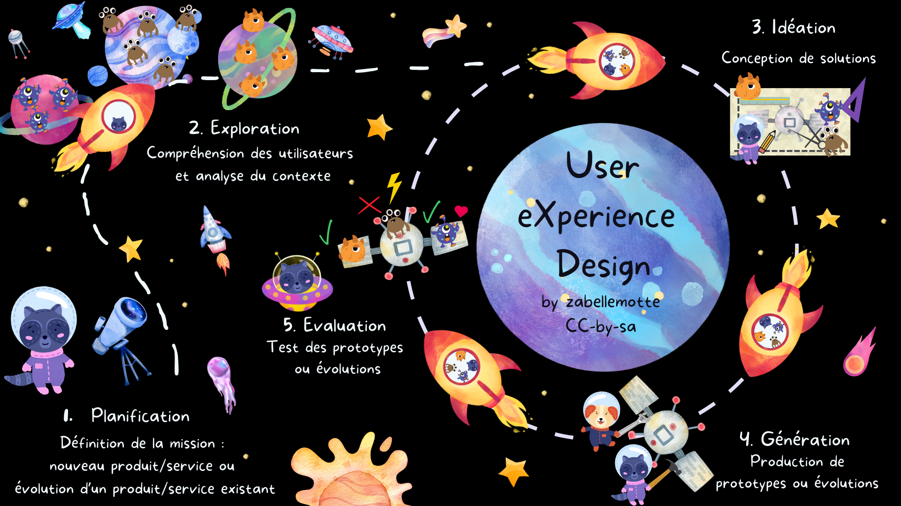
L'approche est structurée en 5 étapes qui inspirent la structure de ce site :
- Planification : Définition de la mission
- Exploration : Compréhension des utilisateurs et analyse du contexte
- Idéation : Conception de solutions
- Génération : Production de prototypes ou évolutions
- Evaluation : Test des prototypes ou évolutions
Les trois dernières étapes sont à envisager de manière itérative pour conduire la finalisation du produit et ses évolutions.
Ne perdez plus jamais la main sur vos projets, gravitez sur la même orbite que vos utilisateurs
Pourquoi impliquer les utilisateurs ?
Les raisons qui justifient d'impliquer les utilisateurs dès la gestation d'un projet sont nombreuses :- moins de risque de dépassement du budget ou du temps de développement
- besoins mieux cernés, donc maintenance évolutive allégée
- meilleure expérience d'utilisation, adoption facilitée, productivité augmentée, temps de formation minimisé
- erreurs et incidents de supports moins fréquents
En bref, impliquer les utilisateurs dès la gestation d'un projet permet d'optimiser la gestion des ressources et de l'expérience.
Adapter un outil en production coûte 10 fois plus de temps que de l'adapter pendant la phase de design.Tom Gilb, ingénieur système spécialiste des méthodes qualité
Quelques références sérieuses sur le retour sur investissement du UX design:
- Bias, R. G., & Mayhew, D. J. (2005). Cost-Justifying Usability: An Update for the Internet Age. Morgan Kaufmann.
- Maguire, M. (2001). Methods to support human-centred design, International Journal of Human-Computer Studies, Volume 55, Issue 4, Pages 587-634, ISSN 1071-5819, https://doi.org/10.1006/ijhc.2001.0503
- International Organization for Standardization. (2019). Ergonomics of human-system interaction — Part 210: Human-centred design for interactive systems (ISO 9241-210:2019). ISO. https://www.iso.org/standard/77520.html
- Sheppard, B., Sarrazin, H., Kouyoumjian, G., & Dore, F. (2018). The business value of design. McKinsey & Company https://www.mckinsey.com/capabilities/tech-and-ai/our-insights/the-business-value-of-design
Qui suis-je ?

Je m'appelle Isabelle Motte et je gère des projets informatiques depuis plus de 20 ans. Ce site vise à partager mes pratiques en matière de gestion des enjeux utilisateurs. Il référence les méthodes qui me semblent intéressantes et simples à mettre en oeuvre. Je mixe des références issues des théories de gestion de projet et du UX Design. Mes pratiques en UX Design ont été renforcées par ma participation en 2026 au Certificat inter universités en User Experience Design and Research (UX) cordonné par l'Université Libre de Bruxelles .
Cet article et ses illustrations sont partagées sous licence Creative Commons-by-sa.
Introduction
Cette section présente les concepts clés liés au design et à la conception centrée utilisateur.
Dans l'article Découvrir les concepts liés à l'UX, le concept d'expérience utilisateur est situé dans une évolution historique partant de l'ergonomie, en passant par l'utilisabilité.
Les modèles pour analyser l'UX tels que le modèle de Hassenzhal ou le modèle de Mahlke sont ensuite présentés dans l'article Découvrir les modèles pour analyser l'UX.
Les concepts de design et d'innovation, ainsi que les différents courants du design sont finalement comparés dans l'article Cerner les concepts de design et d'innovation. Dans ce texte, je présente aussi mon positionnement personnel par rapport aux différents courants du design pour que les lecteurs en soient informés.
Cet article et ses illustrations sont partagées sous licence Creative Commons-by-sa.
Découvrir les concepts liés à l'UX
En un coup d'oeil
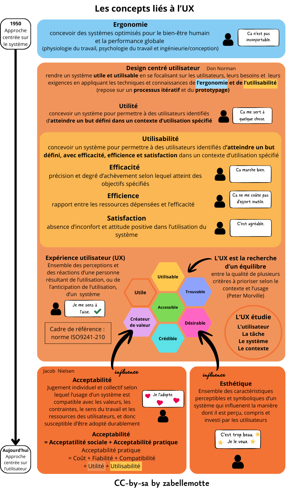
- Au commencement, l'ergonomie
- Premiers pas ver l'UX avec le design centré utilisateur
- Deux concepts au coeur de l'UX : l'utilité et l'utilisabilité
- Quand le concept s'élagit pour devenir l'expérience utilisateur ...
- Une analyse selon des critères à prioriser (selon Peter Morville)
- Deux concepts liés à l'UX : l'acceptabilité et l'esthétique
Au commencement : l'ergonomie
Dans les années 50, face aux nombreus accidents et erreurs humaines dans la manipulation de machines (notamment le pilotage des avions pendant la seconde guerre mondiale) le concept d'ergonomie est formalisé.
L'ergonomie vise à concevoir des systèmes optimisés pour le bien-être humain et la performance globale.
Il s'agit alors d'adapter la machine à l'humain.Premier pas vers l'UX avec le design centré utilisateur
C'est Don Norman qui sera le premier à aller plus loin en proposant d'envisager la conception centrée sur l'utilisateur. Son idée est de rendre un système utile et utilisable en se focalisant sur les utilisateurs, leurs besoins et leurs exigences en appliquant les techniques et connaissances de l'ergonomie et de l'utilisabilité. L'approche repose sur un processus itératif et du prototypage.
Deux concepts au coeur de l'UX : l'utilité et l'utilisabilité
Pour définir l'utilisabilité, il est d'abord nécessaire de comprendre l'utilité.
L'utilité vise à concevoir un système pour permettre à des utilisteurs identifiés d'atteindre un but défini dans un contexte d'utilisation spécifié.
L'utilisabilité va plus loin puisqu'elle vise à concevoir un système pour permettre à des utilisateurs identifiés d'atteindre un but défini, avec efficicacité, efficience et satisfaction dans un contexte défini:
- l'efficacité est la précision et le degré d'achèvement selon lequel l'utilisateur atteint des objectifs spécifiés,
- l'efficience est le rapport entre les ressources dépensées et l'efficacité,
- la satisfaction est l'absence d'inconfort et l'attitude positive de l'utilisateur dans l'utilisation du système.
Quand le concept s'élagit pour devenir l'expérience utilisateur ...
Aujourd'hui, tous ces concepts font partie de la définition plus large d'expérience utilisateur : l'expérience utilisateur est l'ensemble des perceptions et réactions d'une personne résultats de l'utilisation, ou de l'anticipation d'utilisation, d'un système. Elle est formalisée au travers de la norme ISO9241-210.
Une analyse selon des critères à prioriser (selon Peter Morville)
Peter Morville nous enseigne que l'UX est la recherche d'un équilibre entre la qualité de plusieurs critères à prioriser selon le contexte et l'usage: utile, utilisable, trouvable, désirable, crédible, accessible et créateur de sens.
Deux concepts liés à l'UX : l'acceptabilité et l'esthétique
L'UX est influencée par d'autres éléments qui ne sont pas intégrés à sa définition.
L'acceptabilité est un jugement individuel et collectif selon lequel l'usage d'un système est compatible avec les valeurs, les contraintes, le sens du travail et les ressources des utilisateurs, et donc susceptible d'être adopté durablement. Les enjeux éthiques, par exemple, conduisent parfois les utilisateurs à refuser des produits car ils ne sont pas acceptables socialement. Ils peuvent par contre avoir une bonne acceptabilité pratique (utilité, utilisabilité, coût, fiabilité et compatibilité).
L'esthétique est une ensemble de caractéristiques perceptibles et symboliques d'un système qui influencent la manière dont il est perçu, compris et investi par les utilisateurs. L'esthétique a aussi une influence sur l'UX puisqu'elle impacte directement le caractère désirable du produit.
Cet article et ses illustrations sont partagées sous licence Creative Commons-by-sa.
Découvrir les modèles pour analyser l'UX
- L'attitude essentielle pour le UX design : l'empathie
- Deux perspectives pour l'UX dans le modèle de Hassenzhal et 4 types de produits
- Une vue intégrée du processus complet de l'ux avec le modèle de Mahlke
- Les modèles pour cartographier les émotions
- Les besoins psychologiques selon Hassenzhal
- La dynamique temporelle de l'ux selon livre blanc de l'UX
- L'évaluation de l'UX : plusieurs approches dont les grilles UEQ
L'attitude essentielle pour le UX design : l'empathie
Que ce soit pour évaluer ou pour concevoir un produit, l'attitude essentielle à travailler est l'empathie pour être en mesure de cerner les besoins des utilisateurs. Dans la version anglaise du processus d'analyse de l'UX, la première étape d'ailleurs souvent désignée par le terme "Empathise". Mais le terme "Empathiser" n'est pas très courant en français ...
Deux perspectives pour l'UX dans le modèle de Hassenzhal et 4 types de produits
Le modèle d'Hassenzhal est décrit en détail dans l'article Le modèle de l’UX d’Hassenzahl de Catherine Lallemand sur le site uxmind.eu. Ce modèle amène à envisager l'UX selon deux angles distincts : celui du concepteur qui contruit un produit et celui de l'utilisateur qui l'utilise dans une situation donnée.
Les deux vues se croisent autour des caractéristiques du produit qui sont visées par le concepteur et vécues par l'utilisateur. Hassenzahl décompose l'analyse de ces caractéristiques en deux composantes:
- la qualité pragmatique : désigne les aspects instumentaux du produit (son utilité et son utilisabilité) et qui soutiennent la réalisation de tâches, les DO-GOALS);
- la qualite hédonique : se réfère au soi, se base sur un jugement potentiel du produit à procurer du plaisir et à satisfaire l'épanouissement de besoins humains plus profonds, les BE-GOALS.
Ces axes d'analyse peuvent être croisés pour présenter 4 types de produits selon le niveau, faible ou élevé, de leur qualité pragmatique et hédonique.

Les différents types de produits sont désignés comme suit:
- Produit non désiré : avec une qualité pragmatique et une qualité hédonique faible, ces produits rencontrent peu de succès car il ne sont ni pratiques, ni attrayants;
- Produit ACT : ils sont pratiques (qualité pragmatique élevée) mais ne sont pas particulièrement attrayants (qualité hédonique faible);
- Produit SELF: ils sont attrayants mais pas pratiques (qualité hédonique faible et qualité pragmatique élevée);
- Produit désiré : ils sont à la fois attrayants et pratiques, c'est l'idéal à atteindre, avec une qualité pragmatique et hédonique élevées.
Une vue intégrée du processus complet de l'ux avec le modèle de Mahlke
Le modèle intégré le plus complet de l'UX est celui de Mahlke qui présente l'UX comme un flux d'élements qui se transforment :

L'analyse de départ porte sur les 3 éléments suivants:
- le système et ses propriétés,
- l'utilisateur et ses spécificités,
- le contexte et ses particularités (les tâches).
L'interaction humain-machine constitue le rencontre de ces 3 éléments et l'expérience utlisateur est décomposée en 3 parties :
- la perception des qualités instrumentales (semblable aux qualités pragmatiques de Hassenzhal),
- la perception des qualités non instrumentales (semblable aux qualités hédoniques de Hassenzhal mais reliée explictement à l'esthétique et à la symbôlique),
- les réactions émotionelles (point non explicité dans le modèle de Hassenzhal).
Les modèles pour cartographier les émotions
Plusieurs modèles peuvent permettre de carthographier les émotions, comme la roue des émotions de Plutchik ou le roue des émotions de Genève. Ces deux outils sont présentés en détail dans l'article "Typologie des émotions – i18n" du blog de Sébastien Barbieri.Les besoins psychologiques selon Hassenzhal
Pour analyser les qualités hédoniques des produits, Hassezhal nous propose aussi une grille (plus détaillée que celle de Maslow) des besoins psychologiques:- la réalisation de soi, de sens : sont liées au développement de son meilleur potentiel, en alignement avec ses valeurs;
- l'autonomie, l'indépendance: sont liées au besoin d'être la cause de ses propres actions et d'être en mesure de personnaliser son enironnement;
- l'appartenance, le relationel : reposent sur le fait d'avoir des contacts réguliers et proches avec les personnes qui comptent;
- l'influence, la popularité : supposent de se sentier aimé, respecté et d'avoir un impact sur ce que les gens font;
- la compétence, l'efficacité : reposent sur le fait d'atteindre ses buts et d'accompalir ses tâches;
- la sécurité et le contrôle : s'appuient sur le sentiment que la vie est structurée et prévisible et qu'il est important d'interagir avec des systèmes prévisibles;
- le plaisir et la stimulation : sont basées sur le fait de ressentir du plaisir, de réaliser une activité nouelle ou ludique;
- le bien-être et la santé : reposent sur le fait de se senti bien mentalement et physiquement (composante ajoutée au modèle original de Hassenzhal).
La dynamique temporelle de l'ux selon livre blanc de l'UX
Les deux modèles précédent permettent de cerner les composantes de l'expérience utilisateur et de dégager 4 types de produits, mais ils ne présentent pas la composante temporelle de l'expérience utlisateur. Le livre blanc sur l'UX décompose plusieurs phases temporelles de l'UX :- l'UX anticipée : basée sur l'expérience imaginée avant usage,
- l'ux momentannée : basée sur l'expérience vécue pendant l'usage,
- l'ux épisodique : basée sur ce qu'on retient de l'expérience après usage (les détails s'atténuent),
- l'ux cumulative : basée sur ce que l'on retient après de multiples utilisations à travers le temps.
L'évaluation de l'UX : plusieurs approches dont les grilles UEQ
Pour évaluer l'UX, les tests utilisateurs et les questionnaires d'échelle UX peuvent être utilisés pour évaluer tant les qualités pragmatiques que les qualités hédoniques. Les User Experience Questionnaire sont documentés en ligne sur les sites
- https://www.ueq-online.org (pour la version simple),
- https://ueqplus.ueq-research.org (pour la version plus longue, avec des items qui se recoupent).
Pour évaluer les qualités pragmatiques, il est aussi possible d'exploiter:
- les évaluations expertes,
- les checklists d'utilisabilité.
Pour évaluer les qualités hédoniques, il est aussi possible d'exploiter:
- les analyses des émotions,
- les analyses des besoins.
Cet article et ses illustrations sont partagées sous licence Creative Commons-by-sa.
Cerner les concepts de design et d'innovation
- Le design, un processus au service de l'innovation
- Un tableau comparatif des différents courants du design
- Ma conception personnelle du design
Le design, un processus au service de l'innovation
Le design est une activité de conception orientée ves la création de solutions pertinentes et utilisables dans un contexte donné. La conception est envisagée au travers d'un processus itératif qui intègre des phases suivantes : empathie, définition, idéation, prototype et test. Une belle illustration de l'intérêt de l'approche design avec l'importance du prototypage : l'extrait du film The Founder qui explique comme le concept de fast food a été inventé par les frères Mac Donalds.
La créativité est la capacité à générer des idées nouvelles et originales. Elle n'est pas forcément au coeur du design car la phase d'idéation du design peut seulement reposer sur de l'ingéniosité, la capacité à générer des idées nouvelles dans le contexte, via imitation, inspiration, adaptation, ...
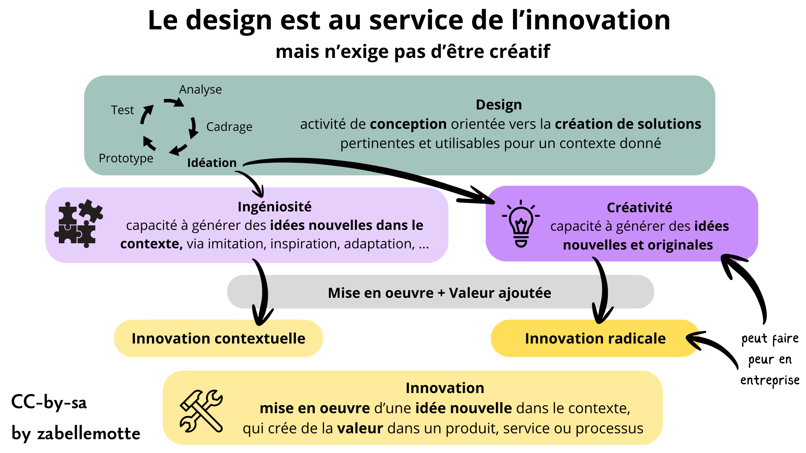
Le design peut servir l'innovation lorsque la mise en oeuvre des idées nouvelles apporte une valeur ajoutée au produit, service ou processus. Pour innover, il est nécessaire de bénéficier d'un espace de liberté, mais aussi d'un cadre et d'une idée attrayante.
Notons que l'innovation radicale, basée sur une démarche créative, peut faire peur aux entreprises.
A l'issue de l'étape de cadrage du design, il devrait être possible de définir le besoin en complétant cette phrase:
En tant que ...................,
j'ai besoin de ..................
car mon problème est de ...................
Un tableau comparatif des différents courants du design
Le design se décline en plusieurs courants, émanant de différentes disciplines, qui donnent tous une place plus ou moins grande aux utilisateurs. En tant qu'universitaire, il m'a semblé intéressant de questionner la place accordée à la veille dans la littérature scientifique. Le tableau ci-dessous a été réalisé avec l'aide ChatGPT pour tenter de cerner les nuances entre les différentes écoles du design.
| Paradigme | Postulat central | Point de départ | Savoir mobilisé | Rapport à la littérature scientifique | Contextes pertinents | En savoir plus |
|---|---|---|---|---|---|---|
| Design Thinking | Le problème doit être exploré avant d’être formulé | Empathie, terrain, idéation | Qualitatif, créatif | Faible à modéré, souvent implicite | Innovation, problèmes ouverts | Article de l'Interaction Design Foundation |
| User-Centered Design (UCD) | Le système doit être adapté aux utilisateurs | Analyse des besoins et des usages | Ergonomie, données utilisateurs | Modéré, structuré | Conception logicielle, IHM | Article de l'UXMag |
| Evidence-Based Design | Les décisions doivent reposer sur des preuves | Littérature scientifique, données validées | Scientifique, empirique | Central et explicite | Santé, éducation, systèmes critiques | Article de l'Interaction Design Foundation |
| Lean Design | Il faut apprendre vite par l’expérimentation | Hypothèses, Minimum Viable Product, feedback | Expérimental, itératif | Opportuniste, en continu | Produits numériques, équipes agiles | Article de l'Interaction Design Foundation |
| Participatory Design | Les utilisateurs sont co-concepteurs | Ateliers, co-design | Expérientiel, collectif | Variable | Services publics, contextes sociaux | Article Wikipédia |
| Research-Based Design | La recherche structure la conception | Veille, études, cadres théoriques | Académique et appliqué | Forte, en amont | Innovation informée, systèmes complexes | Article Wikipédia |
| Human-Centered Design (HCD) | Le design doit servir le bien-être humain | Besoins humains, contexte | Interdisciplinaire | Variable | Design social, services, numérique | Article de l'Interaction Design Foundation |
| Service Design | Le service est une expérience globale | Parcours, interactions, acteurs | Systémique, organisationnel | Modéré | Services numériques, publics | Article de l'Interaction Design Foundation |
| Value-Sensitive Design | Les valeurs doivent être intégrées au design | Valeurs, enjeux éthiques | Normatif et analytique | Forte, conceptuelle | Numérique responsable, IA | Article Wikipédia |
Ma conception personnelle du design
Personnellement, il me semble intéressant de partir des résultats existants dans la littérature scientifique ou de retours d'expériences pour gagner du temps dans la conception. Les approches Evidence-Based et Research-Based me parlent beaucoup.
Mais je ne tomberais pas dans le travers de réserver le design à des experts sans impliquer les utilisateurs. Je pense que l'implication des utilisateurs est essentielle pour analyser finement le problème, les besoins et imaginer des solutions. Le processus de design me semble aussi contribuer à l'accompagnement du changement. Cependant, je suis convaincue que les phases d'idéation peuvent être rendues plus efficientes quand elles sont nourries par des lectures de références liées.
Je suis aussi sensible à l'approche Lean qui vise à produire le "Minimum Viable Product". L'idée d'optimiser les resources, de prioriser les besoins pour aller à l'essentiel, est aussi au coeur de ma pratique.
Les articles rédigés dans ce site sont clairement influencés par mon positionnement personnel par rapport au concept de design.
Cet article et ses illustrations sont partagées sous licence Creative Commons-by-sa.
1. Planification
Cet article et ses illustrations sont partagées sous licence Creative Commons-by-sa.
Identifier les parties prenantes avec la matrice pouvoir et intérêt
En un coup d'oeil

- Etape UX
- 1. Planification
- Catégorie
- Gestion de projet
- Intérêt
- Identifier les acteurs du projet et définir comment les impliquer
- Complexité
- Facile
- Durée
- Quelques heures
- En vidéo
- Tuto Matrice Pouvoir Intérêt (LP Animateur Qualité)
En résumé
La matrice pouvoir et intérêt présente les acteurs impliqués selon leur pouvoir et leur intérêt par rapport au projet. Elle est plutôt conçue pour l'équipe pilote du projet et détermine plutôt la manière d'impliquer les différents acteurs.
Le pouvoir est la capacité à influencer les actions dans l'organisation (lié aux ressources ou compétences mobilisables). Alors que l'intérêt est le degré d'implication émotionnelle ou pratique dans les activités de l'organisation.
La matrice se compose de 4 quadrants selon le niveau de pouvoir (faible ou élevé) et le niveau d'intérêt (faible ou élevé):
- Intérêt élevé / Pouvoir élevé : Acteurs clés à mobiliser régulièrement par rapport à l'orientation du projet (à impliquer dans un comité de pilotage par exemple)
- Intérêt élevé / Pouvoir faible : Acteurs à garder informés et à sensibiliser aux raisons du changement (à impliquer dans un comité d'utilisateurs testeurs par exemple)
- Intérêt faible / Pouvoir élevé : Acteurs à garder satisfaits (à impliquer dans des tests utilisateurs occasionnels par exemple)
- Intérêt faible / Pouvoir faible : Acteurs à informer occasionnellement
Comment l'appliquer ?
Les étapes pour composer la matrice pouvoir et intérêt sont les suivantes :- Identifier tous les acteurs :
- ceux qui seront affectés par le projet de près ou de loin
- ceux qui peuvent influencer le projet positivement ou négativement
- ceux qui peuvent mobiliser des ressources pour le projet.
- Composer la matrice et identifier le niveau de pouvoir et d'intérêt de chaque acteur
- Vérifier que chaque position correspond la position réelle de chaque acteur et non à la position désirée de chaque acteur
- Prenez en compte le fait que les acteurs qui engagent des ressources dans le projet auront un fort pouvoir et/ou intérêt pour le projet.
- Valider la matrice avec l'équipe projet
Exemple concret
Dans une entreprise de vente de pneus, une refonte du site web est envisagée pour optimiser les ventes. Le nouveau site sera mis en place par une agence externe qui sera un des acteurs du projet, au même titre que l'équipe informatique.
La matrice pouvoir et intérêt permet d'identifier les acteurs à impliquer dans ce projet:

- pouvoir élevé et intérêt élevé : la direction marketing et e-commerce est le premier service concerné par ce projet, qui devra aussi prendre en compte les retours des garages partenaires et du service client
- pouvoir élevé et intérêt faible : la direction générale doit mobiliser le budget pour le projet et la réalisatoin sera portée conjointement par l'agence web et le service informatique interne; la satisfaction de ces acteurs est essentielle pour la réussite du projet
- pouvoir faible et intérêt élevé : les clients et le service dépôt devront être tenus informés des changements et pourront être consultés plus en vala du projet
- pouvoir faible et intérêt fiable : les visiteurs occasionnels du site seront seulement informés des évolutions.
Variantes
Il existe de nombreuses variantes de matrices pour cartographier les parties prenantes :- La matrice pouvoir, intérêt et attitude de Louise Hillson & Ruth Simon (2007) ajoute une dimension liée à l'attitude (partisan ou résistant) au modèle et dégage 8 profils comme l'ami, le saboteur ou le détonateur.
- La matrice impact et influence de la Banque mondiale (1998) croise le degré d'affectation par le projet (impact) et la capacité à influencer les décisions (influence). Elle permet d'identifier ceux qui subissent le plus les effets du projet même s’ils n’ont pas de pouvoir décisionnel. Elle est conseillée pour les projets participatifs ou à fort impact social, afin d’équilibrer pouvoir d’influence et vulnérabilité des acteurs (développement rural ou urbain, projets environnementaux, réformes administratives, ...).
- La matrice pouvoir, légitimité et urgence de Ronald K. Mitchell, Bradley R. Agle & Donna J. Wood (1997) permet de définir une typologie de 8 profils d'acteurs comme le "definitive stakeholder" qui répond au 3 critères, le "dangereux" qui a le pouvoir et l'urgence et le "demandeur" qui a seulement l'urgence.
Limites
La matrice pouvoir et intérêt offre une première analyse très simple des parties prenantes d'un projet mais elle ne permet pas de mettre en évidence les jeux d'influence et constitue une vision à un instant précis du projet. Si certains acteurs ou certaines positions changent, il est bon de redéfinir la matrice. Cette matrice définit un mode d'implication généraliste qu'il est nécessaire d'opérationnaliser ensuite.
La petite histoire
La matrice pouvoir et intérêt a été créée par Aubrey L. Mendelow en 1991. Ce chercheur de la Manchester Business School questionnait les acteurs à impliquer dans l'analyse et la communication liées à la plannification stratégique.
Cet article et ses illustrations sont partagées sous licence Creative Commons-by-sa.
Cartographier les parties prenantes avec la matrice RACI ou RASCI
En un coup d'oeil

- Etape UX
- 1. Planification
- Catégorie
- Gestion de projet
- Intérêt
- Identifier les acteurs du projet et définir leurs responsabilités
- Complexité
- Facile
- Durée
- Quelques heures
- En vidéo
- La matrice des responsabilités RASCI (Actualisation TV)
En résumé
La matrice d'affectation des responsabilités ou matrice d'autorité croise différentes tâches ou étapes du projet avec les acteurs pour identifier leurs responsabilités. Les responsabilités se déclinent selon l'acronyme RACI ou RASCI:- Responsable : Réalise la tâche
- Approbateur : Approuve le travail effectué
- Supporter : Soutien la mise en oeuvre
- Consulté : Contribue à la clarification de la tâche
- Informé : Doit être informé de l'avancement de la tâche
Comment l'appliquer ?
La matrice peut être réalisée par le chef de projet ou lors d'une réunion réunissant les principaux acteurs du projet.Les étapes pour la composer sont les suivantes :
- Identifier les étapes ou tâches liées à la réalisation du projet
- Identifier tous les acteurs du projet
- Composer la matrice et définir les responsabilités
- Identifier et corriger les lacunes et chevauchements
- Vérifier que la matrice est conforme aux règles suivantes :
- un seul A par ligne sinon subdiviser en 2 tâches
- au moins un R pour chaque ligne
- Valider la matrice avec les principaux acteurs du projet
Exemple concret
Dans une institution où la formation interne est portée par différents opérateurs de formation indépendants, on souhaite mettre en place une application unique pour la gestion des formations intenes.
La solution ne sera pas développée en interne mais l'idée est d'adopter une solution disponible sur le marché sous forme de service SAAS pour lequel l'institution souhaite souscrire à un abonnement.
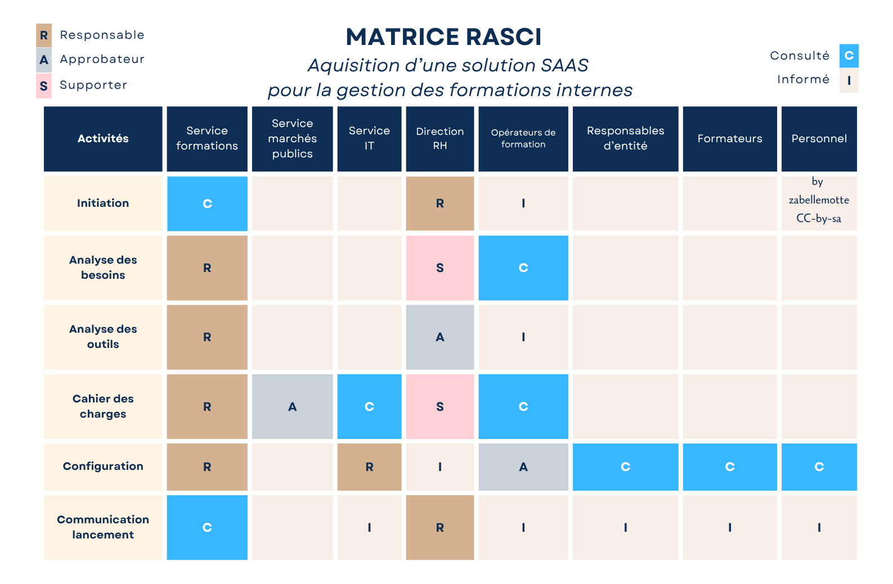
Les opérateurs de formation interne seront très mobilisés tout au long du projet car ils travaillaient en toute autonomie et doivent à présent accepter de travailler avec une application commune.
Et d'autres acteurs seront aussi consultés plus en aval, comme les responsables d'entité qui auront une vue sur les formations de leur entité ou les formateurs qui seront amenés à réaliser quelques actiions de gestion dans l'application.
Finalement, les représentants du personnel seront amenés à tester l'application en primeur avant son lancement pour détecter si des adaptations sont nécessaires.
Variantes
Les variantes de la matrice des responsabilités peuvent induire d'autres rôles :- Quality manager : Vérifie la qualité du produit
- Politique : Apporte un soutien stratégique (pour distinguer ce rôle du rôle de supporter qui apporte des ressources au projet)
Limites
La matrice des responsabilités est adaptée à une analyse macro pour définir les reponsabilités des différents grands acteurs au début d'un projet.
Vous en trouverez des variantes plus micro, dédicacée à la répartition des tâches entre les différents membres d'une équipe projet. La déclinaison micro de la méthode RASCI peut alourdir la matrice et s'avérer peu pratique. D'autres approches plus adaptées sont abordées dans la partie 4. Design
Astuce
Les visuels de cette page ont été réalisés à partir du modèle "matrice RACI" proposé sur le site canva.com sans nécessiter d'abonnement payant.
La petite histoire
La matrice RACI apparaît dans les années 1950-1970 dans le monde du management de projet et du business process reengineering. La matrice RACI est une création collective issue de la normalisation progressive des pratiques de management et de clarification des responsabilités.
Cet article et ses illustrations sont partagées sous licence Creative Commons-by-sa.
Etudier les risques avec l'analyse SWOT
Cet article et ses illustrations sont partagées sous licence Creative Commons-by-sa.
Prioriser les risques avec la matrice des probabilités et impacts
Cet article et ses illustrations sont partagées sous licence Creative Commons-by-sa.
Questionner les enjeux éthiques dès le départ
- 5 pôles pour envisager les enjeux éthiques
- Le respect des données personnelles : finalité, consentement et souveraineté
- Des algorithmes transparents et explicables
- L'attention de l'utilisateur comme ressource finie
- Des personas au service de la diversité, de l'insclusion et de l'accessibilité
- L'impact écologique maîtrisé au travers de l'éco-conception
5 pôles pour envisager les enjeux éthiques
Les enjeux éthiques sont présentés au travers de 5 pôles critiques:
- les données personnelles des utilisateurs qui sont collectées,
- les algorithmes utilisés pour trier les résultats de recherche, proposer des recommandations et personneliser l'expérience utilisateur,
- l'attention des utilisateurs qui est devenue une ressource monétisable et rare,
- la diversité dans la manière d'envisager les personas,
- l'impact écologique du produit ou service
Ces 5 pôles sont détaillés dans l'infographie ci-dessous et dans les sections suivantes.
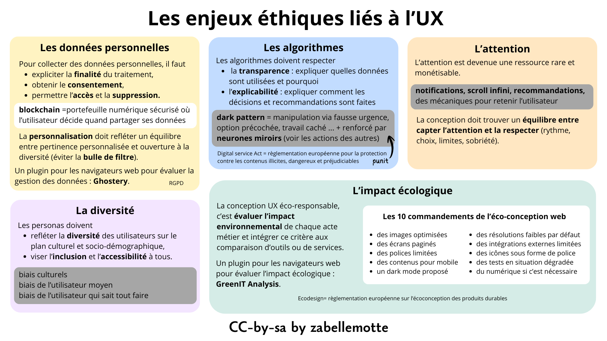
Le respect des données personnelles : finalité, consentement et souveraineté
La plupart des services exigent aujourd'hui que les utilisateurs partagent des données personnelles. Ces données sont utilisées pour permettre une personnalisation de l'expérience utilisateur au travers de recommandations ou d'options de filtre avancées. Mais la collecte de ces données est encadrée en Europe par le réglement générale sur la protection des données (RGPD).
Cette réglementation se décline comme suit:
- l'utilisateur doit donner son consentement pour la collecte de ses données,
- il doit être informé de la finalité des traitements réalisés,
- il doit rester souverain dans la gestion de ces données, c'est-à-dire être en mesure d'y accéder, de les rectifier et de les supprimer.
La personnalisation doit rester pertinente et éviter d'enfermer l'utilisateur dans une bulle de filtre qui serait à l'encontre de la diversité. Ce risque est particulièrement grand avec les outils d'IA qui sont conçus pour être conciliants.
La blockchain pourrait devenir une approche plus respectueuse des utilisateurs pour la gestion de la collecte et du partage de données, puisqu'elle permet à l’utilisateur de contrôler lui-même, via un portefeuille numérique sécurisé, les accès à ses données et leur partage au cas par cas.
Des algorithmes transparents et explicables
Les données des utilisateurs sont traitées via des algorithmes qui peuvent parfois être très obscurs. Les résultats d'une recherche peuvent par exemple privilégier l'affichage de résultats sponsorisés dont la caractère sponsorisé est parfois très peu mis en évidence. Pour que le respect des données utilisateurs soit garanti, il faut respecter la transparence et l'explicabilité. Un algorithme transparent est un algorithme dont l’utilisateur sait qu’il est utilisé, quelles données il mobilise et dans quel but il produit des résultats ou des décisions. Un algorithme explicable est un algorithme qui permet à l’utilisateur de comprendre pourquoi un résultat, une recommandation ou une décision lui est présenté. Le design UX doit donc réussir à informer sans complexifier.
Certains services vont jusqu'à manipuler l'utilisateur via des dark patters qui peuvent prendre différentes formes :
- simuler une situation d'urgence ("Seulement 3 produits restants à ce prix"),
- proposer une option payante cochée par défaut,
- exploiter des travailleurs cachés pour biaiser les évaluations ou recommandations,
- exploiter les mécanismes de neurones miroirs en présentant les actions des autres utilisateurs de manière incitative.
Ces méthodes sont aujourd'hui punissables par le Digital Service Act européen qui vise à garantir la sécurité des utilisateurs, la transparence des contenus et la responsabilité des services numériques.
Le site designersethiques.org propose des recommandations pour un design éthique et notamment une approche pour visibiliser les dark patterns.
L'attention de l'utilisateur comme ressource finie
Pour Yves Citton, l’économie n’est plus seulement fondée sur la production de biens matériels, mais sur la capture et la mise en valeur de l’attention humaine, devenue une ressource rare. Les médias et plateformes numériques se livrent une concurrence permanente pour capter cette attention, souvent en la fragmentant et en la sollicitant de manière continue. Cette logique favorise des contenus émotionnels, polarisants ou simplificateurs, au détriment de formes d’attention plus lentes, réflexives et collectives. L’attention n’est donc pas neutre : elle structure notre rapport au monde.
Citton insiste sur le fait que l’attention n’est pas seulement une ressource à exploiter, mais un bien commun à cultiver et à protéger. Il appelle à développer une écologie de l’attention, c’est-à-dire un ensemble de pratiques sociales, culturelles et politiques visant à préserver des régimes d’attention soutenables, émancipateurs et partagés. Cela implique de repenser les dispositifs techniques, éducatifs et médiatiques afin de renforcer l’autonomie des individus et leur capacité à orienter consciemment leur attention, plutôt que de la laisser être capturée par des logiques purement marchandes.
Certains services exploitent des approches qui visent à retenir l'utilisateur : notifications fréquentes, scroll infini, recommandations multiples, ... L'UX design doit trouver un équilibre entre capter l'attention et la respecter.
Des personas au service de la diversité, de l'inclusion et de l'accessibilité
Les personas sont censés représenter les utilisateurs réels, mais ils peuvent facilement devenir des projections biaisées des concepteurs. Ces biais apparaissent dès la sélection des profils, des données et des hypothèses utilisées pour les construire:
- Biais de projection : le concepteur projette ses propres usages, compétences et valeurs sur l’utilisateur.
- Biais de représentativité : les personas reflètent seulement une partie dominante ou visible des utilisateurs, oubliant les profils marginaux ou atypiques.
- Biais socio-culturels : les normes culturelles, linguistiques ou sociales du concepteur influencent la perception des utilisateurs.
- Biais de genre et stéréotypes : association implicite de certaines tâches, comportements ou compétences à un genre ou rôle social.
- Biais de données : personas construits à partir de données partielles, incomplètes ou biaisées, sans tenir compte des non-utilisateurs.
- Biais de finalité : personas orientés pour justifier des choix stratégiques ou économiques plutôt que pour représenter les besoins réels.
Prendre en compte l'accessibilité exige aussi d'integrer des capacités et contextes variés d'utilisation. Un service accessible est un service qui fonctionne pour tout le monde, pas seulement pour l’utilisateur “idéal”.
La notion de « Turing-Complete User », popularisée par Bret Victor, désigne une critique du design logiciel qui suppose implicitement que l’utilisateur est capable de compenser la complexité d’un système par ses propres efforts cognitifs. Cette vision est problématique du point de vue de l’UX et de l’éthique, car elle transfère la charge de complexité du système vers l’utilisateur et favorise l’exclusion.
L'impact écologique maîtrisé au travers de l'éco-conception
Les chiffres sur l'impact écologique du numérique sont alarmants:
- le nombre d'objets connectés a été multiplié par x48 de 2010 à 2025 (source GreenIT)
- la fabrication du matériel est le premier impact du numérique (source ARCEP - Etude d'impact environnemental)
- les européens sont les plus gros producteurs de déchets par habitant (source GreenIT)
- l’IA représente actuellement 20% de la consommation électrique mondiale des data centers (source Geeko)
- ...
L'éco-conception vise à intégrer l'impact environnemental dès la conception d'un produit ou service et lors de toutes les étapes de son cycle de vie. Un service numérique est constitué de l'ensemble des matériels, logiciels et infrastructures qui permettent de réaliser une action au format numérique.
La norme IEC 62430 fournit un cadre volontaire de bonnes pratiques pour intégrer la durabilité dès la conception des produits. Le règlement européen Écodesign (ESPR), lui, fixe des exigences obligatoires de réparabilité, recyclabilité et efficacité énergétique pour tout produit mis sur le marché européen. Ensemble, ils guident les concepteurs vers des produits à la fois écologiques et conformes à la loi.
La démarche d'éco-conception vise à évaluer l'empreinte environnementale des différents actes métiers proposés par la service et repose aussi sur la nécessité de comparer les services via une analyse de cycle de vie.
Des grilles d'analyse émergent, comme l'éco‑index qui est un outil français qui mesure l’impact environnemental des pages web (émissions de CO₂, consommation d’énergie et poids de la page) pour aider les développeurs à créer des sites plus responsables.
Cette métrique concrète est le fruit du projet GreenIT.fr qui vise à évaluer la “durabilité” des sites web.
Cette initiative a aussi permis le développement d'extensions de navigateur pour afficher l'empreinte écologique d'une page web, basée sur l'éco-index.
Une manière simple d'optimiser ou de comparer des services pour un parcours client défini ...
Télécharger GreenIT Analysis pour Firefox
Télécharger GreenIT Analysis pour Chrome
Pour les concepteurs web, les recommandations peuvent être résumées comme suit:
- optimiser l'utilisation des images : taille, résolution pas pour les icônes, ...
- privilégier les polices comme Font Aweson pour afficher les icônes,
- éviter les pages avec du scroll infini et afficher des résultats de recherche paginés,
- limiter le nombre de polices utilisées (max 2) et les variantes (max 4) et préférer les polices natives aux polices téléchargées,
- envisager le design mobiles first pour simplifier les contenus et éviter une adapation pour ce support,
- proposer un mode dark ou supporter le mode dark des navigateurs principaux
- privilégier le partage de de médias avec des résolutions faibles par défaut
- limiter le nombre d'intégrations externes (carte interactive, réseaux sociaux, ...) et les remplacer autant que possible par des liens,
- veiller à tester le site en situation dégradée (mauvaise connexion),
- envisager la numérisation de services uniquement quand c'est nécessaire.
Cet article et ses illustrations sont partagées sous licence Creative Commons-by-sa.
Rédiger une fiche projet pour cadrer la demande
En un coup d'oeil

- Etape UX
- 1. Planification
- Catégorie
- Gestion de projet et approche UX
- Intérêt
- Valider la demande et cadrer l'intervention
- Complexité
- Moyenne
- Durée
- Quelques jours (selon l'ampleur)
- En vidéo
- La note de cadrage : un outil clé pour la gestion de projet par Laeti Ducos
Comment cadrer une mission UX Design par Les éclaireuses
En résumé
La fiche projet vise à dresser une synthèse de la demande. Elle doit être approuvée par le demandeur. Elle est parfois aussi appelée "note de cadrage" ou "charte projet" pour cette raison. Les grandes méthodes de gestion de projet proposent chacune une approche pour définir la fiche projet. De manière générale, cette fiche projet est structurée comme suit :- Présentation:
- le nom du projet doit être accrocheur,
- les objectifs stratégiques doivent être identifiés,
- le contexte de travail lié au métier doit être décrit aussi clairement que possible,
- les enjeux essentiels liés au métier doivent être identifiés,
- les résultats attendus doivent décrire la valeur ajoutée espérée.
- Cadre:
- le périmètre du projet décrit ce qui entre dans le projet et ce qui est hors projet,
- les contraintes sont les limites imposés par le projet (budget, ressources humaines),
- les facteurs critiques de succès décrivent les conditions à réunir pour réussir le projet,
- les conditions de réussite sont les éléments qui peuvent impactent la réussite du projet et qui sont hors de mon contrôle (évolution de la législation, disponibilité des utilisateurs, ...),
- les indicateurs de réussite sont des indicateurs mesurables et vérifiables (indicateurs SMART) qui permettront d'évaluer la réussite,
- les risques visent à anticiper les éléments qui pourraient affecter le bon déroulement du projet (voir les pages sur l'analyse SWOT et la matrice des probabilités et impacts notamment)
- Internenants: ils peuvent être identifiés avec la matrice pouvoir et intérêt, carthographiés plus finement avec la matrice RASCI et mobilisés avec la méthode ADKAR, notamment pour définir
- le responsable politique qui va soutenir la réalisation du projet,
- le porteur ou chef de projet qui va coordonner le déroulement du projet,
- le responsable métier qui sera garant de la bonne définition des besoins métier et de la qualité métier du produit,
- le responsable technique qui sera garant de la qualité technique du produit.
- Utilisateurs impactés: L'approche UX fait un focus sur les utilisateurs impactés et propose de décrire chaque profil utilisateur au travers d'un proto-persona, qui n'est pas encore un persona mais une ébauche de persona. Chaque profil utilisateur est donc décrit par un proto-persona détaillé comme suit:
- le titre qui le définit,
- les caractéristiques de ce persona en terme socio-démographique, de contexte d'usage, ...
- les jobs-to-be-done par ce profil utilisateur,
- le poids de ces utilisateurs, qui peut être lié à leur nombre ou à leur fréquence d'utilisation,
- la priorité avec laquelle leurs besoins doivent être rencontrés.
- Solutions:
- les approches possibles sont présentées,
- les hypothèses de travail sont listées et l'approche UX nous propose de détailler chaque hypothèse via 4 champs:
- 1 persona
- 1 problème du persona
- 1 solution envisagée
- 1 approche UX pour tester l'hypothèse
- l'analyse coût/bénéfice qui permet de justifier l'approche privilégiée
- la méthodologie envisagée pour mettre en place la solution.
- Phases: le planning des différentes étapes du projet est finalement proposé.
- Enjeux éthiques: la conception UX questionne aussi plusieurs enjeux éthiques qui sont détaillés dans l'article Questionner les enjeux éthiques dès le départ et liés aux éléments suivants:
- le respect des données personnelles et de l'attention des utilisateurs,
- la transparence dans la manière dont les données sont exploitées et l'explicabilité des algorithmes,
- la représentativé dans la définition des personas pour soutenir l'inclusion et l'accessibilité,
- l'éco-conception pour évaluer l'impact environnemental en continu.
En savoir plus sur la fiche projet PMBOK ...
En savoir plus sur la fiche projet PRINCE2 ...
En savoir plus sur la fiche projet AMOA ...
Comment l'appliquer ?
Pour illustrer l'intérêt de la fiche projet, voici un exemple de ficher projet pour une projet informatique qui vise l'acquisition d'une application SAAS pour la gestion des formations internes dans une entreprise qui compte plusieurs opérateurs de formations différents (formation onboarding par les ressources humaines, formation comptable par l'équipe comptabilité, formation à l'approche client par l'équipe commerciale, formation en sécurité et en secoursime par l'équipe sécurité...).
En lisant la fiche projet ci-dessous, vous devriez avoir une idée claire du besoin.
- Présentation:
- nom du projet : MyFORM, un outil pour la gestion centralisé des formations et du reporting sur les formations;
- objectifs stratégiques : centraliser la gestion des formations pour simplifier la gestion du reporting légal;
- contexte : la législation belge sur le droit individuel à la formation impose de tenir un décompte du droit individuel à la formation de chaque employé (5 jours pour un temps plein); actuellement, les opérateurs travaillent de manière indépendante, avec des outils divers (application maison, formulaires web, ...);
- enjeux métier : les pratiques de gestion des inscriptions aux formations sont variées : inscription réservée à un public ciblé, inscription libre, inscription libre avec validationµ et les opérateurs espèrent bénéficier d'une application plus professionnelle qui leur permette de gérer des listes d'attente pour repêcher un participant facilement en cas de désistement;
- résultats attendus: faire l'acquisition d'une application SAAS qui réponde aux besoins métiers.
- Cadre:
- périmètre : l'application permettra d'associer un local à chaque formation organisée sur site, mais elle ne gèrera pas directement la réservation de locaux car la gestion des locaux est trop décentralisée pour l'instant; la gestion de la réservation des locaux sort du cadre du projet actuel mais des critères seront prévu dans le cahier des charges pour être en mesure d'intégrer une solution de gestiond e résrvation des locaux plus tard;
- contraintes : le conseil d'administration prévoit un budget de xxxxx euros par an pour acquérir des licences pour une application SAAS qui réponde au besoin (prix estimé après rencontre avec plusieurs commerciaux) et un bedget est prévu pour engager une personne pendant 2 ans pour piloter le projet et accompagner la transition;
- facteurs critiques de succès : le principal défi de ce projet est de réussir à cerner les besoins des différents opérateurs et à les fédérer dans une vision commune;
- conditions de réussite : le nouveau grouvernement envisage de faire écoluer la législation sur le droit individuel à la formation et cela imposera peut-être des adaptations au projet;
- indicateurs de réussite:
- risques : le non respect de la législation sur le droit individuel à la formation engendre un risque réputationnel prégudiciable.
- Internenants:
- responsable politique: direction des ressources humaines,
- porteur ou chef de projet engagé dans le cadre de la mise en place et de l'accompagnement du projet
- responsable métier: responsable RH de la formation interne
- responsable technique : chef de projet informatique qui veillera à la bonne intégration du nouvel outil dans l'écosystème informatique (authentification, mail, ...).
- Utilisateurs impactés:
- Solutions:
- approches possibles : 3 outils sont pressentis pour répondre au besoin et dans la gamme de prix envisagée
- hypothèses:
- analyse coût/bénéfice : solution 1, solution 2, solution 3
- méthodologie : 3 équipes pilotes puis les autres.
- Phases: le planning des différentes étapes du projet est finalement proposé.
- Enjeux éthiques:
- la solution envisagée devra répondre aux normes du RGPD pour que la gestion des données sur les membres de l'entreprise soit encadrée,
- la solution envisagée devra répondre à la norme de sécurité ISO27001 qui définit un cadre sécurisé pour la gestion du développement et de l'infrastruture,
- l'impact écologique sera un des critères de qualité et il sera mesuré via l'éco-index en utilisant l'extension de navigateur GreenIT.
| Titre | Caractéristiques | jobs-to-be-done | poids | priorité |
| Opérateur de formation | Travail sur ordinateur | jobs-to-be-done | poids | priorité |
| Titre | Caractéristiques | jobs-to-be-done | poids | priorité |
| Titre | Caractéristiques | jobs-to-be-done | poids | priorité |
| Persona | Problème | Solution envisagée | Approche UX |
| Titre | Caractéristiques | jobs-to-be-done | poids |
| Titre | Caractéristiques | jobs-to-be-done | poids |
| Titre | Caractéristiques | jobs-to-be-done | poids |
Cet article et ses illustrations sont partagées sous licence Creative Commons-by-sa.
Cartographier les méthodologies UX pour faire le bon choix
a faire à la fin à partir du cours gestion de projet ux
Cet article et ses illustrations sont partagées sous licence Creative Commons-by-sa.
2. Exploration
Cet article et ses illustrations sont partagées sous licence Creative Commons-by-sa.
Faire une revue de la littérature scientifique sur une question UX (avec l'IA)
En un coup d'oeil

- Etape UX
- 2. Exploration
- Catégorie
- UX design
- Intérêt
- Avoir une idée des pistes de solutions recommandées dans la littérature scientifique
- Complexité
- Simple (avec l'IA)
- Durée
- Quelques heures
- En vidéo
- Search for specific keywords with Elicit (Ought)
- Pas de veille scientifique avec les outils d'IA générative classiques
- Les outils d'IA pour la recherche académique et la revue de littérature
- Exploiter un outil simple d'IA pour la recherche académique : Elicit
- Exemple concret avec l'outil Elicit
- La petite histoire ...
Pas de veille scientifique avec les outils d'IA générative classiques
Les outils d'IA générative de type LLM généralistes (ChatGPT, Copilot, Gemini, Mistral, Claude, ...) ne sont pas adaptés à la veille scientifique, même en cadrant leur utilisation à un rôle d'expert. Ils n'ont pas accès aux bases documentaires scientifiques, ils sont conçus pour générer des contenus de manière prédictive et créative, et peuvent inventer des références inexistantes.
Les outils d'IA pour la recherche académique et la revue de littérature
Pour la revue de la littérature scientifique, il existe de nombreux outils conçus pour rechercher des références scientifiques et pour soutenir le travail d'analyse et de synthèse associé. L'article AI for Literature Review: Tools & Workflow Guide du site AtlasWorkspace.ia référence les outils d'IA dédicacés. L'intérêt de ces outils est qu'ils sont entraînés sur des corpus de références scientifiques, qu'ils visent à extraire les références les plus pertinents pour les comparer, les synthétiser, ... Certains outils sont en outre dotés d'un moteur de recherche sémantique qui extrait le sens des mots-clés de la recherche pour y associer des concepts scientifiques.
Exploiter un outil simple d'IA pour la recherche académique : Elicit
L'outil Elicit.com me semble intéressant pour faire une recherche UX simple car il permet de poser ses questions en langage naturel et son moteur de recherche sémantique fait le lien avec les concepts scientifiques de plus de 138 millions d'articles universitaires provenant de Semantic Scholar, PubMed et OpenAlex. Il couvre toutes les disciplines universitaires. Sa version gratuite permet déjà beaucoup et les options payantes sont (pour l'instant) plutôt liées à la richesse des rapports d'analyse proposés et aux possibilité d'export de données.
L'outil peut être utilisé en posant une question en langage naturel. Il répond aux questions qu'elles soient exprimées en anglais ou en français. Mais ma préférence est de l'utiliser avec un prompt expert qui exige qu'il cite explicitement les sources associées au différents points d'analyse:
Exemple concret avec l'outil Elicit
Dans le cadre d'une recherche UX, imaginons que nous recherchons des solutions pour aider les personnes qui sont souvent interrompues dans leur travail. Le prompt et la réponse de Elicit ...La recherche sur les interruptions au travail est abondante en IHM (Interaction Homme-Machine) et en sciences cognitives. La littérature identifie à la fois des solutions numériques (systèmes qui gèrent quand et comment les interruptions parviennent à l'utilisateur) et des stratégies organisationnelles (pratiques qui structurent l'environnement de travail). Voici une synthèse organisée autour de ces deux axes.
1. Le coût cognitif : pourquoi les interruptions comptent
Avant de présenter les solutions, il est utile de comprendre le coût. Les travaux influents d'Altmann & Trafton sur la reprise de tâche ont montré que le « resumption lag » — le temps nécessaire pour rassembler ses pensées après une interruption — est environ le double de l'intervalle entre actions non interrompues (3,8 s contre 1,9 s dans leur paradigme expérimental). L'étude de terrain fondatrice d'Iqbal & Horvitz à CHI (n=27, citée 348 fois) a révélé que les utilisateurs mettaient en moyenne ~25 minutes pour revenir à la tâche initiale après une perturbation, et que de nombreuses tâches n'étaient jamais reprises. Brumby et al. ont démontré un compromis vitesse-précision : revenir précipitamment à une tâche après interruption augmente significativement les erreurs. Stangl & Riedl (2023) ont constaté chez des professionnels du numérique que 35 % des interruptions sont des « intrusions » et 28 % des « distractions », avec un impact globalement néfaste sur le bien-être psychologique et la performance.
2. Solutions numériques
L'approche numérique la plus étudiée consiste à différer les notifications aux moments de faible charge cognitive. Iqbal & Bailey (CHI 2006, 160 citations) ont développé un modèle qui utilise les frontières de structure de tâche — les points de rupture naturels entre sous-tâches — pour prédire le « coût de l'interruption » et reporter les notifications en conséquence. Leur modèle prédit le temps de reprise avec une précision élevée.
Katidioti et al. (2016) sont allés plus loin en construisant un système de gestion des interruptions (IMS) indépendant de la tâche, qui utilise la dilatation pupillaire en temps réel comme indicateur de charge de travail. Le système identifie les moments de faible charge pour délivrer les interruptions et « a réussi à trouver les moments optimaux pour les interruptions et a marginalement amélioré la performance ».
Forlivesi et al. (2018) ont conçu un système portable (wearable) qui apprend les schémas personnels d'interruptibilité par apprentissage automatique en ligne, reconnaissant les moments opportuns en fonction du lieu, de l'activité physique et du contexte conversationnel. Leur système a montré une « forte augmentation de 46 % du taux de réponse aux notifications » avec un coût en ressources négligeable.
Plutôt que de bloquer les interruptions, une autre approche fournit aux utilisateurs des informations sur l'interruption à venir afin qu'ils puissent prendre des décisions éclairées. Ho et al. (2004, Human Factors) ont montré que fournir une connaissance préalable de la modalité et de l'urgence des tâches en attente conduisait les participants à retarder stratégiquement les tâches d'interruption visuelles, « ce qui leur a permis d'éviter les interférences intramodales et les coûts de balayage visuel ». Hameed et al. (2009, Human Factors) ont confirmé que des signaux périphériques visuels et tactiles indiquant le domaine, l'importance et la durée prévue d'une tâche interrompante étaient « détectés et interprétés de manière fiable » et amélioraient la gestion des interruptions.
Altmann & Trafton ont constaté que des indices externes disponibles juste avant une interruption facilitent la performance par la suite, suggérant que « les individus déploient des processus perceptifs et mnésiques préparatoires, apparemment spontanément, pour atténuer les effets perturbateurs de l'interruption de tâche ». Clifford & Altmann (2004) ont étudié si des notes mentales ou physiques prises pendant le délai d'interruption pouvaient réduire le temps de reprise, confirmant que les stratégies de prise de notes aident à préserver le contexte de la tâche.
Paul, Komlódi & Lutters (2015, Int. J. Hum.-Comput. Stud.) ont constaté que certains types de notifications interruptives soutiennent en réalité la gestion des tâches : « certains types de notifications soutiennent le multitâche, la priorisation des tâches, la gestion des tâches, et influencent également la gestion des perturbations ». L'essentiel est de concevoir des notifications actionnables plutôt que simplement alertantes.
Szóstek & Markopoulos (CHI 2006) ont spécifiquement étudié les interruptions en face-à-face dans les bureaux et identifié des opportunités pour des « solutions interactives qui soutiennent à la fois les interrupteurs et les interrompus ». Leurs travaux ultérieurs ont proposé des systèmes de conscience situationnelle (awareness systems) — des affichages numériques signalant le statut actuel d'interruptibilité d'un travailleur aux interrupteurs potentiels, permettant une négociation sociale avant que l'interruption ne se produise.
3. Solutions organisationnelles
Kalliomäki-Levanto & Ukkonen (2022, Information Technology and People) ont soutenu que la plupart des solutions de gestion des interruptions « laissent presque toujours la responsabilité et le fardeau des interruptions aux travailleurs du savoir individuels » et ont proposé une approche au niveau du système. Ils ont montré que les données de traces des systèmes TIC, combinées à l'apprentissage automatique, peuvent identifier les situations interrompantes au niveau organisationnel, permettant aux entreprises de reconcevoir les flux de travail plutôt que de s'appuyer sur des stratégies d'adaptation individuelles.
Stangl & Riedl (2023) ont spécifiquement recommandé que « les entreprises doivent développer des stratégies pour que les employés puissent travailler efficacement » face à la surcharge d'interruptions — soulignant la nécessité de politiques organisationnelles (par ex. heures calmes désignées, regroupement des consultations d'e-mails, rotation des fonctions en contact avec la clientèle) en complément des outils numériques.
Arroyo & Selker (INTERACT 2011) ont proposé un cadre de gestion des perturbations (Disruption Management Framework) adoptant une vision holistique, avec une architecture à trois couches : « une couche de connaissances incluant des informations sur les sujets liés à l'activité en cours, une couche intermédiaire incluant des informations résumées sur les tâches de l'utilisateur et leurs étapes, et une couche de bas niveau » qui évalue si et comment présenter les interruptions en fonction des objectifs et motivations de l'utilisateur.
Synthèse des approches pratiques
| Stratégie | Type | Mécanisme | Références clés |
| Report de notifications aux points de rupture | Numérique | Retarde les alertes aux frontières naturelles de tâche | Iqbal & Bailey, 2006 |
| Détection physiologique (dilatation pupillaire) | Numérique | Détecte les moments de faible charge en temps réel | Katidioti et al., 2016 |
| Modélisation d'interruptibilité portable | Numérique | Apprend les schémas personnels de disponibilité | Forlivesi et al., 2018 |
| Signaux pré-informatifs | Numérique | Signale l'urgence/modalité avant l'interruption | Ho et al., 2004 ; Hameed et al., 2009 |
| Indices de reprise de tâche et prise de notes | Numérique/Individuel | Préserve le contexte à travers les interruptions | Altmann & Trafton, 2004 |
| Affichages de disponibilité | Numérique/Social | Signale l'interruptibilité aux collègues | Szóstek & Markopoulos, 2006 |
| Reconception des flux au niveau système | Organisationnel | Utilise les traces TIC pour identifier et réduire les schémas d'interruption | Kalliomäki-Levanto & Ukkonen, 2022 |
| Politiques organisationnelles (heures calmes, regroupement) | Organisationnel | Structure les moments où les interruptions peuvent survenir | Stangl & Riedl, 2023 |
Les données convergent vers un principe clair : l'approche la plus efficace combine des outils numériques qui gèrent le moment (délivrer les interruptions aux moments les moins coûteux) avec des politiques organisationnelles qui réduisent le volume (moins d'interruptions inutiles en premier lieu). Aucune des deux approches ne suffit à elle seule.
L'outil donne le plus souvent accès à l'article complet pour lecture plus approfondie. Un bon point de départ pour entamer une réflexion par rapport à une question UX ...
Autres outils équivalents
Votre assistant IA préféré vous permettra à tout moment de comparer les outils d’IA pour la recherche scientifique et la revue de littérature. Mes tests se sont arrêtés à Elicit qui m'a semblé le plus simple à tester de prime abord, mais vous pourriez aussi aimer Consensus qui propose directement des réponses basées sur les preuves en faisant une synthèse automatisée d'études.
La petite histoire ...
Elicit est un outil d’IA développé par le laboratoire Ought (Californie) pour automatiser la recherche et la synthèse de littérature scientifique. Lancé vers 2020, il utilise des modèles de langage et une recherche sémantique sur des millions d’articles pour faciliter les revues systématiques. Rapidement adopté par chercheurs et étudiants, il permet d’extraire, organiser et résumer les données issues des publications. L’outil a évolué pour inclure des workflows avancés et des analyses structurées. Aujourd’hui, Elicit est utilisé internationalement pour accélérer et structurer la veille scientifique.
Cet article et ses illustrations sont partagées sous licence Creative Commons-by-sa.
Faire une analyse concurrentielle sur une question UX
En un coup d'oeil

- Etape UX
- 2. Exploration
- Catégorie
- UX Design
- Intérêt
- Positionner le produit sur le marché
- Complexité
- Moyenne
- Durée
- Quelques heures à quelques jours
- En vidéo
- How to Conduct a Competitive Usability Evaluation (NNGroup)
En résumé
L'analyse concurrentielle vise à auditer les produits concurrents en vue d'identifier les forces et faiblesses des produits et de positionner le (nouveau) prioduit de manière efficace sur le marché concurrentiel.
Ce type d'analyse peut être plus ou moins approfondie et les étapes à parcourir sont les suivantes
- définir ses objectifs;
- établir une liste de concurrents à étudier;
- définir les critères de comparaison au préalable;
- documenter l'analyse dans un rapport intégrant des captures d'écrans;
- conclure avec la liste des opportunités/risques et forces/faiblesses du produit au regard des concurrents.
Comment l'appliquer ?
Les objectifs d'une analyse concurrentielle peuvent varier et cibler par exemple :
- le positionnement d'un produit existant sur le marché pour déterminer ses forces et faiblesses;
- l'analyse du marché pour positionner un nouveau produit;
- la comparaison de l'UX d'un produit à celle de ses concurrents pour dégager des pistes d'amélioration;
- ...
Les concurrents peuvent être définis sur base de différents éléments :
- demande au client;
- alternatives citées par les utilisateurs;
- articles de comparaison ("best tools for ...");
- suggestions dans les App store;
- études comparatives UX;
- ...
Les éléments de comparaison peuvent être:
- les fonctionnalités;
- le design graphique;
- les formules de prix;
- la qualité du service après-vente;
- les aides proposées (guide, FAQ, démos, vidéos, ...);
- les avis clients;
- le processus lié à l'accomplissement de certaines tâches essentielles (succès, temps, facilité, utilisabilité, confiance, ...);
- l'évaluation globale du produit (test utilisateur avec évaluation).
Le rapport qui documente l'analyse peut s'inspirer de différentes sources:
- les outils de comparateurs de logiciels comme g2.com;
- les captures d'écran fournies dans les descriptifs de l'application;
- une analyse comparative réalisée avec un outil d'IA générative;
- une analyse comparative réalisée avec un outil d'IA dédié à la revue de littérature scientifique (voir l'article Faire une revue de la littérature scientifique sur une question UX).
Le rapport se termine par une conclusion qui répond à l'objectif initial au travers de la grille d'analyse proposée. La conclusion peut être structurée au travers d'une analyse SWOT comme présenté dans l'article Etudier les risques avec l'analyse SWOT.
Un exemple de prompt à soumettre à un outil d'IA pour mener une analyse concurrentielle:
Mon objectif est de ...
La comparaison des produits doit au minimum porter sur les critères suivants : ...
Avant de répondre, pose-moi 3 à 5 questions de clarification.
Ensuite, identifie le problème central.
Puis propose des solutions existantes sur le marché.
Ensuite évalue les forces et faiblesses de chacune.
Enfin, donne-moi tes recommandations finales en les explicitant.
Exemple concret
Et si nous essayions de positionner un nouveau produit sur le marché des outils pour fixer des dates de réunions ?
Les pistes possibles pour une application à ancrer en entreprise :
- les produits proposent souvent une licence par utilisateur qui est coûteuse aux grosses entreprises; donc travailler sur une solution pour grandes entreprises et intégrée à la galaxie Microsoft une voie intéressante;
- opportunité pour ce type d'outil : intégration aux calendriers d'entreprise;
- pas encore d'outil qui propose des suggestions de dates intelligentes sur base des disponibilités des participants;
- argument essentiel pour ce type de produit d'entreprise : le respect RGPD;
- il y a une vraie place pour une application mobile first.
Pour cet exercice, notez que les résultats fournis par ChatGPT (IA générative classique) et par Elicit (IA centrée sur la revue de littérature scientifique) ont été très similaires.
Cet article et ses illustrations sont partagées sous licence Creative Commons-by-sa.
Accompagner le changement avec le modèle transitionnel de Bridges
En un coup d'oeil

- Etape UX
- 2. Exploration
- Catégorie
- Gestion de projet
- Intérêt
- Identifier les étapes normales de la gestion d'un changement organisationnel
- Complexité
- Facile
- Durée
- quelques heures
- En vidéo
- Managing transitions (Wei Li)
En résumé
Le modèle transitionnel de Bridges décrit le processus de transition psychologique qui se déroule lors d'un changement en milieu professionnel.
Plus précisément, les 3 étapes de la transition sont les suivantes :
- Fin, perte et lâcher-prise : Un changement est synonyme de perte de repères et génère des émotions négatives comme la colère, la tristesse, la peur ou la confusion. Ces émotions doivent être reconnues et les besoins entendus. Le sens et les motivations du changement doivent être communiqués clmairement et rappelés régulièrement. Il est aussi important d'indiquer clairement ce qui change et ce qui ne change pas. Les utilisateurs doivent autant que possible être impliqués dans la définition de l'implémentation du changement et il ne faut pas hésiter à ritualiser la fin.
- Zone neutre : Une fois le deuil assumé, la transition commence vraiment, dans l'inconfort de l'incertitude. Chaque personne traverse les étapes à son rythme. Cette période est associée à une baisse de motivation liées la désorientation ou à l'anxiété. Elle doit être accompagnée par un cadre rassurant, flexible et soutenant les initiatives. Cela permet de laisser place à la créativité et à l'ouverture qui sont nécessaires pour mener la transition. La communication régulière et le soutien entre pairs peuvent aussi aider à renforcer les initiatives.
- Nouveau départ : Quand les nouvelles pratiques commencent à être adoptées, une nouvelle énergie positive émerge. Il est alors important de célébrer le nouveau départ et les progrès. Cette phase s'accompagne souvent de formations pour généraliser les nouvelles pratiques et de marques de reconnaissance.
Comment l'appliquer ?
Le plus important à retenir de ce modèle de gestion du changement est que la première phase du changement est une phase de résistance où il faut laisser place aux émotions négatives. Une personne qui résiste au changement est une personne qui est déjà engagée dans l'évolution. L'article Comprendre la résistance au changement avec Weick apporte d'autres éclairages pour accompagner les individus les plus marqués par le changement. En tant que chef de projet, lorsqu'on intègre l'idée que cette phase inconfortable est une nécessité et non une phase de recul, on l'aborde plus sereinement.
Un autre apport intéressant du modèle réside dans la gestion de la phase de transition : il indique la nécessité d'offrir un cadre rassurant qui soutient l'expérimentation et autorise les erreurs.
La petite histoire
William Bridges est un docteur en littérature anglaise qui s'est reconverti dans les années 70 comme consultant en accompagnement du changement en entreprise. Il a consolidé son modèle durant plus de 20 ans sur base d'un large pannel d'expérimentations de terrain. Son modèle est aujourd'hui une référence internationale en conduite du changement humain.
Autre modèle lié
L'accompagnement du changement est souvent soutenu par la courbe du deuil de Kübler-Ross mais le dessein original de ce modèle est de décrire les étapes du deuil chez les malades en phase terminale avant leur mort. Par ailleurs, il n'a pas de fondement scientifique sérieux et l'auteur admet lui-même que les étapes décrites ne sont pas toutes vécues par tous les patients, et pas nécessairement dans l'ordre indiqué par le visuel associé au modèle. Le modèle est souvent exploité pour justifier la prise en compte des émotions négatives dans la gestion du changement, mais il est moins pertinent que le modèle de Bridges.
Licence sur l'image
Le visuel réalisé pour illustrer ce modèle intègre une image de fond de "Pont à corde suspendu dans les montagnes" partagée gratuitement par l'auteur @upklyak sur le site Freepik.
Cet article et ses illustrations sont partagées sous licence Creative Commons-by-sa.
Comprendre la résistance au changement avec Weick
En un coup d'oeil

- Etape UX
- 2. Exploration
- Catégorie
- Sociologie des organisations
- Intérêt
- Comprendre la résistance au changement, l'accepter et l'exploiter
- Complexité
- Difficile mais nécessaire
- Durée
- Un travail échelonné dans le temps qui exige plusieurs rencontres individuelles et de groupe
- En vidéo
- Véronique Steyer : qu'est ce que le sensemaking ? (Michel Levy Provençal)
En résumé
Les travaux de Weick nous plongent dans la sociologie des organisations pour comprendre la construction du sens. La résistance au changement est directement liée puisqu'elle est une manifestation de la perte de sens.Le sens se construit d'abord au niveau individuel lorsque un individu aligne ses actions avec son identité professionnelle et ses valeurs. L'identité professionnelle est propre à chacun et composée de plusieurs facettes :
- la personnalité
- les valeurs personnelles et professionnelles
- les expériences antérieures
- la position, le statut face aux enjeux
- la compétence
- la compréhension du métier
Face à une situation nouvelle, chaque individu opére une analyse personnelle fondée sur son identité professionnelle et Weick montre que les analyses de chacun diffèrent pour 2 raisons :
- chacun retient des éléments d'analyse différents,
- chacun interprète ces éléments différemment.
En bref, face à une situation identique, chaque individu n'est pas sensible aux mêmes enjeux et ne se raconte pas la même histoire de la situation.
Alors, comment avancer et construire une vision commune ?
L'identité professionnelle n'est pas figée et peut évoluer au travers des interactions sociales. C'est donc au travers d'échanges que les individus peuvent revoir leur analyse, intégrer les éléments oubliés et construire une vision partagée du sens.
Selon Weick, c'est l'organisation qui est responsable de l'organisation des lieux d'échanges qui permettent de constuire la vision du sens partagé. C'est même la manière dont il définit l'organisation.
Comment l'appliquer ?
Les différents éléments de l'identité professionnelle individuelles peuvent être reparcourus pour comprendre les raisons qui peuvent amener un individu à résister au changement :
- la vision du futur est floue et la personne ne voit pas très bien comment son rôle va évoluer,
- l'individu a une vision partielle du changement et ne mesure pas l'impact sur les autres acteurs,
- l'évolution proposée semble trop rapide ou trop exigeante et la personne ne sait pas quand/comment elle va acquérir les nouvelles compétences nécessaires,
- le changement questionne les valeurs professionnelles ou individuelles,
- le changement induit une vision dénaturée du métier,
- l'évolution proposée fait écho à une expérience passée malheureuse,
- la personne reste bloquée sur une action récente mal interprétée,
- la personne est influencée par l'avis négatif d'un.e collègue,
- ...

Les travaux de Weick nous montrent que la résistance au changement est inévitable et qu'elle doit permettre de renforcer le projet. Le UX design qui consiste à impliquer les utilisateurs dès la genèse d'un projet est une approche qui permet de minimiser la résistance au changement puisque les représentations individuelles sont sondées dès le départ.
Les expériences passées sont des sources d'information importantes qui doivent servir de matière première pour définir les axes du projet. Les arguments liés aux valeurs et aux enjeux métier méritent d'être entendus car les oublier pourrait être critique. Les questions sur l'accompagnement du changement sont pertinentes et chaque personne impliquée doit pouvoir être rassurée sur ce point. La résistance au changement est souvent liée à des problèmes de communication qui peut être imparfaite, incomplète, pas assez large ou tout simplement pas entendue.
Lorsque le changement questionne les valeurs personnelles et la vision du métier, la perte de sens peut être inévitable pour certains individus et conduire à une réorientation. Mais, dans une organisation qui se préoccupe de définir un sens partagé, cette situation devrait être rare.
Les seniors et le changement
Aucune recherche ne démontre que la résistance au changement soit influencée par l'âge. Mais les stéréotypes liés à l'âge sont très présents. Dans la gestion du changement, les seniors peuvent apporter un retour précieux lié à leur longue expérience et ils seront sensibles aux approches mises en place pour accompagner le changement (formation, coaching , ...).
La petite histoire
Karl E. Weick (né en 1936) est un psychologue et théoricien des organisations américain, considéré comme l’une des figures intellectuelles les plus influentes dans l’étude du comportement organisationnel. Il a développé une vision dynamique de l’organisation comme processus d’interprétation collective, plutôt que comme structure stable. Ses travaux ont profondément influencé la gestion du changement, la résilience organisationnelle et l’étude des systèmes à haute fiabilité.
Cet article et ses illustrations sont partagées sous licence Creative Commons-by-sa.
Mener une observation passive avec la grille d'observation de Spradley
En un coup d'oeil

- Etape UX
- 2. Exploration
- Catégorie
- Anthropologie
- Intérêt
- Prendre une premier contact avec les acteurs et le terrain sans aucun présupposé
- Complexité
- Moyenne
- Durée
- Au choix selon l'usage
- En vidéo
- Observational Focus. Qualitative methods (Research Methods and Statistics)
En résumé
Une des approches UX pour se familiariser avec le terrain et les acteurs est l'observation passive, aussi désignée par le terme "Fly on the wall" ou "La mouche sur le mur" pour indiquer que l'idée est de passer aussi inaperçu que possible.
Pour mener une telle observation, il me semble intéressant d'être outillé d'une grille d'analyse comme celle proposée par l'anthropologue Spradley. Cette grille se décline en 9 dimensions:
- Environnement – Les lieux physiques où se déroule la scène.
Questions : Quelles sont les caractéristiques de l'environnement physique (mobilier, bruit, éclairage, ...) ? Quelle est l'organisation spatiale ? Comment les personnes utilisent‑elles cet espace ? - Acteurs – Les personnes présentes, leurs rôles et leurs caractéristiques.
Questions : Qui est là ? Quels rôles jouent-ils ? Comment interagissent-ils ? - Activités – Les ensembles d’actions organisées que les acteurs accomplissent.
Questions : Quelles activités principales observe‑t‑on ? Comment s’enchaînent-elles ? Qui y participe ? - Objets – Les objets matériels utilisés ou présents dans la situation.
Questions : Quels objets sont importants ? Comment sont-ils utilisés ? Par qui ? - Actions – Les actions individuelles, plus petites que les activités.
Questions : Que fait précisément chaque personne ? Quels gestes ou micro‑actions sont significatifs ? - Événements – Les séquences d’activités ou d’actes qui forment une unité temporelle.
Questions : Quel événement est en train de se dérouler (moments clés, comme notification, erreur, alerte, interruption ...) ? Comment commence‑t‑il et comment se termine‑t‑il ? - Temps – Les rythmes, durées, moments et temporalités de la scène.
Questions : Quand cela se passe‑t‑il ? Quelle est la durée des actions ? Y a‑t‑il des cycles ou des routines ? - Buts – Les intentions, déclarées et réellement observées, des acteurs.
Questions : Que cherchent à accomplir les personnes ? Quels objectifs semblent guider leurs actions ? - Ressentis – Les émotions, attitudes et ambiances perçues.
Questions : Quelle est l’atmosphère générale ? Quels sentiments les acteurs expriment‑ils ? Comment cela influence‑t‑il l’interaction ?
Comment l'appliquer ?
Pour soutenir l'analyse d'une séquence d'observation, j'ai réalisé un modèle de grille téléchargeable structurée en 2 pages :- la première page présente les éléments contextuels généraux, qui peuvent être complétés au fil de l'observation
- la seconde page présente une grille de prise de notes des actions dans une logique chronologique, en y associant les événements et ressentis; cette page est destinée à être imprimée en plusieurs exemplaires pour soutenir tout le temps d'observation.
Télécharger la grille au format pdf
Télécharger la grille au format pptx
L'idée est de décomposer la séquence en plusieurs activités, elles-mêmes structurées en plusieurs actions. Cette structure peut être obtenue (à postériori) en traçant des lignes dans le tableau pour séparer les activités différentes. Les indications temporelles me semblent intéressantes pour objectiver la durée des différentes activités. Un tel support me semble pratique pour soutenir la prise de notes en observation.
Quelques astuces pour mener une observation:
- regarder les éléments qui provoquent le comportement;
- identifier les adaptations;
- examiner ce dont les gens se soucient;
- être attentif au langage corporel (parcourir l'article Ten emotion heuristics: Guidelines for assessing the user's affective dimension easily and cost-effectively de Eva De Lera et avant l'observation pour se souvenir des attitudes clés);
- reconnaître les routines ou les habitudes;
- s'attendre à l'inconnu.
Exemple concret
Pas encore appliquée, donc exemple prochainement ...
La petite histoire
La grille d’observation de Spradley, élaborée dans les années 1970 par l’anthropologue américain James P. Spradley, visait à offrir aux débutants un cadre simple pour structurer l’observation ethnographique : en proposant neuf dimensions, elle permettait de systématiser l’attention portée au contexte social sans rigidifier la démarche, dans l’esprit de son ouvrage Participant Observation où il cherche à guider les étudiants dans l’apprentissage du regard ethnographique.
Cet article et ses illustrations sont partagées sous licence Creative Commons-by-sa.
Pratiquer l'empathie immersive pour vivre l'expérience de l'utilisateur
En un coup d'oeil

- Etape UX
- 2. Exploration
- Catégorie
- UX design
- Intérêt
- Vivre l'expérience utilisateur permet d'adopter sa perspective et d'envisager de nouvelles solutions
- Complexité
- Moyenne
- Durée
- Plusieurs jours
- En vidéo
- Empathy in Design - Improving as an Empathetic Designer (High Tech High Unboxed)
- To empathise or not to empathise? Empathy and its limits in design
- L'empathie en design : origines et évolution
- Définir l'empathie : distinctions clés
- Théories de l'empathie et implications pour le design
- Les limites de l'empathie : deux étapes manquantes
- Hypothèses et pistes pour le futur
To empathise or not to empathise? Empathy and its limits in design
Cet article dresse un résumé de la référence suivante décrivant le potentiel et les limites de l'empathie immersive:
Heylighen, A., & Dong, A. (2019). To empathise or not to empathise? Empathy and its limits in design. Design Studies, 65, 107–124. https://doi.org/10.1016/j.destud.2019.10.007
Ce résumé a été composé avec l'aide de Notebook LM.
Depuis les années 1980, l'empathie est présentée comme une valeur essentielle du design. L'article interroge cette vision idéalisée en explorant ses limites théoriques et pratiques, notamment à travers les apports de la philosophie et des sciences cognitives. Les auteurs soulignent que l'empathie peut devenir une idéologie plutôt qu'un outil réflexif.
L'empathie en design : origines et évolution
L'industrialisation a créé un fossé entre designers, utilisateurs et fabricants, brisant le feedback direct entre conception et usage. Pour le rétablir, des méthodes empathiques ont émergé dès les années 1970, comme l'expérience de Patricia Moore, qui s'est déguisée en femme âgée pour comprendre les défis des seniors. Aujourd'hui, l'empathie est centrale dans des approches comme le design centré sur l'humain ou le design universel, où elle est utilisée pour :
- collecter des données,
- accéder à une compréhension profonde d'une situation,
- stimuler l'idéation.
Mais cette adoption massive s'est faite sans réflexion critique sur ses biais et ses limites.
Définir l'empathie : distinctions clés
L’empathie est définie comme la capacité de se mettre à la place d’autrui pour ressentir ou comprendre son expérience vécue, tout en maintenant une distinction claire entre soi et l’autre.
L'empathie est souvent confondue avec des concepts proches :
- sympathie : souci pour autrui, mais sans partager son émotion;
- contagion émotionnelle : "attraper" une émotion sans en identifier la source;
- détresse personnelle : malaise face à la souffrance d'autrui, centré sur soi.
L'empathie se distingue par :
- son orientation vers autrui : on ressent ce que l'autre ressent;
- la conscience de la distinction soi/autrui : on reconnaît que l'émotion vient de l'autre;
- deux composantes : affective (partage émotionnel) et cognitive (compréhension intellectuelle).
Théories de l'empathie et implications pour le design
La phénoménologie décrit l'empathie comme une expérience intuitive et incarnée.
Implications pour le design:
- rôle du corps : l'empathie dépend de la similarité corporelle entre designer et utilisateur; plus les différences sont grandes (handicap, âge, culture), plus elle est difficile;
- limites des simulations : les outils comme les combinaisons de vieillissement ne capturent pas la complexité de l'expérience vécue et peuvent créer une illusion de compréhension;
- éthique : les designers doivent accepter qu'il existe des limites à leur capacité à empathiser et réfléchir à quand et avec qui l'empathie est appropriée.
Des architectes en situation de handicap (comme Michael Graves) évitent de se fier uniquement à leur empathie pour concevoir pour d'autres personnes handicapées, ils préférent impliquer directement les utilisateurs.
Les sciences cognitives décrivent l'empathie comme le résultat d'un processus mental :
- théorie-théorie (TT) : le designer déduit les états mentaux d'autrui de manière intuitive;
- théorie de la simulation (ST) : le designer utilise son propre esprit comme modèle pour imaginer ce que l'autre ressent, via :
- une simulation automatique (neurones miroirs);
- une simulation reconstructive (imaginer activement la perspective d'autrui).
Implications pour le design
- biais de similarité : on empathise plus facilement avec ceux qui nous ressemblent (âge, culture, apparence);
- biais égocentrique : les designers projettent leurs propres expériences sur les utilisateurs;
- focalisation étroite : l'empathie se concentre sur des individus ici et maintenant, négligeant les conséquences à long terme ou les groupes marginalisés;
- illusion de corporéité : les outils immersifs (ex. : combinaisons de vieillissement) créent une fausse équivalence entre la simulation et l’expérience réelle; le corps du designer ne peut pas reproduire la complexité vécue;
- réductionnisme : l’empathie tend à simplifier les utilisateurs en stéréotypes (personas génériques), masquant la diversité des expériences;
- risques éthiques : concevoir pour un utilisateur empathisé peut désavantager d'autres groupes (ex. : un espace public accessible aux personnes âgées mais dangereux pour les enfants).
Les limites de l'empathie : deux étapes manquantes
Les auteurs identifient deux étapes cruciales souvent ignorées :
- l'étape éthique : choisir d'utiliser l'empathie est un acte éthique. Les designers doivent se demander :
- pour qui puis-je vraiment empathiser ?
- quels aspects de leur expérience puis-je comprendre ?
- quelles valeurs est-ce que je projette dans ce processus ?
- l'étape perspectiviste : l'empathie implique aussi une expérience corporelle.
Les designers doivent être conscients de :
- comment leur corps influence leur perception (ex. : un jeune designer ne peut pas ressentir les limitations physiques d'une personne âgée);
- comment le corps de l'utilisateur façonne son expérience (ex. : fatigue, douleur, émotions liées à un handicap).
Hypothèses et pistes pour le futur
Les auteurs formulent deux hypothèses pour guider la recherche :
- l'empathie est corrélée à l'engagement actif et à l'évaluation réflexive : si un designer se contente d'observer sans s'immerger ou sans remettre en question ses perceptions, l'empathie sera superficielle.
- les approches participatives complètent l'empathie : lorsque l'empathie atteint ses limites, des méthodes comme le co-design (impliquer directement les utilisateurs) sont plus appropriées.
La question n'est pas "Faut-il empathiser ou non ?", mais "Quand, comment et avec qui l'empathie est-elle appropriée ?".
Cet article et ses illustrations sont partagées sous licence Creative Commons-by-sa.
Mener des interviews pour explorer en profondeur les pratiques
En un coup d'oeil

- Etape UX
- 2. Exploration
- Catégorie
- UX design
- Intérêt
- Analyser les pratiques en profondeur
- Complexité
- Difficile
- Durée
- Plusieurs jours
- En vidéo
- Demonstration Qualitative Interview - how it should be done (Joanna Chrzanowska)
- Recruter des utilisateurs pour une interview
- Se préparer à mener une interview
- Rédiger un guide de discussion pour mener une interview de qualité
- Exploiter l'IA pour préparer son guide de dicussion
- Les alternatives à l'interview pour la collecte de données qualitatives
Recruter des utilisateurs pour une interview
Comment sélectionner les utilisateurs ? L'idée est de faire en sorte que les utilisateurs impliqués dans les interviews soit aussi représentatifs que possible des utilisateurs finaux du produit :
- la sélection doit couvrir les différentes types de proto-personas identifiés;
- la sélection doit être variée sur le plan socio-démographique (âge, genre, niveau d'étude, ...);
- la sélection doit être variée sur le plan des aptitudes socio-cognitives (personnalité, attitude envers la technologie, capacité physique, ...);
- penser qu'il est souvent pertinent d'interroger les non utilisateurs pour comprendre leurs freins à l'utilisation.
- ...
Combien d'utilisateurs faut-il recruter ? Pas de nombre à priori mais prendre en compte les principes suivants:
- il vaut mieux planifier 3 à 5 interview à la fois et voir quel retour elles apportent;
- plus on fait d'interviews, moins on apprend des choses nouvelles;
- quand il y a un doute, il vaut mieux poser la question une fois de plus.
Comment motiver les utilisateurs à participer à une interview ? Selon le type d'utilisateurs impliqués, vous pouvez proposer différentes options pour les motiver à participer:
- pour une étude d'une grande envergure, une rémunération peut être proposée;
- la rémunération peut aussi prendre la forme de bons cadeaux pour l'achat de produits liés à la thématique de l'enquête;
- en entreprise, le fait d'offrir un sandwish aux participants ou des goodies peut aussi stimuler la participation;
- les incentives peuvent aussi être utilisés pour stimuler une participation rapide de beaucoup d'utilisateurs.
Se préparer à mener une interview
La préparation logistique couvre les points suivants:
- prévoir un accueil chaleureux, proposer une boisson, expliquer l'incentive s'il y en a un;
- choisir un lieu confortable et sans distraction;
- imprimer le guide de discussion et préparer une structure de prise de notes;
- enregistrer la discussion pour être en mesure de la réécouter.
Mener une interview suppose d'être conscient des biais cognitifs qui peuvent se jouer:
- effet de primauté : les éléments situés en début et en fin de séquence sont mieux mémorisés;
- biais de confirmation : la personne qui mène un entretien a tendance à rechercher, interpréter, privilégier er mémoriser les éléments qui confirment des hypothèses;
- biais d'observation : lorsque le personne qui mène l'entretien s'attend à un résultat spécifique, elle peut interpréter l'expérience de manière erronée de manière à atteindre ce résultat;
- illusion de validité: la personne qui mène l'interview peut surestimer sa capacité à interpréter et prédire le résultat d'une analyse lorsque les données disponibles sont cohérentes ou corrélées pour raconter "une histoire cohérente".
Les 10 commandements d'une interview réussie:
- demander qui, quoi, quand, comment
- poser des questions ouvertes
- commencer large
- explorer d'abord les problèmes
- ne pas comprendre
- reformuler sans juger
- ne pas avoir peur des silences
- demander à voir
- observer le non verbal
Rédiger un guide de discussion pour mener une interview de qualité
Le guide pour une interview réussie est composé de 5 parties :- Introduction
- se présenter et présenter le contexte de l'interview;
- expliquer le déroulement de l'interview (les étapes qui suivent);
- éventuellement, présenter l'incentice prévu;
- demander l'accord pour l'enregistrement de l'échange; demander l'accord pour le recueil de données et pour pouvoir soumettre l'enregistrement à un outil d'IA (dire explicitement lequel et avec quel type de licence);
- Profil
- prénom et nom (demander l'autorisation pour tutoyer et appeler la personne par son prénom);
- tranche d'âge, genre, niveau de facilité d'utilisation des technologies, ...
- statut professionnel;
- contexte d'usage du produit et fréquence d'utilisation.
- Problème
- Exploration libre : top 3 des difficultés rencontrées;
- Approfondissement : temps passé sur la tâche ciblée, difficultés liées, importance de cette tâche, méthode des 5 pourquoi pour rechercher les causes profondes du problème et le besoin en jeu;
- Solutions
- Exploration libre : récit de la dernière réalisation de la tâche, solutions envisagées face au problème, évaluation des solutions, utilisation d'autres produits, comparaison du produit aux autres produits, coût des autres produits;
- Approfondissement : présentation de solutions pressenties, intérêt/frein pour les solutions pressenties, estimation du prix idéal pour bénéficier de ces solutions, supporters pour l'acquisition de ces solutions;
- Conclusion
- Souhaitez-vous ajouter quelque chose ?
- Seriez-vous d'accord de participer à la suite de ce projet (test de prototype, test utilisateur, ...) ?
Exploiter l'IA pour préparer son guide de discussion
Les outils d'IA générative peuvent être exploités pour générer le guide de discussion UX avec un prompt qui part de celui lié à l'analyse cooncurrentielle.
Le guide d'entretien pour une interview liée aux solutions qui peuvent aider à soutenir la concentration des personnes qui travaillent en open
space est un exemple de guide d'entretien réalisé à l'aide d'une IA générative (Gemini):
Les alternatives à l'interview pour la collecte de données qualitatives
D'autres approches peuvent être utilisées pour la récolte de données qualitatives :
- un entretien virtuel peut-être mené par mail en posant une question à la fois;
- le cognitive mapping consiste à représenter visuellement la manière dont les utilisateurs se construisent une carte mentale d’un système, de ses éléments et de leurs relations; il permet d’identifier les écarts entre le modèle mental des utilisateurs et la structure conçue par les designers, afin d’améliorer l’architecture de l’information et de réduire la charge cognitive;
- le focus group vise à rassembler un groupe d'utilisateurs représentatifs pour leur soumettre le guide d'interview; l'approche est moins coûteuse en temps et en ressources mais il faut réussir à réunir tous les participants en un même temps et lieu et la pratique implique des biais importants liés à la dynamique de groupe (conformité, compromis, jeux de pouvoir, ... ); toujours prévoir de débuter un focus group par une réflexion individuelle pour limiter les biais. Le travail collectif est plus adapté à la phase d'idéation.
Cet article et ses illustrations sont partagées sous licence Creative Commons-by-sa.
Exploiter les analytics pour étudier les usages et leur évolution
En un coup d'oeil

- Etape UX
- 2. Exploration
- Catégorie
- UX design
- Intérêt
- Comprendre les usages, identifier des frictions et objectiver l'impact des changements
- Complexité
- Moyenne
- Durée
- Quelques heures
- En vidéo
- How to Use Analytics in UX (NNGroup)
- En résumé
- Les fondements des analytics
- Des référentiels pour exploiter les analytics
- Le plan de tracking
- Les hypothèses et l'A/B Testing
- Les enjeux juridiques
- Les outils et l'IA
En résumé
Les fondements des analytics
Les analytics mesurent ce que les gens font réellement avec un produit pour identifier les frictions et opportunités.
Les analytics permettent de répondre à 3 familles de questions:
- comprendre les usages: les fonctionnalités les plus utilisées, par qui, à quelle fréquence, le parcours type;
- trouver les frictions: causes d'abandon, erreurs fréquentes;
- mesurer l'impact: l'évolution des chiffres permet de voir si les changements ont un aimact sur la conversion.
Les bonnes raisons d'utiliser les analytics:
- les chiffres aident à convaincre;
- l'analyse est rapide;
- l'analyse permet de définir des priorités;
- l'évolution des chiffres permet d'objectiver le retour sur investissement.
Des référentiels pour exploiter les analytics
L'exploitation des analytics pour améliorer l'UX repose sur 5 étapes :
- Mesure : Que se passe t'il ?
- Insight: Ou est la friction ?
- Hypothèse: Pourquoi cela se produit ?
- Test: Que change t'on ?
- Décision: Que garde t'on ?
Google propose aussi un réfrentiel pour exploiter les analytics pour améliorer l'UX : le framework HEART. Ce framework propose de retenir une ou plusieurs dimension à étudier parmi les 5 dimensions Happiness, Engagement, Adoption, Retention, Task success. Puis de décliner l'analyse en 3 étapes:
- Goals: Qu'est ce qu'on veut garantir dans l'expérience utilisateur ?
- Signals: Quel comportement observable prouve que cet objectif est atteint ?
- Metrics: Comment quantifier ce comportement de manière fiable au travers d'une métrique ?
- étape: étape du parcours utilisateur;
- événement: action ciblée décrite au travers d'une nomenclature détaillée;
- déclencheur: clic, survol, vue, ...
- propriété: informations contextuelles;
- métrique: élément de mesure qui permet de qualifier la réusite de l'action. <<< choix critique !
- Etape UX
- 2. Exploration
- Catégorie
- UX design
- Intérêt
- Consolider ses hypothèses et les prioriser en touchant un échantillon d'utilisateurs plus large
- Complexité
- Moyenne
- Durée
- 1 à 2 jours pour composer l'enquête, la tester, l'adapter et analyser ses résultats
- En vidéo
- Les principes de la sagesse de foules (Hypermind)
- En résumé
- La sagesse des foules ou les conditions pour réussir une enquête
- Cadrer sa question de recherche
- Choisir une modalité d'enquête
- Cerner l'anatomie d'une enquête
- Choisir les types de questions
- Etre conscient du peu d'intérêt du net promoter score
- Eviter les biais de formulation et de passation
- 8 conseils pour rédiger une enquête
- Recruter les participants
- La petite histoire
- Questions de comportement: que font-ils ?
- Questions d'opinion: que pensent-ils ?
- Questions de connaissances: que savent-ils ?
- Questions démographiques et factuelles: qui sont-ils ?
- papier: plus lourd au niveau logistique mais permet d'impliquer des personnes moins à l'aise avec les technologies;
- électronique: simple à analyser, diffusé facilement à un grand nombre de participants, mais nécessite un pré-test rigoureux car les répondants ne peuvent pas demander d'informations complémentaires, et ne permet pas de toucher les personnes moins à l'aise avec la numérique; leur version guérilla se décline sous une forme très courte qui peut récolter plus de répondants soit via envoi par mail , soit via une intégration à une site web; il faut dans ce cas éviter le caractère viral de l'enquête pour limiter le risque de réponse au hasard;
- téléphone: permet de cibler une population spécifique et d'expliquer les questions si nécessaire mais prends du temps et convient mal aux questions d'échelle ou aux questions sensibles;
- face à face: très lourd, pas adapté aux questions sensibles et plus sujet aux biais de désirabilité sociale; convient bien pour les populations moins à l'aise avec les technologies; peuvent être dérivés en mode guérilla pour privilégier la rapidité et la légèreté, tout en conservant une sélection d’utilisateurs pertinente pour les usages étudiés, sans viser la représentativité statistique de la population globale.
- Introduction et consignes: présentation de l'étude, du commanditaire, du contexte et du but; intormations sur le traitement et garantie d'anonymat (RGPD); indication du nombre de questions et de la durée pour remplir l'enquête;
- Corps du questionnaire: commencer par les questions engageantes, aller des questions génériques aux questions spécifiques et amener les questions sensibles sous forme indirecte après quelques questions plus générales;
- Profil: ces questions ciblent les éléments socio-démographiques (âge, sexe, niveau d'étude, profession, ...); il peut être pertinent de s'inspirer des données statistiques Stabel pour avoir une idée préalable profils sur certaines questions spécifiques;
- Remerciement et coordonnées de contact
- Plus un questionnaire est long, moins les participants consacrent de temps à chaque question (40s par question pour un questionnaire de 2 items, contre 19s pour un questionnaire de 26 à 30 items);
- au-delà de 8 minutes, le taux d'abandon passe de 5 à 20%;
- il est déconseillé de composer une enquête qui prend plus de 15 minutes pour répondre;
- sur smartphone, compléter un questionnaire en ligne prend plus de temps.
- biais de confirmation, de question suggestives ou culturel : liés à des questions qui ne sont pas neutres, mais porteuses d'une préconception explicite qui est suggérée ou à une préconception culturelle limitante qui est implicite;
- tendence à l'acquiescement: il est plus facile de répondre "oui" que de répondre "non"; il vaut mieux alors présenter la question sous la forme d'un choix entre 2 options;
- effet de primauté et de récence : l'ordre des options a un influence sur les choix, les premières sont souvent privilégiées (effet de primauté) tout comme les dernières (effet de récence);
- effet de halo: bien souvent, les premières réponses influencent les réponses suivantes, en particulier lorsque plusieurs questions avec réponses à échelle se suivent; prévoir des items inversés dans ce cas;
- tendence à la triche: les participants cochent parfois des réponses aléatoires pour gagner du temps; pour pouvoir éliminer ces réponses, prévoir des items inversés, et des questions d'attention ("Cochez l'option 5" ou "Répondez un mot donnéé);
- biais de conception et de sélection : privilégier une enquête en ligne exclus par exemple les utilisateurs qui utilisent pas ou peu internet;
- biais procédural : difficile de collecter des données sensible en face à face ou au téléphone;
- biais de désirabilité sociale : les participants ont tendance à répondre aux questions de manière à se montrer à leur avantage; particulièrement dans les enquêtes en face à face ou par téléphone.
- Situer tout de suite l’objectif, le cadre et la promesse de valeur.
L’introduction doit dire pourquoi l’enquête existe, qui la porte, et ce que l’on attend du répondant; elle doit le faire vite, sans préambule interminable [1,2]. Une bonne ouverture n’est pas un bloc juridique: elle sert à installer la confiance et à montrer que les réponses auront une utilité réelle [1,2]. - Réduire la charge du répondant au strict nécessaire.
La longueur doit rester courte, la navigation simple, et la présentation lisible; sinon la qualité des réponses se dégrade avant la fin [2,3,7]. La littérature insiste explicitement sur la nécessité d’équilibrer le niveau d’information recherché et la fatigue induite chez le répondant [7]. - Écrire des questions qui ne demandent qu’une seule chose à la fois.
Les bons items sont courts, univoques, et exempts de double négation, de jargon, de formulation orientée, ou de plusieurs idées entremêlées [3,4]. Fowler résume la logique cognitive: il faut d’abord comprendre la question, puis récupérer l’information, la mettre en forme, et seulement ensuite répondre [4]. - Aller du général vers le spécifique.
L’ordre des questions compte: les séquences logiques et structurées donnent de meilleures réponses, avec les questions générales avant les questions plus précises [1,2]. Les sujets plus sensibles ou plus intrusifs sont mieux placés vers la fin, quand le répondant a déjà compris le sujet et le rythme du questionnaire [1,2]. - Garder les questions de profilage utiles à l’analyse.
Les variables de contexte ou de profil, comme l’âge, le genre, le poste, le lieu de travail ou l’ancienneté, peuvent être pertinentes, mais seulement si elles servent vraiment la segmentation ou l’interprétation [1]. En pratique, il vaut mieux les placer après les questions de fond, et ne garder que celles qui éclairent une décision analytique [1]. - Construire des modalités de réponse cohérentes.
Les options doivent être exhaustives, mutuellement exclusives, et adaptées au type de question [1]. Un item fermé doit couvrir toutes les réponses plausibles sans chevauchement; sinon les données deviennent difficiles à interpréter ou biaisées dès la saisie [1,3]. - Adapter la passation au format en ligne.
Les questionnaires électroniques ont un avantage net lorsqu’ils utilisent des sauts logiques et, si besoin, des éléments visuels pour fluidifier l’expérience [7]. En contrepartie, les consignes doivent être extrêmement claires, parce que le formulaire doit se comprendre sans médiation humaine [7]. - Prétester, relire, piloter, puis corriger. Une enquête ne devrait pas être diffusée sans passage par la validation experte et le pilotage; les méthodes recommandées vont du focus group à l’entretien cognitif (le répondant pense à voix haute et décrit ce qu'il comprend des questons), en passant par la relecture experte, le behavior coding (obsever l'attitude de l'utlisateur en répondant, ses hésitations) et le petit pilote (test à petite échelle) [9]. C’est ce travail qui révèle les ambiguïtés, les questions trop coûteuses, et les choix de formulation qui semblent évidents au concepteur mais pas au répondant [9].
- Etape UX
- 3. Idéation
- Catégorie
- UX Design
- Intérêt
- Analyser les données en évitant de projeter son propre modèle mental
- Complexité
- Difficile
- Durée
- Quelques jours
- En vidéo
- A Practical Type of Empathy - Indi Young Keynote (O'Reilly)
- En résumé
- Transformer les données en atomes à l'aide de l'IA
- Relier les atomes pour composer une carte mentale qui résume les besoins (sans IA !)
- Résumer les besoins sous forme d'insights
- Gérer des points de vue différents
- La petite histoire
- un questionnement,
- une connaissance ou une croyance,
- un sentiment ou une émotion,
- un but ou une motivation,
- une action,
- un élement de contexte.
- identifier les atomes qui soutiennent des idées identiques (verbes proches, compléments analogues, finalité commune, ...);
- relire toutes les autres sources d'analyse des besoins utilisateurs pour se mettre dans la peau des utilisateurs;
- relier les atomes sous forme de grappes qui soutiennent la même idée, en veillant à s'inspirer des logiques utilisateurs
et non de ses propres logiques;
consignes essentielles pour cette phase :- un atome ne peut être utilisé qu'une seule fois dans l'ensemble des groupes;
- chaque groupe ne peut contenir que 7 atomes au maximum;
- des liens entre les groupes peuvent être visibilisés;
- composer une carte conceptuelle de synthèse qui résume les besoins utilisateurs.
- interprétatif : il va au-delà des faits;
- centré utilisateur : il est basé sur des besoins, frustrations, motivations;
- actionnable : il permet de décider quoi améliorer;
- contextualisé : il est lié à une situation précise d’usage.
- Les utilisateurs ont besoin de [fonctionnalité] parce que [motivation/intention];
- Les utilisateurs pensent que [X fonctionne ainsi], alors que le système fonctionne autrement, ce qui crée [confusion / erreur].
- Pour les utilisateurs, la tâche consiste à [objectif réel], alors que l’interface les oblige à [logique différente].
- Les utilisateurs ont accès à [information clé] au moment où ils en ont besoin, ce qui renforce leur confiance.
- Les utilisateurs regroupent mentalement [éléments A et B], mais l’interface les sépare, ce qui perturbe leur progression.
- Les utilisateurs cherchent d’abord à [intention prioritaire], mais l’interface met en avant [autre chose].
- Les utilisateurs s’attendent à pouvoir [action naturelle], et trouvent immédiatement comment le faire.
- Dans leur logique, [étape A] vient avant [étape B], alors que le parcours impose l’inverse.
- Les utilisateurs anticipent facilement les prochaines étapes grâce à [indice / structure claire].
- Les utilisateurs reconnaissent rapidement [pattern / fonctionnalité familière], ce qui réduit leur effort cognitif.
- Les utilisateurs ont besoin de comprendre [information clé] avant de [agir], mais cette information n’est pas disponible au bon moment.
- Les utilisateurs interprètent [élément UI] comme [signification X], ce qui les amène à [comportement inattendu].
- Etape UX
- 3. Idéation
- Catégorie
- UX design
- Intérêt
- Garder le focus sur les utilisateurs tout au long du processus de conception
- Complexité
- Difficile
- Durée
- Plusieurs jours
- En vidéo
- Personas 101 (NNGroup)
- En résumé
- Construire des personas
- Rédiger une fiche persona
- Séquencer les parcours avec les cartes d'expérience
- Exploiter les personas et les certes d'expérience tout au long du processus
- La petite histoire
- le titre qui le définit,
- les caractéristiques de ce persona en terme socio-démographique, de contexte d'usage, ...
- les jobs-to-be-done par ce profil utilisateur,
- le poids de ces utilisateurs, qui peut être lié à leur nombre ou à leur fréquence d'utilisation,
- la priorité avec laquelle leurs besoins doivent être rencontrés.
- repérer les caractéristiques différenciantes;
- regrouper les utilisateurs qui ont 70 à 80% de caractéristiques similaires;
- prioriser selon les caractéristiques importantes (qui représente le plus d'utiisateurs, qui ont un impact plus important sur les bénéfices, qui sont plus faciles à recruter, ...).
- Identité :
- un prénom mixte, dont la première lettre est commune avec la caractéristique principale du persona;
- son objectif principal;
- une citation représentative;
- les informations démographiques (âge, genre, ...) et photo ou dessin sont plutôt déconseillées car des recherches ont montré que ces éléments induisent des préjugés lors de la conception.
- Comportements et attitudes (selon pertinence) :
- ses besoins;
- ses attentes;
- ses compétences technologiques;
- son niveau de connaissance du domaine;
- ses frustrations;
- ses craintes, croyantes, peurs;
- Contexte d'usage (selon pertinence):
- son contexte d'utilisation;
- sa fréquence d'usage;
- son environnement d'utilisation;
- ses influences (autres produits proches).
- ce que font les utilisateurs;
- ce qui motivent les utilisateurs ;
- ce que pensent les utilisateurs;
- ce que ressentent les utilisateurs.
- Actions/Tâches
- Pensées;
- Emotions, représentées sous forme d'une courbe;
- Attentes, problèmes identifiés;
- Opportunités de fonctionnalités et d'améliorations;
- Points de contacts/canaux au travers lesquels ont lieu les actions.
- Etape UX
- 3. Idéation
- Catégorie
- Gestion de projet
- Intérêt
- Produire des idées nouvelles en un temps limité
- Complexité
- Facile mais exige de soigner l'atterrissage
- Durée
- 1 heure
- En vidéo
- Générer et filtrer les idées (Futur and co)
- Le brainstoring: un processus en 2 phases
- Le scénario de base d'un brainstorming
- Une multitude de variantes pour la phase divergente
- Les techniques pour trier les idées
- La petite histoire
- une phase divergente durant laquelle on génère des idées de manière libre et spontannée; cette phase peut être renforcée par des croisement des idées entre les personnes;
- une phase convergente durant laquelle les idées sont triées pour retenir des pistes réalistes.
- Local et matériel: le local prévu pour la séance doit permettre aux groupes de se discuter autour d'une table et les supports pour déposer des idées doivent être prévus (grande feuille, post-its, marqueurs, ... ou ordinateur pour un encodage en ligne);
- Cadrage du problème traité: l'ux vise la résolution de problèmes dans un contexte donné, il faut donc veiller à définir le problème et le contexte, voir les critères de sélection désirés;
- Critères de sélection des idées (utilisés dans la phase convergente): les critères essentiels pour la sélection des idées doivent être identifiés avant le brainstorming et il est important de partager les critères non négociables ou les critères liés à des valeurs importantes pour éviter trop de divergence; les critères liés à un arbitrage plus fin ne doivent pas être annoncés (le coût par exemple);
- Définition des règles: l'exercice repose sur une phase divergente qui doit permettre un travail sans jugement, où les idées s'expriment de manière spontannée;
- Répartion en groupes: le nombre idéal de participant à un groupe se situe entre 5 et 12 et l'idéal est de veiller à une bonne hétérogénéité des groupes;
- Définition de rôles: l'exercice suppose une production en un temps limité, ce qui mérite souvent d'être soutenu par des rôles dans les groupes comme l'animateur qui veille à répartir le temps de parole équitablement, le secrétaire qui note les idées et le gardien du temps.
- Données préalables: selon la question traitée, vous pouvez préparer des ressources pour les participants (analytics, retours d'expériences, articles d'analyse, ...) pour partir d'une vision claire de la situation actuelle.
- Introduction (5 minutes): répartition en groupes, présentation du problème et explication des règles du brainstorming;
- Génération libre d'idées (20 minutes): cette phase début par une réflexion individuelle puis se poursuit par un échange libre en groupe;
- Génération d'idées à l'aide de techniques de transformation (20 minutes): différentes approches peuvent permettre de croiser les idées ou de les transformer (voir ci-dessous);
- Tri et sélection des idées sur base de critères définis (15 minutes): l'issue du brainstorming doit se terminer pas une sélection d'idées réalistes (voir les approches ci-dessous pour trier).
- le question storming: l'approche consiste à générer des questions qui permettront de mieux cerner le problème; les solutions peuvent être envisagées ensuite;
- le reframing: la méthode propose de partir d'une analyse élargie du problème structurée en 4 quadrants PPPC : People perspective, Process perspective, Platform perspective et Culture perspective, pour aborder le problème sous l'angle humain, sous un l'angle processus, sous l'angle technique et sous l'angle de la culture d'entreprise.
- le brainstorming inversé : l'approche consiste à envisager les pistes qui reforcent le problème pour ensuite les envisager de manière positive; pour les participants, c'est parfois plus simple d'adopter un point de vue négatif et cela permet d'accéder à un une discussion plus légère et plus propice à la divergence; c'est aussi une approche intéressante quand on est coincé dans un brainstorming où "le problème, c'est pas nous, c'est les autres" car il permet d'envisager des axxes d'actions à la portée des participants;
- la définition d'axes de réflexion : la méthode Disney propose par exemple d'endosser successivement le rôle du rêveur, du réaliste et du critique; la méthode des 6 chapeaux (de Edward de Bono) propose d'envisager le problème avec 6 attitude différentes : l'observation (chapeau blanc), la créativité (chapeau vert), l'optimisme (chapeau jaune), le jugement (chapeau noir), les émotions (chapeau rouge) et l'organisation (chapeau bleu);
- la distribution de rôles : l'idée est d'envisager le brainstorming en endossant un rôle précis dans le contexte pour aborder le problème avec un angle de vue défini; cela revient à interagir en devenant un persona du projet; le rôle peut aussi être celui d'un personnage célèbre (Steve Jobs par exemple) ou d'un personnage public (un ministre par exemple);
- l'analogie forcée : l'approche consiste à mettre en relation volontairement un problème à résoudre avec un domaine sans lien apparent, puis à explorer ce que cette comparaison fait émerger; par exemple, pour gérer un problème lié à un workflow de validation, il serait possible d'envisager le flux de gestion d'un recommandé postal; les IA génératives peuvent nous aider à trouver des analogies opportunes pour nos projets.
- la méthode SCAMPER : cette méthode propose d'envisager de faire évoluer les solutions envisagées au travers de 7 axes de réflexion : Substituer (Substitute), Combiner (Combine), Adapter (Adapt), Modifier (Modify), Donner un autre usage (Put to another use), Éliminer (Eliminate) et Réorganiser (Rearrange);
- la méthode TRIZ : une approche exploitée dans un contexte industriel quand on est confronté à des contraditions (le produit doit être solide et léger, par exemple) et vise à adopter une approche pluri-disciplinaire pour trouver une solution compromis;
- la matrice morphologique : l'idée est d'explorer toutes les combinaisons possibles d’un problème complexe en décomposant le système en ses dimensions ou caractéristiques principales, puis en listant les alternatives possibles pour chaque dimension, et enfin en combinant ces alternatives pour générer des solutions nouvelles.
- le brainwriting: l'approche consiste à envisager les échanges sur les idées par écrit pour faciliter l'expression des personnes plus introverties; chaque participant soit ensuite poursuivre sa réflexion sur base d'une idée existante d'un autre participant; l'exercice peut se jouer sur un temps plus long, via l'échange de carnets de notes par exemple;
- le braindrawing: les idées sont générées par le dessin;
- le silent brainstorming: les participants génèrent des idées individuellement et en silence, généralement par écrit, avant toute discussion collective; cette approche vise à réduire les biais sociaux, favoriser la participation équitable et améliorer la qualité et la diversité des idées produites.
- la faisabilité
- la valeur ajoutée
- l'efficacité
- le coût
- le temps pour l'implémentation
- le caractère innovant
- les risques induits
- ...
- il est difficile de résoudre des problèmes qui exigent une expertise technique via un brainstorming;
- des facteurs sociaux peuvent entraver le bon déroulement du brainstorming : différence de statut, conflit entre personnes, ...
- les contributions individuelles ne sont pas visibilisées et cela peut fruster et/ou diminuer l'engagement de certains participants.
- Etape UX
- 3. Idéation
- Catégorie
- Stratégie d'entreprise
- Intérêt
- Envisager l'évolution d'un outil ou d'un service de manière élargie
- Complexité
- Simple
- Durée
- Quelques jours
- En vidéo
- Blue Ocean Strategy (With Real World Examples) (Business School 101)
- Blue Ocean Strategy: From Therory to Practice
- Distinction entre Océans Rouges et Océans Bleu
- Le concept d'Innovation de Valeur
- L'outil de diagnostic : le Canevas Stratégique
- L'intérêt de l'analyse ERRC
- Impact sur la croissance et la rentabilité
- L'intérêt de la méthode pour un client interne
- Sortir de l'Océan Rouge interne
- Passer de l'Inside-Out à l'Outside-In
- Simplification via l'analyse ERRC interne
- Alignement du système pour l'efficacité interne
- Pérennité et influence stratégique
- Eliminer : Cette action consiste à identifier les facteurs sur lesquels l'industrie se livre concurrence depuis longtemps et qui sont souvent considérés comme acquis. L'objectif est de supprimer les éléments qui n'apportent plus de valeur réelle ou qui peuvent même en soustraire aux yeux du client. Cela permet de réduire immédiatement la complexité et la structure de coûts.
- Réduire : On examine ici si certains produits ou services ont été sur-conçus uniquement pour surpasser la concurrence. L'entreprise identifie les facteurs où elle offre plus que nécessaire, augmentant ses coûts sans gain de valeur significatif pour l'acheteur. L'idée est de ramener ces niveaux d'offre bien en dessous de la norme de l'industrie pour simplifier l'activité.
- Renforcer : Cette action pousse à découvrir et à éliminer les compromis que l'industrie force traditionnellement les clients à faire. Il s'agit d'augmenter le niveau de performance ou de qualité de certains facteurs clés bien au-delà des standards actuels du marché. L'objectif est d'apporter un gain de valeur immédiat et perceptible sur des éléments cruciaux pour l'expérience client.
- Créer : Cette étape consiste à découvrir des sources de valeur entièrement nouvelles que l'industrie n'a jamais offertes auparavant. L'entreprise regarde au-delà des frontières habituelles pour attirer les non-clients en créant une demande nouvelle. C'est cette action qui permet de rendre la concurrence hors de propos en modifiant les bases mêmes de l'offre.
- Éliminer : Le service doit identifier les facteurs que l'organisation considère comme acquis mais qui n'apportent plus de valeur réelle aux autres départements. En interne, cela signifie souvent supprimer le jargon opérationnel et technique complexe. Il s'agit également d'éliminer les processus ou les contrôles hérités du passé qui ralentissent l'activité sans bénéfice concret pour l'utilisateur final.
- Réduire : Cette action consiste à identifier où le service interne "sur-livre" ou propose des solutions trop sophistiquées par rapport aux besoins réels. Par exemple, on peut réduire la complexité des rapports ou limiter la gamme de services proposés pour éviter de paralyser le client interne face à trop de choix. Réduire ces investissements inutiles permet de faire chuter la structure de coûts interne (temps, budget, ressources).
- Renforcer : Le département doit découvrir et éliminer les compromis que les employés ou les autres managers sont forcés de faire. Cela peut signifier relever massivement le niveau de réactivité, la clarté des réponses ou la pertinence stratégique bien au-delà des standards habituels de l'entreprise. L'objectif est d'apporter un gain de valeur immédiat sur les points de friction les plus douloureux pour le client interne.
- Créer : L'innovation consiste ici à proposer des sources de valeur totalement inédites que le client interne n'avait jamais envisagées. Cela peut passer par la création d'outils d'auto-service intuitifs, de conseils proactifs pour aider les autres départements à atteindre leurs propres objectifs, ou d'une expérience de service simplifiée et "sans intimidation" qui change la perception de la fonction support.
- Etape UX
- 3. Idéation
- Catégorie
- Gestion de projet
- Intérêt
- Prioriser les besoins des utilisateurs dans le cadre de la refonte d'un produit ou d'un processus
- Complexité
- Facile
- Durée
- Quelques heures
- En vidéo
- MoSCoW priorization for your product backlog (Railsware Product Studio)
- Must-have ou Indispensable : besoin essentiel et critique pour le projet, ne pas y répondre serait un échec
- Should-have ou Profitable : besoin secondaire qui peut être rencontré plus tard, qui facilite beaucoup le travail des utilisateurs
- Could-have ou Bonus : besoins désirable non nécessaire mais qui apporte un confort à l'utilisateur
- Won't have this time ou Superflu/Hors cadre : besoin qui sort du périmètre du projet (trop lourd, trop éloigné, voire farfelu) qu'on abandonne au moins dans un premier temps
- Identifier les besoins des différents acteurs (en les rencontrant individuellement par exemple)
- Organiser une réunion avec les acteurs du projet, leur présenter les besoins indentifiés et leur présenter la méthode
- Classer les besoins avec la méthode MoSCow
- Analyser le résultat de manière globale et comparer les besoins 2 à 2 pour vérifier le classement
- Valider les priorités avec tous les acteurs
- Prévoir la possibilité de modifier les besoins et priorités au cours du projet (parce que quand le projet se concrétise, des éléments oubliés émergent)
- Etape UX
- 3.Idéation
- Catégorie
- Gestion de projet
- Intérêt
- Prioriser les besoins et préférences dans le cadre de la conception d'un nouveau produit
- Complexité
- Moyenne
- Durée
- Plusieurs jours d'analyse et plusieurs discussions de quelques heures
- En vidéo
- MoSCoW priorization for your product backlog (Railsware Product Studio)
- la pondération par option : la réalisation du projet peut reposer sur différentes options dont le coût peut être chiffré pour soutenir la discussion
- la pondération par acteur : les différents acteurs impliqués dans la discussion n'ont pas forcément la même pratique et il peut être pertinent de donner plus de poids aux acteurs les plus impactés par le projet
- la pondération de critères : le choix peut être porté par des critères d'analyse qui peuvent être pondérés selon leur degré d'importance pour le projet.
- Identifier les besoins des différents acteurs (en les rencontrant individuellement par exemple)
- A l'issue de ces échanges, identifier s'il y a lieu de définir des pondérations entre options, entre les acteurs ou selon des critères de sélection
- Organiser une réunion avec les acteurs du projet, leur présenter les besoins indentifiés et leur présenter l'approche proposée pour pondérer les votes
- Adapter l'approche pour que tous les acteurs valident le processus de décision
- Etudier les différentes options possibles pour la réalisation du projet et sélectionner la meilleur via le processus de vote pondéré
- Valider le résultat avec tous les acteurs
- Prévoir la possibilité de modifier les besoins et priorités au cours du projet (parce que quand le projet se concrétise, des éléments oubliés émergent)
- dans les 6 classes de maternelle, les poubelles sont vidées quatre fois par semaine car les petits prennent leur repas de midi dans les classes et il y a aussi beaucoup de déchets de bricolage
- dans les 10 classes de primaire, les poubelles sont vidées deux fois par semaine
- dans le réfectoire et la cour de récréation, les poubelles sont vidées quatre fois par semaine.
- intégration à l'espace existant aisée (encombrement)
- facilité d'utilisation pour les élèves
- facilité d'utilisation pour le personnel
- Etape UX
- 4. Génération
- Catégorie
- UX Design
- Intérêt
- Extraire le modèle mental des utilisateurs pour organiser l'information
- Complexité
- Moyenne
- Durée
- Quelques jours
- En vidéo
- Remote card sorting (NNGroup)
- En résumé
- L'importance de l'architecture de l'information
- Les types de tri de carte
- Comment l'appliquer ?
- Exemple concret
- La variante du tri de Delphi
- La petite histoire
- le tri de carte ouvert: les catégories ne sont pas prédéfinies; les utilisateurs sont d'abord inviter à créer des ensembles logiques d'éléments puis ils doivent associer un libellé à chaque ensemble;
- le tri de carte fermé: les catégories sont prédéfinies; les utilisateurs doivent classer les éléments dans les catégories données et indiquer si des éléments leurs posent difficulté;
- le tri de carte hybride: certaines catégories sont prédéfinies (elles peuvent avoir été consolidées au cours de tris de carte précédents) mais les utilisateurs sont libres de construire de nouvelles catégories si souhaité.
- le test d'arbre: l'arbre des éléments est fourni à l'utilisateur et l'exercice vise à décrire le cheminement utilisé pour réaliser un scénario d'usage donné;
- le test utilisateur: l'utilisateur est plongée dans un scénario d'usage à réaliser sur un prototype ou sur le système réel et sa manière de naviguer est analysée.
- 1 carte = 1 titre neutre + 1 description (+ 1 visuel) (+ 1 numéro)
- combien de cartes ? l'exercice se joue en général avec 30 à 100 cartes (maximum 40 en ligne);
- combien de catégories ? le tri aboutit en général à 5 à 10 catégories;
- quelle durée ? l'exercice se joue en général en 1h30;
- combien de participants ? 15 à 30 participants, sondés 5 personnes puis analyser, adapter et itérer;
- exercice individuel ou collectif ? l'exercice se mène de manière individuelle car la dynamique de groupe peut influencer les résultats.
- le tri papier est ludique mais exige une participation en présence et prend pas mal de temps pour être joué et analysé;
- le tri électronique permet une implémentation et une analyse simples et rapides, mais il ne permet pas un feedback aussi explicite sur les résultats; l'approche est plutôt à privilégier pour les tri ouverts, en début d'analyse, ou pour les tris fermés pour objectiver la cohérence d'un tri avec de nombreux participants.
- Quelles logiques de tri avez-vous utilisées ?
- A quelles ambiguïtés avez-vous été confronté ?
- Dans quelle mesure êtes-vous satisfait du résultat ?
- Pensez-vous que certains éléments importants sont manquants ?
- les résulats d'un tri ouvert peuvent être étudiés
dans une matrice de similarité, qui n'intègre pas les libellés des catégories mais permet de révéler les associations de cartes les plus fréquentes (les outils en ligne classent directement les cartes par clusters);
Voir un template Excel pour réaliser une matrice de similarité - les résultats d'un tri fermé peuvent être révisés via une analyse de la fréquence de classement des cartes
et un indice de fiabilité de chaque catégorie peut être calculé;
Voir un template Excel pour réaliser une analyse de fréquence et un calcul de similarité - certains outils en ligne permettent aussi d'extraire un dendrogramme ou un diagramme en arbre de la structure avec le pourcentage d'accord des utilisateurs sur une catégorie; ce diagramme peut servir l'analyse de tous les types de tri de cartes.
- Etape UX
- 4. Génération
- Catégorie
- UX Design
- Intérêt
- Eviter les erreurs de conception
- Complexité
- Facile
- Durée
- Au fil de la conception ...
- En vidéo
- The Laws of UX - 19 Psychological Design Principles (Joseph Torado)
- En résumé
- Envisager l'expérience utilisateur comme multi-modale
- Choisir les polices de caractères
- Choisir les couleurs
- Choisir les icônes
- Définir la navigation
- Designer les boutons d'action
- Soigner le présentation des liens
- Designer la page d'accueil
- Designer un écran avec une liste d'éléments
- Designer les formulaires
- Stimuler la réassurance
- Régider du texte pour le web
- Les références qui m'inspirent
- le site doit être rapide sinon les utilisateurs ne restent pas (moins de 3 secondes de chargement);
- l'affichage des contenus doit être progressif, en affichant d'abord ce qui est plus important;
- le site doit supporter les interruptions car les utilisateurs sont mobiles, peuvent perdre la connexion ou interrompre la navigation fréquemment.
- l'interaction tactile;
- l'interaction avec le micro, la caméra, la géolocalisation, le gyroscope, l'accéléromètre, les objets connectés, ...;
- l'accès direct aux appels téléphoniques;
- l'intégration de solutions de paiement mobile;
- l'authentification biométrique;
- le système de notification push spécifique aux applications mobiles.
- les éléments importants comme les titres et boutons d'action doivent être mis en évidence par la taille;
- l'interligne doit être au moins de 1.5 et l'espace entre 2 paragraphes doit être au moins de 2;
- pour mettre du texte en évidence, on utilise le gras avec parcimonie; mais pas l'italique qui est réservé aux citations, ni les mots en majuscules qui sont à proscrire;
- pour garantir une bonne lisibilité, on évite les fonds en image pour le texte et on veille à un bon contraste pour la lecture; le W3C recommande un contrast ratio de 7:1 pour le texte et de 4.5:1 pour les titres, à tester avec l'extension de navigateur WCAG Color Contrast Checker disponible pour Chrome et Firefox.
- s'inspirer de la psychologie des couleurs en regardant la video "Le pouvoir des couleurs | Jean-Gabriel Causse | TEDxDunkerque" de la chaîne TEDx Talks puis la vidéo "Toute la Psychologie des couleurs en 8 minutes" de la chaîne Développe moi;
- comprendre l'intérêt de la roue chromatique pour choisir les couleurs, en regardant la vidéo "Beginning Graphic Design: Color" de la chaîne LearnFree
- jouer avec la roue chromatique interactive du site palleton.com pour tester les nuances de couleur à retenir.
- structurer les menus avec un faible niveau d'arborescence et des options retreintes qui restent autant que possible sous le nombre de 7 (mais le modèle mental reste la priorité);
- libeller les pages avec des termes simples, exclusifs et complémentaires; utiliser le même libellé partout dans le site pour renvoyer vers une même page;
- visibiliser le menu actif en cours de navigation pour aider l'utilisateur à se situer;
- visibiliser les pages déjà visitées pour soutenir la démarche d'exploration;
- proposer un fil d'Ariane pour que l'utilisateur puisse remonter facilement dans l'arborescence; il sera particulièrement heureux de pouvoir le faire s'il est arrivé sur le site via une page enfant et non via la page d'accueil;
- proposer un moteur de recherche efficace;
- proposer un plan du site.
- Ils restent sur un site tant qu'ils estiment que le « gibier d’information » trouvé par minute vaut le temps et l’effort investis, puis partent dès qu’un autre terrain semble plus prometteur.
- Les décisions sont guidées par l’odeur d’information : titres, extraits, liens, mise en page ou signaux de crédibilité servent d’indices pour estimer la richesse potentielle d’un terrain avant d’y investir plus d’effort.
- Tout au long de la session, l’utilisateur arbitre entre explorer de nouveaux terrains (changer de site, reformuler la requête) et exploiter un terrain riche (lire en profondeur, sauvegarder, vérifier) afin de maximiser son gain d’information sous contraintes de temps, d’incertitude et de risque de passer à côté de mieux ailleurs.
- les boutons d'action doivent être affordants, avoir un look de bouton donc et différentes stratégies de mise en forme peuvent
renforcer leur visibilité :
- la taille du texte du bouton peut être supérieur à la taille de texte par défaut,
- la couleur du bouton peut être choisie pour garantir un contraste relatif supérieur au reste du texte (7:1 de contrast ratio),
- la couleur du bouton peut être plus saturée que les autres couleurs du site.
- le texte du bouton doit utiliser un verbe d'action spécifique (pas de liellé du genre "oui","non"; préférer une action "Réserver" à une action "Enregistrer" pour enregistrer une réservation).
- les liens vers les pages du site doivent avoir un libellé explicite auto-suffisant (pas "Cliquez ici") et tout lien vers une page donnée doit avoir le même libellé sur toutes les pages du site; cette pratique permet de bénéficier de l'effet de simple exposition, qui renforce le sentiment positif à l'encontre d'un élément par son exposition répétée. Cela vous amènera parfois à écrire des phrases redondantes, mais les utilisateurs ne le verront sans doute pas car, dans leur chasse à l'information, leurs yeux ne scannent que les liens et les boutons interactifs;
- puisque tous les éléments interactifs sont des proies potentielles, il est important de visibiliser les liens au travers d'un texte d'une couleur clairement différente, avec un contraste élevé, d'y associer un effet au survol et, éventuellement mettre le texte du lien en souligné pour lever toute ambiguïté;
- pour la facilité de navigation, la couleur des liens visités doit aussi être personnalisée (plutôt dans un ton qui tire sur le rouge) de manière à indiquer au chasseur où il est déjà passé; la mise en forme des liens visités ne doit pas être modifiée au delà de la couleur.
- un slogan explicite de grande taille résume l'intérêt du site de manière explicite et attractive; ce texte bénéficie d'un constraste élevé pour qu'il attire l'attention;
- ce premier écran présente un ou deux boutons d'action essentiels conçus selon les principes décrits ci-dessus;
- la page est conçue de manière visuelle, les textes sont courts et attractifs, les images et icônes soutiennent les idées véhiculées; les éléments essentiels sont mis en évidence avec des zones d'espace vide;
- les visages humains sont utilisés dans une logique de neurones miroirs, avec des regards orientés vers les boutons d'action principaux;
- le design de la page prend en compte le fait que le scan d'un page suit un pattern en forme de F (le plus souvent), de L (en particulier sur petit écran)
- si plusieurs offres tarifaires sont présentées en page d'accueil, l'effet de position centrale tend à rendre l'élément du milieu plus attractif, et une stratégie de design persuasif peut être d'y associer une offre moins attractive (effet de leurre) pour renforcer l'attention accordée à l'élément central.
- chaque élément doit être présenté avec une mise en forme commune qui permet de visuellement identifier ce type d'élément (bordure ou arrière-plan pour définir un élément);
- si un élément est décrit pas plusieurs champs (titre, image, description courte, tags, ...) ces champs sont agencés de manière visuelle en veillant à leur proximité puisqu'ils sont liés au même élément;
- on veille particulièrement à éviter qu'une photo puisse être associée par proximité à un élément erroné.
- des options de tri pertinentes pour l'utilisateur (pour que les premiers éléments présentés soient les plus pertinent);
- la liste des éléments visités (pour retrouver facilement les éléments récents).
- présenter une offre centrale attrayante et permettre sa comparaison avec les autres offres en listant les options associées;
- masquer les produits indisponibles ou permettre d'être tenu informé quand ils seront de nouveau à disposition;
- visibiliser le stock de produit;
- visibiliser les produits les plus consultés, les labels de type "maître achat", les avis des consommateurs, ...
- le libellé d'un champ est proche et placés à la gauche du champ ou au-dessus (principe de proximité);
- corollaire : la présentation des champs évite toute ambiguïté entre un libellé et le champ associé; pour présenter les options liées à des cases à cocher par exemple, on privilégie une présentation avec une option par ligne;
- les champs obligatoires d'un formulaire sont explicitement indiqués avec une étoile (pour minimiser les erreurs et pour suivre les conventions de présentation);
- si les champs optionnels sont nombreux, ils sont présentés dans un bloc replié par défaut;
- pour le champ qui exigent l'encodage des données dans un format prédéfini, le format est explicité au départ dans un descriptif associé au champ par exemple et le message d'erreur retourné spécifie explicitement comment corriger l'erreur;
- les formulaires qui comptent plus de 10 champs sont structurés avec des groupes (fieldset) avec des libellés de groupes qui suivent les modèles mentaux des utilisateurs et qui comptent de l'ordre de 7 champs par groupe;
- les formulaires très longs sont présentés en plusieurs écrans, avec des libellés qui suivent les modèles mentaux des utilisateurs, sous la forle d'un wizard progressif où l'utilisateur peut facilement visualiser sa progression dans l'encodage;
- pour que les formulaires soient accessibles aux personnes qui souffrent de déficiences visuelles et qui naviguent avec un lecteur d'écran, il faut au moins veiller à permettre de naviguer entre les champs via les touches de tabulation mais aussi soigner la manière de définir les libellés et types de champs comme décrit dans l'article W3C Accessible form guide.
- la crédibilité est basée sur l'expertise et le respect des pratiques sûres, ces éléments peuvent être objectivés au travers de labels, de chiffres explicites, de certifications, d'avis clients, de systèmes de paiement sécurisés, de l'utilisation du protocole https, d'une mention RGPD qui précise clairement les données collectées et leur utilisation ...
- la transparence repose sur des conditions générales de vente claires, sur un parcours d'action clair, sur une tarification claire sans frais cachés, sur des possibilités de comparaison, sur une utilisation respectueuse des données personnelles, ...
- l'accompagnement se conctétise pas des messages d'aide contextuelle, des systèmes de support ou de FAQ, un feedback immédiat et clair après une action;
- l'engagement soutient la fidélication au travers des conditions de livraison, de garantie, de retour.
- commencer par l'idée principale dans une phrase;
- être bref;
- aller droit au but;
- utiliser des verbes d'action précis;
- éviter les acronymes et les fautes d'orthographe;
- utilser un vocabulaire simple;
- utiliser la voix active pour l'utilisateur et la voix passive pour le système;
- se concentrer sur l'utilisateur, sur ce qu'il vit;
- montrer la présence humaine dans le processus;
- privilégier l'écriture inclusive, non genrée.
- le site The laws of UX associé au livre du même nom de Jon Yablonski est la source de base pour les principales lois citées;
- les règles d'accessibilité du W3C restent une référence centrale dans ma pratique notamment car elles définissent des critères mesurables pour toutes les propriétés comme le contraste;
- les éléments d'information qui concernent la recherche d'information par le public des seniors se basent sur les articles The Age-related Differences in Web Information Search Process de Z.Xing & al. ainsi que des travaux du groupe W3C WAI-AGE Task Force dont j'ai fait partie et une partie des recommandations de cette page s'inspire aussi de l'article The Senior Web Accessibility: The Laws, the Standards and the Practices dont je suis l'auteure avec Monique Noirhomme-Fraiture;
- l'article qui illustre le fait que nous reproduisons notre comportement de chasseur lorsque nous recherchons de l'information sur le web est Rational Analyses of Information Foraging on the Web de P.Pirolli.
- Etape UX
- 4. Génération
- Catégorie
- UX Design
- Intérêt
- Créer une vision partagée et tester le système tôt pour pouvoir l'affiner
- Complexité
- Moyenne
- Durée
- Quelques heures à quelques jours
- En vidéo
- Prototypes vs Wireframes in UX Projects (NNGroup)
- En résumé
- Balises pour le prototypage
- Réaliser un zoning
- Réaliser une maquette statique
- Réaliser une maquette interactive
- Réaliser un prototype réaliste
- Réaliser un prototype applicatif via un environnement fermé
- Réaliser un prototype applicatif réel via un environnement ouvert
- Réaliser un prototype applicatif réel via un environnement cloud
- La petite histoire
- moins la vision est claire, moins il faut investir de temps dans le prototypage;
- moins la fidélité est grande, plus il faut associer des explications orales ou textuelles au prototype pour clarifier le fonctionnement (les spécifications);
- plus la fidélité est grande, moins les utilisateurs osent critiquer; lors des tests utilisateurs de prototypes haute fidélité, il faut insister sur le fait que les évolutions sont encore possibles.
- Miro propose une série de panneaux avec des boutons et éléments d'interface facilement intégrables, alors que Figma fonctionne plutôt avec des documents modèles depuis lesquels on fait du copier-coller;
- Figma permet de définir des composants avec des éléments d'interaction qui peuvent être recopiés sur plusieurs écrans, alors que dans Miro, la copie d'un écran ne permet pas de préserver les interactions intégrées;
- Figma intègre un outil d'aide à la conception via IA qui compose un projet Figma éditable qui est assez performant et déjà disponible dans la version gratuite.
- ils intègrent tous les deux de l'aide à la conception via IA mais Webflow semble aller plus loin sur ce point;
- Framer fonctionne en mode fermé sans donner de possibilité d'exporter le code, alors que Webflow propose un export du code, mais une fois exporté, il n'est pas possible d'intégrer des modifications manuelles au projet Webflow.
- Etape UX
- 4. Génération
- Catégorie
- Gestion de projet
- Intérêt
- Prioriser les actions en période de rush
- Complexité
- Facile
- Durée
- 15 minutes à 2 heures
- En vidéo
- The Eisenhower Matrix (Urgent-Important Matrix) | From A Business Professor (Business School 01) [Traduction audio disponible]
- Urgence élevée / Importance élevée : activités critiques, les plus prioritaires et qui doivent mobiliser les efforts
- Urgence faible / Importance élevée : objectifs importants, des tâches prioritaires à mener correctement
- Urgence élevée / Importance faible : distractions, des tâches à réaliser de manière expéditive ou à déléguer
- Urgence faible / Importance faible : dispensables, des tâches à reporter voire à oublier.
- Identifier axes de travail, les tâches en cours, les imprévus
- Classer les tâches dans la matrice
- Analyser le résultat de manière globale pour vérifier le classement
- Eventuellement, mobiliser les autres acteurs du projet et construire ensemble les priorités
- Prévoir une révision des priorités régulièrement, en fonction des difficultés, imprévus et enjeux.
- Urgence élevée / Importance élevée : l'identification des plugins critiques, la recherche de plugins alternatifs pour les fonctionnalités critiques et le test de ces plugins sont les actions à mener de manière urgente et prioritaire
- Urgence faible / Importance élevée : ensuite, on prendra soin d'analyser la compatibilité de tous les plugins utilisés, d'étudier leur intérêt et les possibles suppressions et de préparer une communication liée aux changements à partager lorsque la mise à jour du site sera opérée
- Urgence élevée / Importance faible : finalement, si le temps le permet, les alternatives aux plugins non critiques et obsolètes peuvent aussi être étudiées
- Urgence faible / Importance faible : l'analyse du potentiel d'autres plugins n'a par contre pas lieu d'être une action envisagée actuellement.
- Etape UX
- 5. Evaluation
- Catégorie
- UX Design
- Intérêt
- Evaluer l'interface en détail
- Complexité
- Moyenne
- Durée
- Quelques heures, si possible pour 5 évaluateurs experts
- En vidéo
- Les critères heuristiques (Onepoint)
- En résumé
- Organiser une évaluation heuristique
- Focus sur la grille d'évaluation de Bastin & Scapin
- Autres grilles d'évaluation
- La petite histoire
- le choix d'une ou plusieurs grilles d'évaluation;
- la définition de la ou des personas ciblés par l'analyse;
- la définition d'un périmètre d'analyse : l'idée est de se focaliser sur une ou des actions importantes pour la ou les personas;
- la mobilisation de 5 évaluateurs (si possible);
- l'évaluation individuelle de l'interface, en soulignant des points négatifs et positifs;
- une discussion collective sur les différents problèmes relevés;
- la définition d'un degré de sévérité pour chaque problème;
- la rédaction d'un rapport de synthèse des points d'évolution importants.
- un libellé pour l'écran
- une capture d'écran annotée;
- les informations sur l'environnement de travail si c'est pertinent (mobile, desktop, ...;
- le ou les critères en jeu;
- la sévérité :
- bloquant : fréquent et inévitable;
- majeur : fréquent et difficilement évitable;
- mineur : peu fréquent et évitable;
- cosmétique : rare et facilement évitable;
- l'observation:
- les risques liées clairement explicités;
- un ou des recommandations;
- des éventuelles ressources associées.
-
Guidage
- Incitation : cette dimension repose sur l'analyse de 2 composantes:
- les éléments de repérage comme le fait de visibiliser les menus essentiels sur tous les écrans, la visibilisation du menu actif, le fil d'Ariane;
- l'affordance des éléments d'action, avec un contraste élevé pour les actions essentielles, des libellés explicites pour les actions et des formats de données explicités dans les formulaires.
- Groupement/ Distinction entre items: cette règle repose essentiellement sur les lois de la Gestalt qui décrivent les approches pour grouper des éléments : similarité, proximité, groupement, éléments connectés, trajectoire de mouvement, symétrie et forme.
- Feedback immédiat : ce besoin de feedback immédiat concerne toutes les actions et en particulier celles qui prennent du temps, on veillera donc à donner un retour explicite à toute action et à visibiliser l'évolution du chargement;
- Lisibilité : les tailles de polices, les contrastes et les interlignes seront soignés pour soutenir la lisibilité et on préférera les polices minuscules et sans sérif pour le texte affiché sur écran;
- Incitation : cette dimension repose sur l'analyse de 2 composantes:
-
Charge de travail
- Brièveté et concision : la navigation primaire proposera un nombre limité d'items et le travail de lecture sera soutenu par le chuncking des
éléments quand ça aide;
- Loi de Miller : notre mémoire a court terme nous permet de retenir 7+-2 éléments.
- Loi de Hick : plus il y a de choix, plus c'est difficile de décider.
- Actions minimales : il faut réduire autant que possible le nombre d'étapes et d'actions nécessaires.
- Loi de Fitts : Le temps pour atteindre une cible est proportionnel à la distance entre le point de départ et la cible et inversément proportionnel à la taille de la cible.
- Densité informationelle : il faut équilibrer les textes et visuels pour que le message essentiel soit clairement visible.
- le test des 5 secondes est une approche qui permet de vérifier si le mesage essentiel d'une page est clair;
- la méthode Corse peut soutenir une démarche de simplification: Cacher, Organiser, Réduire, Standardiser, Eliminer.
- Brièveté et concision : la navigation primaire proposera un nombre limité d'items et le travail de lecture sera soutenu par le chuncking des
éléments quand ça aide;
-
Contrôle explicite
- Actions explicites : les actions engendrent des réponses transparentes, sans surprise; le comportement respecte les conventions d'action (par exemple sur mobile);
- Contrôle utilisateur : il doit être possible d'annuler une action et de commander les médias (stop, pause, play).
-
Adaptabilité
- Flexibilité : l'interface doit permettre des personnalisations à l'utilisateur selon ses habitudes et stratégies.
- Expérience de L'utilisateur : des options spécifiques peuvent être proposées, par exemple pour les utilisateurs experts, comme des raccourcis clavier, ou un mode expert.
-
Gestion des erreurs
- Protection des erreurs : la conception doit faire en sorte de prévenir les erreurs (annulation par exemple);
- Qualité des messages d'erreur : les messages doivent être pertinents, exacts, facile à lire, sans jargon, avec des instructions claires sur la résolution;
- Correction des erreurs : la correction doit être possible.
-
Homogénéité/Cohérence : le système doit être prévisible, stable, facile à apprendre au regard des autres écrans et des autres outils.
- on veillera en particulier à la cohérence de la présentation, de l'ordre et du comportement des boutons d'action;
- la cohérence du vocabulaire utilisé au fil des pages sera aussi soignée;
- Loi de Jacob : les utilisateurs passent plus de temps ailleurset préfèrent que le site fonctione de la même manière que les autres sites.
- les recherches ont monté que le scan des écrans suivait le plus souvent un modèle en F; depuis les mobiles, le scan en L s'est aussi imposé et le scan des écrans de résultats de recherche a aussi révélé un pattern en Z; il peut être intéressant d'analyser le profil des pages essentielles en réalisant une capture foule de l'écran ou en les scannant avec une extension de navigateur qui dégage les wireframes comme Wireframe-page pour Chrome.
- Signifiance des codes et dénominations : le vocabulaire, les icônes et les métaphores utilisées pour les libellés et les actions doivent avoir une sémantique forte pour la ou les personas du site.
- Compatibilité : l'interface et les actions doivent être compatibles avec les usages et le métier des personas.
- les règles d'accessibilité du W3C , qui visent à rendre les contenus accessibles à tous, sur tous les devices (sans cibler explicitement les personnes handicapées); elles ont le gros avantage d'être composées de critères mesurables qui permettent par exemple de définir objectivement ce qu'est un contraste élevé pour un titre ou un bouton; cette grille est plus technique et le W3C est un organisme de standardisation plutôt reconnu par les professionnels informaticiens; elle me semble avoir plus de poids auprès des profils techniques;
- la norme ISO 9241 est une référence essentielle qui se décline pour
à peu près tous les systèmes d'interaction humain-machine; ces documents sont payants
mais il est possible d'y avoir accès via les bibliothèques universitaires;
ces références permettent de justifier toutes les étapes de la démarche UX:
- ISO-9241-210 permet de justifier toute la démarche centrée utilisateur;
- ISO-9241-110 propose des recommandation pour la conception proches de celles de Bastien & Scapin;
- ISO-9241-143 étudie l'ergonomie des formulaires;
- ISO-9241-115 cible la navigation et évoque notamment l'importance d'organiser l'information selon le modèle mental des utilisateurs;
- ISO-9241-910 et 920 étudient les interactions tactiles et haptiques;
- ISO-9241-820 étudie les environnements immersifs;
- et bien d'autres selon vos projets.
- la grille SMASH pour les interfaces mobiles de R.Inostroza & al;
- la grille dédicacée aux sites de e-commerce de L.Bonastre & T.Granollers;
- la grille dédicacée aux bornes interactives de F.E.Sandnes & al;
- la grille dédicacée aux jeux vidéos de C.Koeffel & al;
- et bien d'autres à trouver via un travail de veille scientifique soutenu par un outil d'IA dédicacé comme Elicit.com.
- Etape UX
- 5. Evaluation
- Catégorie
- UX design
- Intérêt
- Induire une dynamique d'amélioration continue du produit au travers d'un exercice de mise en situation réelle
- Complexité
- Moyenne
- Durée
- Maximum 90 minutes avec minimum 5 utilisateurs
- En vidéo
- User Testing : Why | How (Jacob Nielsen, NNgroup)
- En résumé
- Tester tôt et tester souvent
- Etape 1 : Définir les scénarios de test
- Etape 2 : Choisir une modalité de test utilisateur
- Etape 3 : Préparer la grille d'observation et définir les indicateurs de suivi
- Etape 4 : Recruter les utilisateurs
- Etape 5 : Animer un test utilisateur
- Etape 6 : Rédiger un rapport de compte-rendu d'un test utilisateur
- La petite histoire
- mobiliser minimum 5 utilisateurs ;
- recruter des utilisateurs représentatifs du public cible (personas envisagés, usages, genre, âge, aisance avec les technologies, ...);
- définir des scénarios de test réalistes;
- organiser des rencontres individuelles pour tester;
- introduire le test en se montrant à l'écoute des adaptations et corrections;
- demander à l'utilisateur de penser à voix haute pendant le test pour être en mesure de comprendre son cheminement;
- associer le test à une discussion et/ou à une évaluation par échelle UX, pour être en mesure d'objectiver l'impact des évolutions;
- éventuellement, rédiger un rapport pour donner des lignes de conduite pour améliorer le produit.
- vérifier que la formulation des phrases est bien comprise;
- vérifier qu'aucun bug ne se présente quand on réalise le "happy flow",le flux normal prévu pour réaliser la tâche;
- estimer le temps de passation.
- se connecter à la plateforme;
- rechercher une formation précise;
- s'inscrire à la formation;
- recherche une autre formation au choix et s'y inscrire;
- se désinscrire de la première formation;
- trouver les attestations liées aux formations déjà validées.
- la liste des tâches liées au scénario à réaliser;
- sous chaque tâche, prévoir de l'espace pour décrire
- le processus parcouru par l'utilisateur pour réaliser chaque tâche (liste des écrans);
- le temps pour réaliser la tâche (important pour comparer 2 systèmes);
- les réussites et éléments qui ont provoqué de la satisfaction;
- les échecs, erreurs ou problèmes rencontrés;
- les commentaires de l'utilisateur;
- l'état émotionnel de l'utilisateur.
- "Je trouve ce système utile pour ..."
- "Le système serait plus facile à utiliser si ..."
- "Ma première impression en utilisant ce système est ..."
- "Si je pouvais changer quelque chose à ce système, je ..."
- "Mon système préféré est ... parce que ..."
- "Ce système serait surtout utile dans le contexte de ..."
- "Les principaux défauts de ce système sont ..."
- "Je n'ai jamais utilisé ce système parce que ..."
- "Je trouve que l'expérience de ce système est ..."
- "Pour moi, le système idéal serait ..."
- "Ce qui me frustre le plus avec ce système, c'est ..."
- les développeurs, les décideurs et les chefs de projet en sont pas des utilisateurs pressentis pour un test utilisateur; le test doit cibler des utilisateurs réels;
- les personas et les profils d’usage identifiés lors de la phase de recherche doivent guider la sélection des utilisateurs;
- les utilisateurs sélectionnés doivent être représentatifs des comportements, besoins et contextes d’utilisation visés, davantage que d’une représentativité statistique de la population;
- il est aussi recommandé de veiller à une diversité de profils (âge, genre, niveau de maîtrise technologique ou situations d’accessibilité);
- selon les objectifs du test, il peut être pertinent intégrer des personnes qui n'utilisent pas ce type de système d'habitude.
- accueil du participant :
- prise de contact,
- proposition d'une boisson,
- présentation de l'objectif du test,
- présentation du déroulement de la session,
- formulaire de consentement précisant comment les données seront exploitées;
- présentation du système : toujours présenter le système comme un prototype à améliorer ou comme une solution à évaluer pour que le participant se sentent libre d'exprimer son avis;
- passation du scénario :
- présenter le scénario, y intégrer des éléments de personnalisation pour l'utilisateur si c'est possible;
- demander à l'utilisateur de verbaliser ce qu'il pense, d'exprimer ses difficultés;
- rester neutre et bienveillant;
- discussion post-test :
- écouter avec empathie,
- remercier le participant,
- remettre la récompense si c'est prévu.
- un résumé pour les décideurs;
- une description du contexte de l'étude : but, scénarios, utilisateurs recrutés, profils des utilisateurs;
- les résultats des tests, basés sur les indicateurs observés :
- taux d'échec/de réussite des scénarios,
- problèmes rencontrés, fréquence et sévérité (selon le caractère bloquant ou évitable), illustrés avec des captures d'écran pour les plus importants;
- temps moyen pour réaliser chaque scénario;
- des verbatims les plus parlants;
- les résultats du questionnaire post-test (échelles UX, émotions, suggestions des utisateurs, ...).
- Etape UX
- 5. Evaluation
- Catégorie
- UX design
- Intérêt
- Objectiver l'UX à l'aide de métriques standardisées
- Complexité
- Simple à moyenne
- Durée
- Quelques minutes pour l'utilisateur à la fin d'un test et 1 à 2 heures pour analyser les résultats
- En vidéo
- Mesurer l'UX à l'aide de questionnaire - LuxIO 2024 - Guillaume Gronier (InTech S.A.)
- En résumé
- Des échelles standardisées pour mesurer ce qui compte
- Les biais à éviter
- La roue des échelles UX de Guillaume Gronier
- Ma sélection d'échelles
- La petite histoire
- fidèle : le questionnaire donne des résultats stables et cohérents;
- sensible : le questionnaire permet de détecter des petites différences dans l'expérience utilisateur;
- valide: le questionnaire mesure bien ce qu'il présend mesurer.
- le biais de réponses extrêmes : le participant coche les réponses aux extrémités des échelles;
- le biais de contamination ou effet de halo : le participant répond en fonction des réponses qu’il a précédemment données;
- le biais d’acquiescement : le participant a tendance à répondre “oui”.
- les items inversés : ces items sont fomulés à l'aide de négation ou d'antonymes;
- les items d'attention : ces items demandent à l'utilisateur de cocher une option spécifique ou de compéléter un champ ouvert avec un mot spécifique et visent à vérifier s'il es attentif ou pas.
Le plan de tracking
Ce document rassemble toutes les informations sur les actions étudiées:
Il faut veiller à segmenter les résultats pour l'analyse, par device, par source, par type d'utilisateur (nouveau, habitué), par page ou catégorie, par pays, langue, marché, ...
Les hypothèses et l'A/B Testing
Sur base des résultats du plan de tracking, des hypothèses sont émises sous cette forme: Nous pensons que [changement] pour [segment] améliorera [métrique] parce que [raison].
L'A/B testing vise à comparer l'efficacité de deux variantes d'un élément d'interface. La moitié des utlilisateurs testent le produit avec vers la version A et l'autre moitiè avec la version B et les métriques d'engagment sont comparées. La réussite ICI IL FAUT DES EXEMPLES
formulation hypothèse
définition AB Test (pas dans le bouquin)
évaluation impact (calculateur à tester et à approfondir)
Les enjeux juridiques
RGPD, consentement, dark patterns punissables
Les outils et la place de l'IA
décrire les outils et parler de la place de l'IA
autres liens utiles ?
https://skillshop.withgoogle.com/
https://www.youtube.com/@MeasureSchool
https://www.simoahava.com/
Cet article et ses illustrations sont partagées sous licence Creative Commons-by-sa.
Réaliser une enquête pour consolider ses hypothèses
En un coup d'oeil
En résumé
Les enquêtes constituent une méthode quantitative qui mérite d'être exploitée lorsqu'on a une idée des pistes à explorer pour répondre à une question UX. Cette approche exige de bien cerner la question de recherche, d'être en mesure de définir une série d'hypothèses à tester, et de questionner ces hypothèses de manière neutre. Les participants à une enquête doivent constituer un pannel représentatif du public du service ciblé, en veillant à penser aux non utilisateurs si c'est pertinent.
La sagesse des foules ou les conditions pour réussir une enquête
La sagesse des foules désigne un important résultat de recherche qui a montré qu'un grand nombre de personnes, lorsqu'elles donnent leur avis de manière indépendante, peuvent collectivement produire une réponse plus juste qu'un expert isolé.
L'idée originale est d'abord liés à une expérience menée par Francis Galton Galton, l'un des pionniers de la statistique moderne. En 1906, il observe lors d'une foire qu'en faisant la moyenne des estimations de plusieurs centaines de personnes sur le poids d'un bœuf, on obtient un résultat presque exact.
James Surowiecki, journaliste et essayiste américain, popularise le concept avec son livre The Wisdom of Crowds. Il montre que l'intelligence collective fonctionne particulièrement bien lorsque les opinions sont diverses, indépendantes et correctement agrégées.
Cadrer sa question de recherche
Les enquêtes font partie du pannel de méthodes quantitatives (avec les tris de cartes et analytics) qui visent à mieux comprendre qui est l'utilisateur, quels sont ses besoins, et quels sont ses problèmes. Les approches qualitatives comme l'interview, visent plutôt à comprendre le comportement et les émotions d'un utilisateur.
Les questions d'une enquête UX visent en général à répondre à 4 grandes questions:
Choisir une modalité d'enquête
Les enquêtes peuvent être menées sous diverses modalités qui peuvent être mixées pour garantir la diversité des répondants :
Cerner l'anatomie d'une enquête
Une enquête est en général structurée en 4 parties:
Quelques chiffres sur la longueur d'un questionnaire:
Choisir les types de questions
Les questions ouvertes permettent au répondant de s'exprimer librement. Elles peuvent prendre la forme de complétion de phrase pour cadrer sur un point et simplifier l'analyse.
Les questions peuvent exiger de se positionner sur une échelle unidimensionnelle (comme un taux d'accord) ou bipolaire (entre innovant et dépassé par exemple).
Les questions à choix multiples peuvent aussi intégrer une enquête avec possibilité de une ou plusieurs réponses. Il faut dans ce cas avoir une bonne idée des options courantes de réponses (obtenues par exemple au travers d'interviews) et éventuellement prévoir une option "Autre, à préciser".
La veille dans la littérature permet de trouver des questions sur différents aspects avec une forme validée. J'épingle notamment le fait que Guillaume Gronier nous promet de lister les références liées à la formulation des questions de profil prochainement.
Etre conscient des limites du net promoter score
Le net promoter score est un indicateur calculé sur base du taux d'accord avec la question
"Dans quelle mesure recommenderiez-vous ce service ?".
Le taux d'accord est mesuré sur une échelle de 1 à 10 et le net promoter score est calculé comme suit:
(pourcentage de clients avec un taux d'accord de 9 ou 10) - (pourcentage de client avec un taux d'accord de 6 ou moins).
Le premier groupe est aussi désigné "les promoteurs" et le second "les détracteurs", alors que les personnes qui répondent
avec un taux d'accord de 6 ou 7 représentent "les passifs" qui n'entrent pas en compte dans le calcul.
L'intérêt de ce score réside dans sa simplicité et dans la possiblité de comparaison avec des acteurs concurrents. Mais sur le plan scientifique, les recherches ne montrent aucun lien entre l'évolution de cet indicateur et l'évolution du chiffre d'affaire, et les études statistiques montrent son peu de fiabilité puisqu'il souffre d'une grande variabilité et d'un biais de genre avéré. Ces biais se cumulent parfois avec un biais de couleur, lorsque les items sont regoupés en 3 couleurs (vert, orange et rouge) qui influence l'interprétation de l'échelle initiale.
Eviter les biais de formulation et de passation
Lors de la formulation des questions, les hypothèses testées doivent être évaluées au travers de questions formulées de manière neutre qui laissent la même place à l'hypothèse et à sa négation. En particulier, les biais suivants seront évités:
L'organisation pratique de la passation mérite aussi une attention particulière par rapport aux risques liés aux biais suivants
8 conseils pour rédiger une enquête
La rédaction de cet article m'a inspiré un peu de veille sur les conseils pour rédiger un questionnaire d'enquête. Voici le résumé des conseils pour rédiger une enquête réalisé avec Elicit.
Références
[1] McColl E, Jacoby A, Thomas L, Soutter J, Bamford C, Steen N, Thomas R, Harvey E, Garratt A, Bond J. Design and use of questionnaires: a review of best practice applicable to surveys of health service staff and patients. 2001.
[2] Yaddanapudi S, Yaddanapudi L. How to design a questionnaire. 2019.
[3] Bee DT, Murdoch-Eaton D. Questionnaire design: the good, the bad and the pitfalls. 2016.
[4] Fowler FJ, Cosenza C. Writing Effective Questions. 2008.
[5] Hansen MA, Tsheko GN. A Primer on Survey Research. 2021.
[6] Mello M, Merchant R, Clark M. Surveying emergency medicine. 2013.
[7] Peytcheva E, Yan T. A Practical Guide to Survey Questionnaire Design and Evaluation. 2025.
[8] Salant P, Dillman DA. How to conduct your own survey. 1994.
[9] Peytcheva E, Yan T. A Practical Guide to Survey Questionnaire Design and Evaluation. 2025.
[10] Hansen MA, Tsheko GN. A Primer on Survey Research. 2021.
[11] Draugalis JR, Coons SJ, Plaza CM. Best Practices for Survey Research Reports: A Synopsis for Authors and Reviewers. 2008.
Recruter les participants
Comme pour toutes les méthodes UX et comme la sagesse des foules le justifie, il est essentiel de mobiliser un pannel représentatif de personnes pour répondre à une enquête. Il est toujours important de questionner l'intérêt de prendre en compte l'avis des non utilisateurs ou des personnes qui sont moins à l'aide avec les technologies.
3. Idéation
Cet article et ses illustrations sont partagées sous licence Creative Commons-by-sa.
Compiler les données sous forme d'insights utilisateurs avec une approche inspirée des modèles mentaux
En un coup d'oeil
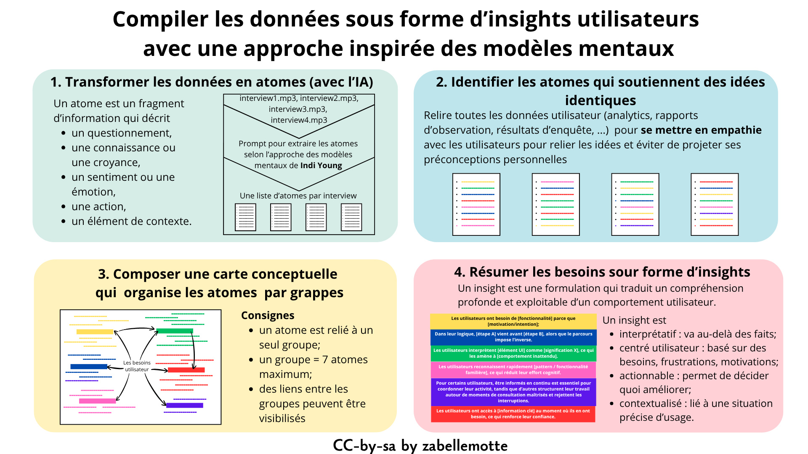
En résumé
Lors de la phase d'exploration, des interviews ont été menées pour permette de se rapprocher d'une bonne compréhension du besoin des utilisateurs. Il faut à présent compiler les données issues des interviews pour produire une synthèse exploitable avec les parties prenantes. Trier et regrouper des données n'est pas une tâche anodine puisque dans la manière de sélectionner et de relier les données, nous opérons des choix. L'enjeu essentiel dans l'exercice est d'éviter de projeter ses préconceptions et de travailler de manière neutre. L'analyse est réalisée en décomposant chaque source d'information sur les besoins utilisateurs en fragments d'information : les atomes. Les atomes sont ensuite rapprochés, reliés, regroupés en veillant à préserver la manière dont les utilisateurs ont exprimé leurs besoins. Ce travail d'analyse minutieux est finalement résumé sous la forme d'insights utilisateur qui incarnent les idées essentielles exprimées, dans un format adapté à une communication au demandeur.Transformer les données en atomes à l'aide de l'IA
L'exercice peut sembler lourd, mais la décomposition en atomes est une phase clé du processus qui peut être soutenue par l'IA.
Un atome est un fragment d'information utilisateur qui décrit un des éléments suivants :
Les interviews enregistrées peuvent facilement être transcrites et décomposées en atomes avec les outils d'IA générative. Les fichiers audio des interviews peuvent soumis à un outil d'IA générative et transformés en atomes avec le prompt suivant:
Voici le contexte de mon projet : {CONTEXTE} Je vais te donner les notes des interviews que j’ai réalisées ainsi que le guide d’entretien que j’ai utilisé. Je veux suivre la méthode d’analyse Mental Models de Indi Young. Dans un premier temps, tu vas transformer les phrases de mes notes en atomes, en respectant la formule de rédaction “verbe à l’infinitif + complément” Certains verbes sont interdits : “Considérer, Gérer, S’occuper de, Trouver, Avoir, Laisser, Planifier, Lire, Vouloir, Essayer de, Apprendre que”. Je veux le résultat sous la forme d’un tableau : première colonne les notes d’entretiens, deuxième colonne l’identifiant de l’interviewé et troisième colonne l’atome. Un même atome peut être réutilisé plusieurs fois dans une interview et entre les interviewés, il faut garder les atomes distincts pour garder le contexte de l’interviewé. Attention à ne pas perdre de l’information, il ne faut pas inférer ni deviner. Avant de répondre, pose-moi des questions pour comprendre mes attentes et demande-moi les informations nécessaires. Explique ton raisonnement étape par étape. Puis rédige le tableau.
Quand tout est OK (uniquement !), demandez : “Donne moi des tableaux avec uniquement les atomes. Autant de tableau que d'interviewés”.
Relier les atomes pour composer une carte conceptuelle qui résume les besoins (sans IA!)
La phase de recoupement ne peut pas (encore) être supportée par les IA génératives car celles-ci ont tendances à trop simplifier les idées, alors qu'on souhaite précisément rester fidèle à l'expression des utilisateurs. Une approche pas trop lourde pour réussir le regroupement des idées est de suivre les étapes suivantes :Les fans de Miro seront heureux d'exploiter la possibilité de copier leur atomes depuis un fichier tableur pour les coller dans Miro sous forme de post-its à trier et relier. Mais, pour ma part, je préfère faire ce travail d'analyse sur papier avec ma boîte de crayons de couleurs pour associer les idées proches.
Résumer les besoins sous forme d'insights
Pour communiquer vers le demandeur, chaque cluster peut être synthétiser sous la forme d'un insight, c'est-à-dire une formulation qui traduit un compréhension profonde et exploitable d’un comportement utilisateur, qui permet de prendre de meilleures décisions de conception.
Les caractéristiques d'un insight sont les suivantes :
Quelques exemples de formulation d'insights:
Gérer des points de vue différents
L'analyse des besoins peut révéler des points de vue différents sur certaines fonctionnalités. Comment formuler les insights dans ce cas ? L'idée est alors de traduire les différents points de vue dans l'insight en veillent à expliciter la motivation des différents points de vue.
Par exemple, si les attentes des utilisateurs par rapport aux notifications ne fait pas consensus, on veillera à l'exprimer sous une forme de ce genre:
“Pour certains utilisateurs, être informés en continu est essentiel pour coordonner leur activité,
tandis que d’autres structurent leur travail autour de moments de consultation maîtrisés et rejettent les interruptions.”
Ce type d'insight nous conduira à construire des personas ou experiences maps différents, comme décrit dans l'article Synthétiser l'expérience utilisateur avec des personas et l'experience map chronologie
La petite histoire
La méthode proposée s'inspire de la théorie des modèles mentaux de Indi Young décrite dans son livre Mental models et cette approche d'analyse s'inspire des méthodes d'analyse qualitative exploitées en psychologie cognitive ou en ethnographie.
Cet article et ses illustrations sont partagées sous licence Creative Commons-by-sa.
Synthétiser l'expérience utilisateur avec les personas et les cartes d'expérience chronologiques
En un coup d'oeil

En résumé
Les personas sont des archétypes utilisateurs créés à partir de données réelles recueillies pendant la phase d'exploration. Chaque persona représente une partie significative des personnes dans le monde réel et permet au concepteur de se concentrer sur un groupe de personnages gérables et mémorables, au lieu de se concentrer sur des milliers d'individus.
Pour moi qui ait un bagage en mathématiques, j'ai l'impression que la composition de personas s'apparente à déterminer les utilisateurs de base du système. Les autres utilisateurs peuvent être considérés comme des combinaisons de ces utilisateurs de base et, en concevant un système qui prend en compte les besoins des utilisateurs de base, on a la garantie de répondre aux besoins de tous les utilisateurs.
Les cartes d'expérience retracent le vécu d'un persona en contact avec un service ou un système de manière chronologique. A chaque étape, une carte d'expérience indique les actions réalisées, les émotions, les points de friction et d'amélioration possibles.
Construire des personas
Les personas sont exploitées en ux et en marketing mais le focus associé est différents puisque le persona ux représente l'utilisateur, alors que le persona marketing représente l'acheteur (qui n'est pas forcément utilisateur).
La composition des personas ux est menée en partant des proto-personas et en s'inspirant de l'exercice réalisé pour compiler les insights. Les caractéristiques différenciantes et les similarités aident à faire émerger les profils types d'utilisateurs.
Dans l'article Rédiger une fiche projet pour cadrer la demande , des proto-personas sont déjà définis dans la phase de planification. Ces proto-personas sont composés des éléments suivants:
Les insights sont dérivés au travers de la méthode décrites dans l'article Compiler les données sous forme d'insights utilisateurs avec une approche inspirée des modèles mentaux . Ils représentent une synthèse de l'expérience utilisateur.
La composition des personas repose sur l'analyse des caractéristiques différenciantes et des similarités entre utilisateurs. Plus précisément, les règles suivantes peuvent être appliquées pour composer les personas:
Rédiger une fiche persona
Les personas sont présentés sous la forme d'une fiche synthétique au format A4 avec les éléments suivants:
La fiche persona doit restituer les éléments intéressants relevés par les insights et les thématiques retenues doivent faire écho aux développements envisagés pour le projet.
Plusieurs outils en ligne permettent de réaliser des fiches persona et l'outil gratuit uxpressia.com est particulièrement adapté pour cet exercice car il propose un grand nombre de modèle de fiches et de rubriques thématiques.
Modèle de persona réalisé avec UXPressia :

Séquencer le parcours utilisateur avec les cartes d'expérience
Si les personas qui se dégagent vivent des expériences très différentes avec le système, il peut être pertinent d'aller jusqu'à décrire une carte d'expérience chronologique pour chaque persona. La carte d'expérience (ou user journey) retrace et décrit le vécu d'une expérience générique ou le parcours d'un utilisateur en contact avec un système.
La carte d'expérience vise à identifier les étapes de l'expérience utilisateur et pour chaque étape, elle décrit
Cela me semble particulièrement intéressant pour décomposer les workflows administratifs qui impliquent plusieurs types d'acteurs.
La carte d'expérience se concrétique par une fiche au format A4 composée d'une entête avec les éléments suivants: un rappel du nom et de l'objectif principal du persona et suivie d'un tableau chronologique des étapes en colonnes avec les éléments suivants en ligne (selon pertinence):
L'outil en ligne uxpressia.com propose des modèles très pratiques pour réaliser les cartes d'expérience et le visuel ci-dessous présent la structure type d'une carte d'expérience réalisée avec cet outil.
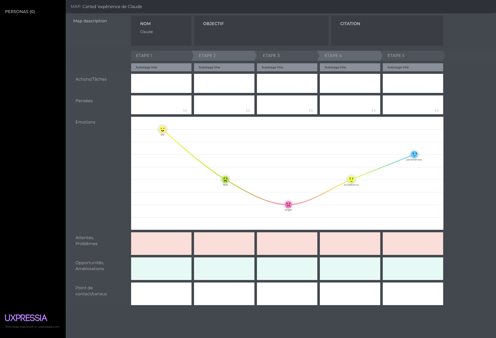
Exploiter les personas et/ou les cartes d'expérience tout au long du processus
Une fois réalisées, les fiches personas et cartes d'expérience doivent être présentées aux parties prenantes pour que toute l'équipe impliquée se les approprie afin de guider la suite du processus de conception : la génération d'idées, les scénarios d'évaluation et la communication.
La petite histoire
Les personas UX ont été popularisés dans les années 1990 par Alan Cooper, qui les a introduits comme outil de conception centré utilisateur pour mieux représenter les besoins, objectifs et comportements réels. Leur origine s’inscrit toutefois dans un croisement de disciplines comme la psychologie, l’ergonomie et les sciences sociales, qui cherchaient déjà à modéliser des profils types. À la différence des personas marketing, orientés segmentation et cible commerciale, les personas UX visent avant tout à guider la conception d’expériences utiles et utilisables.
Comme les personas, la carte d'expérience est issue d’un croisement entre UX, marketing et sciences sociales, mais se concentre davantage sur les étapes et l’expérience vécue dans le temps plutôt que sur un profil type.
Cet article et ses illustrations sont partagées sous licence Creative Commons-by-sa.
Générer des idées avec le brainstorming
En un coup d'oeil
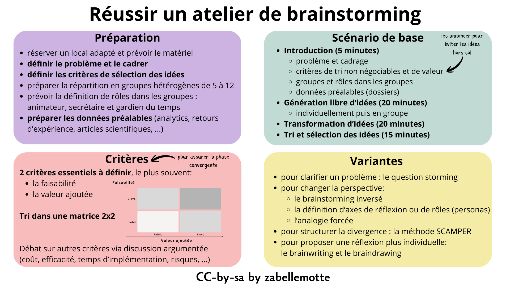
Le brainstorming, un processus en 2 phases
Dans tous les domaines, le brainstorming est pratiqué pour générer des idées, avec plus ou moins de succès. Pour réussir l'exercice, il faut intégrer le fait que l'animation d'une séance de brainstorming repose sur deux temps de travail:Le scénario de base d'un brainstorminig
Organiser un brainstorming exige tout d'abord une préparation:
Le programme d'une séance de brainstorming d'une heure est en général structuré comme suit:
Aujourd'hui, le brainstorming peut être soutenu par des outils électroniques qui permettent la génération d'idées à distance. Ces outils intègrent parfois des options de vote qui peuvent permettre de faciliter l'animation même en présence.
Une multitude de variantes pour la phase divergente
La phase divergente du brainstroming peut être soutenue par de nombreuses variantes présentés ci-dessous selon les axes d'action.
Tout d'abord, certaines méthodes sont plus axées sur le fait de redéfinir le problème:
Ensuite, certaines méthodes visent à changer la perspective sur le problème:
D'autres approches visent à structurer la divergence:
La priorité peut aussi être de limiter les interactions pour proposer une réflexion plus individuelle:
De nombres sites répertorient d'autres variantes, comme le site du Design Sprint Kit de Google.
Les techniques pour trier les idées
La phase convergente exige de faire émerger les idées réalistes. Il faut pour cela trier les idées selon certains critères qui peuvent être:
Au delà du vote pour les idées préférées, il est possible de trier les idées dans une matrice 2x2 structurée sur base des 2 critères de sélection essentiels. Les critères utilisés couramment sont la faisabilité et la valeur ajoutée. L'idée sera alors de retenir les idées qui correspondent à une haute faisabilite et à une grande valeur ajoutée.

Les tri multi-critères sont aussi possibles mais moins évidents à mener. Le plus sage est sans doute de faire émerger les idées retenues sur base de 2 critères essentiels puis d'opérer une sélection dans les idées restantes sur base d'une discussion argumentée.
Les limites du brainstorming
La méthode a montré ses limites dans les situations suivantes :La petite histoire
Le brainstorming est formalisé dans les années 1940 par Alex F. Osborn, publicitaire américain et cofondateur de l’agence BBDO. Dans un contexte de production publicitaire intensive, Osborn constate que les réunions classiques brident la génération d’idées par l’autocensure et la peur du jugement. Il propose alors une méthode collective visant à produire un grand nombre d’idées en suspendant temporairement l’évaluation critique, méthode qu’il popularise dans Applied Imagination (1953).
Cet article et ses illustrations sont partagées sous licence Creative Commons-by-sa.
Générer des idées avec le design studio
mixer les idées du support de cours et du bouquin (approches différentes)
en classe nous avons joué la variante guerilla "Design consequenses" du design studio
app très utile avec des techniques créatives : https://liberatingstructures.app/en/
Envisager l'évolution d'un système avec la méthode ERRC
En un coup d'oeil
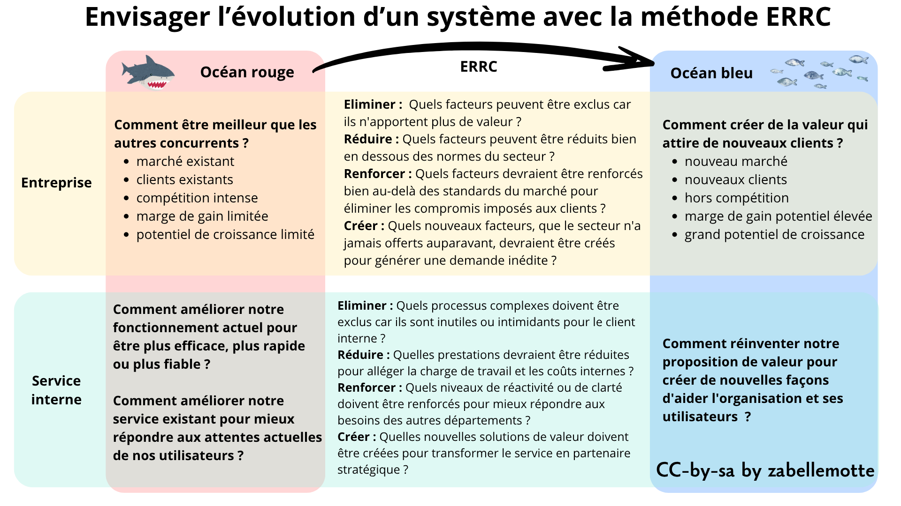
Blue Ocean Strategy: From Therory to Practice
Cet article dresse un résumé de la référence suivante décrivant la stratégie de l'océan bleu pour soutenir l'évolution d'un produit ou d'un service :
Chan Kim,W. (2025). Blue Ocean Stragegy: From Theory to Practice. California Review Management, Vol 47, N°3, 105–121.
https://cmr.berkeley.edu/2005/05/47-3-blue-ocean-strategy-from-theory-to-practice/
Ce résumé a été composé avec l'aide de Notebook LM.
Distinction entre Océans Rouges et Océans Bleus
Les océans rouges représentent les industries existantes où les frontières sont définies et les règles de concurrence connues. Dans cet espace, les entreprises tentent de surpasser leurs rivaux pour s'accaparer une part du marché existant, ce qui mène souvent à une baisse des profits et à une commoditisation des produits. À l'inverse, les océans bleus désignent des espaces de marché inconnus, créés par le développement d'une demande nouvelle, où la concurrence devient hors de propos car les règles du jeu restent à établir.
Le concept d'Innovation de Valeur
L'approche repose sur une vue reconstructionniste de la stratégie, s'opposant à la vision traditionnelle où les structures de marché sont considérées comme figées. Au lieu de choisir entre la différenciation et le bas coût, la stratégie océan bleu vise l'innovation de valeur. Il s'agit de briser le compromis valeur/coût en augmentant simultanément la valeur pour l'acheteur et en réduisant les coûts pour l'entreprise grâce à un alignement de tout le système d'activités.
L'outil de diagnostic : le Canevas Stratégique
L'outil central de diagnostic est le canevas stratégique, qui permet de visualiser le profil stratégique d'une industrie en identifiant les facteurs sur lesquels repose la concurrence.
Le canevas stratégique est à la fois un outil de diagnostic et un cadre d'action essentiel pour élaborer une stratégie océan bleu. Pour le réaliser, on utilise un graphique où l'axe horizontal répertorie les facteurs clés sur lesquels l'industrie se livre concurrence et investit (produit, service, livraison), tandis que l'axe vertical mesure le niveau d'offre que les acheteurs reçoivent pour chacun de ces facteurs. En reliant ces points, on obtient la courbe de valeur, une représentation graphique de la performance relative d'une entreprise par rapport à ses concurrents. La réalisation concrète commence par la cartographie de l'état actuel du marché pour comprendre où les concurrents investissent, ce qui révèle souvent une convergence des profils stratégiques dans un « océan rouge ». Pour transformer ce diagnostic en action, l'entreprise doit ensuite détourner son regard des concurrents pour se concentrer sur les alternatives et les non-clients, ce qui permet de redéfinir les éléments de valeur.
En analysant les courbes de valeur, une entreprise peut constater si elle est enlisée dans un océan rouge ou si elle parvient à s'en détacher. L'objectif est de créer une courbe de valeur qui possède trois caractéristiques essentielles : la focale, la divergence et un slogan percutant.
L'intérêt de l'analyse ERRC
L'analyse ERRC (Eliminer, Réduire, Renforcer, Créer), aussi appelée le "cadre des quatre actions", est l'outil fondamental pour briser le compromis entre la différenciation et le bas coût. Elle permet de reconstruire les éléments de valeur pour l'acheteur en agissant sur quatre leviers stratégiques :
Cette grille est un outil d'action qui force l'entreprise non seulement à se poser les quatre questions, mais surtout à agir simultanément sur chacun des axes pour dessiner une nouvelle courbe de valeur.
En remplissant cette grille, l'entreprise obtient deux bénéfices immédiats : les actions d'exclusion et de réduction font chuter sa structure de coûts, tandis que les actions de renforcement et de création augmentent la valeur pour l'acheteur. C'est cet alignement global qui permet d'atteindre l'innovation de valeur et de sortir durablement de l'océan rouge.
Impact sur la croissance et la rentabilité
L'intérêt majeur pour l'entreprise est la croissance rentable. Les recherches des auteurs montrent que si les lancements dans les océans rouges représentent 86 % des initiatives, ils ne génèrent que 39 % des profits. En revanche, les 14 % d'investissements consacrés aux océans bleus génèrent 61 % des profits totaux. En se concentrant sur les non-clients et les alternatives plutôt que sur les concurrents directs, l'entreprise ouvre un espace de marché vierge qui garantit une performance supérieure.
L'intérêt de la méthode pour un client interne
Sortir de l'Océan Rouge interne
Travailler pour un client interne revient souvent à naviguer dans un océan rouge interne où le département est perçu comme un simple centre de coûts comparé à des standards rigides. La méthode permet de redéfinir cette relation en cessant de se comparer aux processus habituels pour créer une valeur unique. L'enjeu est de transformer une fonction support en un partenaire stratégique dont l'apport est devenu "hors concurrence" vis-à-vis d'une externalisation.
Passer de l'Inside-Out à l'Outside-In
La source souligne que le langage utilisé (ex: jargon technique vs termes compréhensibles par l'acheteur) révèle si une vision est "inside-out" (opérationnelle) ou "outside-in" (orientée demande). Pour un client interne, cela signifie traduire les compétences techniques en bénéfices clairs pour les autres départements. En adoptant cette perspective, on cesse de livrer des services dont le client n'a pas besoin pour se concentrer sur son utilité réelle.
Simplification via l'analyse ERRC interne
L'analyse ERRC devient un outil de simplification administrative. Plus précisément, l'analyse ERRC peut se décliner comme suit dans le contexte d'une évolution d'un service interne:
Alignement du système pour l'efficacité interne
L'innovation de valeur appliquée en interne permet d'aligner l'utilité, le "prix" (coût interne) et les activités. En réduisant la complexité des processus, le département interne peut offrir une meilleure expérience au client tout en diminuant sa charge de travail. Cet alignement global rend la solution interne bien plus attractive et durable, évitant les investissements inutiles dans des facteurs qui n'ajoutent qu'une valeur incrémentale.
Pérennité et influence stratégique
Enfin, l'approche permet de définir une mission interne dotée de focale et de divergence. Une stratégie interne qui se contente de copier n'a aucune raison de se démarquer et reste vulnérable aux coupes budgétaires. En créant cet "océan bleu interne" avec un slogan clair et une offre différenciée, le département garantit son influence et sa pérennité au sein de l'organisation en devenant indispensable à la réussite globale de l'entreprise.
Cet article et ses illustrations sont partagées sous licence Creative Commons-by-sa.
Prioriser les besoins avec la méthode MoSCoW
En un coup d'oeil

En résumé
La méthode MoSCoW propose de classifier les besoins selon 4 catégories:Cette méthode s'applique particulièrement bien dans le cadre de la refonte d'un produit ou d'un processus car les utilisateurs ont déjà un usage du produit et sont en mesure d'évaluer le bénéfice de chaque option.
Comment l'appliquer ?
L'analyse des priorités peut être réalisée lors d'une réunion réunissant les principaux acteurs du projet.Les étapes pour appliquer cette méthode sont les suivantes :
Exemple concret
Pour la refonte d'un site de covoiturage, les fonctionnalités qui doivent être intégrées peuvent être priorisées avec la méthode MoSCoW comme suit :

L'ancien service repose sur une série de fonctionnalités indispensables, comme le fait de pouvoir créer un compte, de pouvoir définir ou rechercher des trajets. Il est profitable de mettre en place un système de notifications et d'évaluation des utilisateurs. En bonus, le site pourrait intégrer des suggestions intelligentes. Mais, il n'est sans doute pas utile de prévoir des options du genre "voyager avec son chien" ou "covoiturage thématique cinéma".
Variantes
Lorsqu'il faut mettre d'accord plusieurs acteurs, la méthode MoSCoW peut être utilisée pour établir les priorités de chacun puis établir le niveau de priorité moyen via des moyennes. Si les acteurs n'ont pas le même poids dans le projet (parce qu'ils n'ont pas le même usage de l'outil), les moyennes peuvent être pondérées par un facteur de poids lié à chaque acteur.
Limite
Les utilisateurs peuvent avoir tendance à indiquer que tous leurs besoins sont des must-have. Dans le cas de la refonte d'un produit, les must-have peuvent être cadrés sur base des options dont ils disposent déjà. C'est la raison pour laquelle cette méthode est plutôt conseillée pour ce cas d'usage.
La petite histoire
La méthode MoSCoW a été créée par Dai Clegg au milieu des années 1990. Elle a été développée dans le cadre du projet DSDM (Dynamic Systems Development Method), une méthode agile britannique antérieure à Scrum. DSDM est un des premiers cadres de développement agile formalisés (1994), et la méthode MoSCoW y a été intégrée pour aider à hiérarchiser les exigences.
Cet article et ses illustrations sont partagées sous licence Creative Commons-by-sa.
Prioriser les préférences avec le vote pondéré
En un coup d'oeil

En résumé
La méthode du vote pondéré est souvent appliquée pour dégager des priorités, mais il est important de souligner que la pondération peut être envisagée de plusieurs façons qui sont combinables:Cette méthode s'applique particulièrement bien dans le cadre de la conception d'un nouveau produit car les utilisateurs n'ont pas d'idée à priori de leurs besoins. Discuter de la méthode de pondération adoptée en amont au projet permet que les différents acteurs acceptent l'issue du processus comme un résultat qui cadre bien avec les besoins.
Comment l'appliquer ?
Le choix des pondérations doit être présenté et discuté lors d'une réunion réunissant les principaux acteurs du projet.Les étapes pour appliquer cette méthode sont les suivantes :
Exemple concret
Dans une école, une analyse est menée pour acheter des poubelles de tri sélectif pour équiper tous les locaux. Quatre produits équivalent sont proposés à l'essai dans le réfectoire pendant un mois et l'avis des différents acteurs est analysé pour trancher. L'équipe de direction souhaite qu'on choississe un seul produit pour bénéficier d'un coût unitaire réduit car il faut équiper 16 classes, le réfectoire et la cour de récréation,. Les 16 enseignantes et enseignants sont consultés, tout comme les 8 personnes qui surveillent le temps de midi, et l'équipe de nettoyage. La personne responsable du projet interroge le personnel de nettoyage pour savoir à quelle fréquence les poubelles doivent être vidées et son analyse révèle les données suivantes :
Pour opérer le choix final, il n'est pas réaliste d'interroger tous les élèves mais il est proposé que chaque membre de l'équipe éducative ou de l'équipe de nettoyage remette une note pour les 3 critères ci-dessus. Comme les élèves sont plus nombreux, le poids du critère lié à la facilité d'utilisation par les élèves sera triplé. Et puisque les enseignants de primaire utilisent deux fois moins souvent les poubelles que le reste du personnel, leur évaluation sera aussi pondérée par un facteur 0.5.
Cette approche, simple à mettre en place, permet que le choix soit autant que possible relié à l'utilisation réelle du produit.
Variantes
Dans les cas où le vote vise à définir des priorités, il est aussi possible de distribuer aux acteurs un nombre de poinst défini (éventuellement lié à leur poids) à répartir à leur guise entre différentes options.
Limites
La méthode est à éviter si un des acteurs a clairement un poids supérieur aux autres ou si le choix est évident.
La petite histoire
Les méthodes de vote pondéré s’inscrivent dans plusieurs traditions complémentaires. Elles trouvent leur origine au XVIIIᵉ siècle dans la théorie du choix social avec Jean-Charles de Borda et Nicolas de Condorcet, qui ont formalisé des systèmes de classement et de comparaison des options. Au XXᵉ siècle, l’aide multicritère à la décision structure la pondération des critères, notamment avec l’AHP de Thomas L. Saaty et les travaux de Bernard Roy. Enfin, la pondération des acteurs relève des théories du management participatif, influencées par des auteurs comme Rensis Likert.
Cet article et ses illustrations sont partagées sous licence Creative Commons-by-sa.
4. Génération
Cet article et ses illustrations sont partagées sous licence Creative Commons-by-sa.
Structurer l'information avec le tri de cartes
En un coup d'oeil
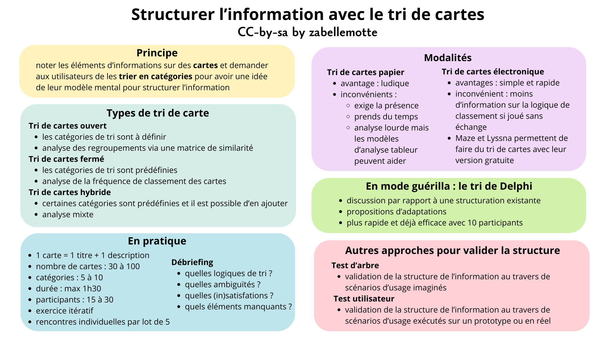
En résumé
Le tri de carte est une méthode de conception qui permet d'organiser les éléments d'un système de manière à correspondre aux modèles mentaux des utilisateurs. Cette méthode permet de définir la navigation dans une application ou un site web, d'organiser les produits sur un site d'e-commerce, d'organiser les rayons dans un magasin, ...
En pratique, l'utilisateur est amené à trier des éléments d'information rédigés sur des cartes. Les catégories peuvent être libres ou imposées, selon la maturité de la réflexion. L'exercice est réalisé individuellement avec plusieurs personnes; il donne lieu à une analyse et à des ajustements, puis est itéré jusqu'à obtenir un résultat cohérent. Les cartes peuvent être matérialisées par des post-its réels ou virtuels et il existe des applications dédicacées qui facilitent l'analyse des résultats.
L'importance de l'architecture de l'information
La navigation classique reste un élément important pour la recherche d'information car elle impacte aussi l'indexation des pages dans les moteurs de recherche. En 2009, une étude du NNGroup a montré que 10% des problèmes d'utilisabilité d'un site web étaient liés à l'architecture de l'information, en ce compris le référencement dans les moteurs de recherche traditionnels et dans les outils d'IA générative.
Pour les sites existants, certains indicateurs analytics peuvent indiquer des problèmes dans l'architecture de l'information : des pages importantes peu visitées, un taux de conversion faible dans un workflow important, un taux de rebond élevé ou un mauvais référencement de pages importantes. Les interviews ou tests utilisateurs peuvent aussi remonter des difficultés pour trouver de l'information sur le site.
Pour les nouveaux sites, l'exercice est indispensable pour concevoir une architecture de l'information adaptée aux utilisateurs ciblés.
Les types de tri de carte
Le tri de carte se décline en 3 types :
La structuration d'un système peut aussi être éprouvée pas deux autres approches plus en aval du processus de conception:
Comment l'appliquer ?
Les infos pratiques pour préparer un tri de cartes:
Les cartes doivent représenter des éléments du site situé à un même niveau de granularité pour que les choix soient cohérents.
Le tri de cartes peut-être réalisé selon une modalité papier ou selon une modalité électronique. Les deux approches ont des avantages et inconvénients:
Notez que les outils comme Maze et Lyssna proposent soutien à la démarche UX et permettent notamment de piloter des tris de cartes électroniques (mais aussi des enquêtes, des test de prototypes, ...). Leur version gratuite permet de piloter un projet par mois et 3 activités participatives (testés en mars 2026).
Un atelier de tri de carte se clôture par un débriefing où quelques questions sont posées au participant pour nourrir la réflexion sur l'évolution des catégories:
Les résultats d'un tri de cartes peuvent être analysés selon différentes approches, selon l'objectif visé:
Exemple concret
Prochainement ...La variante du tri de Delphi
Le tri de Delphi est une approche guérilla qui permet de réduire le temps de passation. Les partipants reçoivent les cartes déjà triées et sont invités à commenter la structure proposée et à la modifier si souhaité. Les études ont montré que cette approche permettait d'aboutir à une structure cohérente avec seulement 8 à 10 participants. Cette approche qui exige moins de participants réduit aussi le temps de passation et simplifie l'analyse.
La petite histoire
Le tri de cartes s’est développé dans les années 1990 dans le champ de l’ergonomie et de l’architecture de l’information, parallèlement à l’essor du web et des démarches de conception centrée utilisateur. La méthode a été notamment formalisée et diffusée par des chercheurs comme William Tullis. Elle s’inscrit dans un mouvement plus large influencé par les travaux de Don Norman, qui ont contribué à mettre en avant l’importance des modèles mentaux des utilisateurs dans la conception des systèmes interactifs.
Cet article et ses illustrations sont partagées sous licence Creative Commons-by-sa.
S'inspirer des principes de design pour la conception
En un coup d'oeil

En résumé
En temps UI designer, il est essentiel de s'inspirer des principes de design pour concervoir les interfaces. Mais le concept se décline en de nombreuses variantes, comme le design visuel, le design intuitif, le design émotionnel, le design persuasif, le design du texte, le design éthique, ... et il y a presque autant de coloration de ces règles que d'école de design.
Comment proposer une vue synthétique de cet éventail de références ? Je propose de vous partager ma synthèse pratique sur ces questions et mes références. Mon idée est de me focaliser sur les étapes de la conception, celles que l'UI designer parcourt en concevant les interfaces et de vous livrer les points d'attention qui me semblent importants. En bref, cet article est un peu le Practical UI principles by Zabelle Motte. C'est un article que je ne manquerai pas de faire évoluer selon ma pratique.
Envisager l'expérience utilisateur comme multi-modale
Aujourd'hui, le designer doit envisager le fait que l'utilisateur peut utiliser plusieurs devices pour naviguer sur le web et qu'il peut passer d'un device à l'autre selon son envie. L'utilisateur peut par exemple surfer sur un site d'e-commerce sur smartphone et finaliser son achat sur desktop après avoir comparé les prix. Dans ce cas, il espère ne pas perdre son panier d'achat lors du changement de device.
Réaliser des analytics relève d'ailleurs d'un véritable exploit technique en Union Européenne puisque le tracking des données doit respecter le règlement européen sur la protection des données (RGPD).
Selon le projet, la conception d'un site multi-modal peut s'orienter vers un site desktop et une application mobile dédiée, un site responsive dont la présentation s'adapte selon la taille de l'écran ou un site adaptive dont le contenu s'adapte selon la taille de l'écran. Dans la mesure où la majorité du trafic web mondial se déroule sur mobile, la tendance actuelle est de penser mobile first et de designer des écrans pour mobile en priorité. La conception pour mobile impose d'autres contraintes importantes à prendre en compte :
Finalement, le design pour mobile exige de prendre en compte d'autres enjeux d'intégration comme :
Choisir les propriétés du texte : polices, tailles, ...
Si le projet n'impose par une charte graphique avec un police de caractère définie, il faut privilégier une police sans empattement, c'est à dire une police où les lettres sont composée de lignes d'épaisseur constante, type sans-sérif. Les polices avec empattement sont plutôt conseillées pour une lecture sur papier. L'idéal est de compter sur une ou deux polices pour un site web, avec une éventuelle police dédicacée aux éléments importants (titres, boutons d'action, ...). Le choix d'une police n'est pas anodin et peut être utilisé pour traduire certaines caractéristiques de la marque ou de l'entreprise. Voyez des tutos sur la typographie pour mieux cerner ce point si souhaité, demandez conseil à votre outil d'IA préféré ou faites un choix prudent et privilégiez une police passe-partout comme Open Sans.
Dans l'utilisation du texte pour la conception, ayez en tête les principes suivants pour définir les propriétés du texte :
Choisir les couleurs
Comment choisir un jeu de couleur pour un site s'il n'y a pas de charte graphique imposée ? L'exercice n'est pas évident de prime abord mais voici les éléments qui me servent de guide:
Aucune information ne doit être véhiculée uniquement via les couleurs car les utilisateurs souffrant de daltonisme (8% des hommes et 0.5% des femmes en Europe) ont une perception altérée des couleurs. Sur le web, vous trouverez des jeux couleurs accessibles pour les daltoniens mais le plus simple est sans doute de tester votre site avec l'extension de navigateur Let's Get Color Blind pour Chrome ou Firefox pour visualiser un rendu pour les differents types de daltonisme.
Choisir les icônes
Cette section le semble le meilleur moment pour citer la loi de Jakob.
| Loi de Jakob |
| Les utilisateurs passent la plupart de leur temps sur d'autres sites. Cela signifie qu'ils préfèrent que votre site fonctionne de la même manière que tous les autres sites qu'ils connaissent déjà. |
Les outils de prototypage actuels intègrent des librairies d'icônes qui vous permettront de facilement trouver des visuels intuitifs et conventionnels pour illustrer les éléments clés de vos interfaces. Par ailleurs, toute icône doit être associée à unlibellé explicite, de préférence affiché directement et pas seulement comme info-bulle.
Si vous devez designer une icône spécifique, questionnez un moteur de recherche en mode recherche d'image et/ou un outil d'IA générative. La psychologie des couleurs, évoquée dans un point ci-dessus pourra aussi vous guider. Si vous ne maitrisez pas d'outil de dessin vectoriel, commencez avec Inskscape qui est open source et gratuit, et vous pourrez le découvrir avec la vidéo "Inkscape Beginner Tutorial | Icon Drawing with Basic Shapes" de la chaîne Logs By Nick. Et n'hésitez pas à tester avec vos utilisateurs pour vérifier que le schème mental utilisé leur parle ...
Définir la navigation
L'article Structurer l'information avec le tri de cartes nous invite à nous inspirer des modèles mentaux des utilisateurs pour structurer l'information. Mais plusieurs principes essentiels doivent être pris en compte dans la conception des éléments de navigation.
| Paradoxe du choix | ||||
| Un trop grand nombre d'options nuit à la capacité de prise de décision des utilisateurs. Lorsque la comparaison est nécessaire, nous pouvons éviter la surcharge des choix en permettant la comparaison côte à côte d'éléments connexes et d'options nécessitant une décision. |
| Loi de Hick |
| Le temps nécessaire pour prendre une décision augmente avec le nombre et la complexité des choix. Il faut veiller à décomposer les tâches complexes en étapes plus petites afin de réduire la charge cognitive. |
| Loi de Miller |
| Une personne moyenne ne peut conserver que 7 (plus ou moins 2) éléments dans sa mémoire de travail. N'utilisez pas le "chiffre magique sept" pour justifier des limitations inutiles en matière de conception. |
Pour limiter la charge mentale nécessaire pour trouver de l'information sur un site web, il est donc nécessaire de mettre en place des mécanismes qui aident l'utilisateur à savoir où il est et de lui présenter des options de choix restreintes:
Il me semble aussi intéressant de relever le fait que ces éléments de navigation sont essentiels pour les seniors dont les capacités cognitives déclinent. Le moteur de recherche devient leur principal outil de recherche d'information car la navigation dans les menus devient trop complexe.
Un dernier élément clé de l'expérience utilisateur par rapport à la navigation est la réactivité. C'est précisément ce que sous-tend le seuil de Doherty.
| Seuil de Doherty |
| La productivité explose lorsque l’utilisateur et la machine interagissent à une vitesse suffisante (< 400 ms) pour qu’aucun n’attende l’autre. Les barres de progression contribuent à rendre les temps d'attente plus agréables, quelle que soit leur précision. |
Cette réactivité mérite vraiment d'être testée lors de la navigation sur le site et lors de recherches via le moteur de recherche. L'extension Page Load Time pour Chrome et Frefox vous propose un rapport très simple avec le temps de chargement de pages sur lesquelles vous naviguez.
Designer les boutons d'action
Pour commencer cette section, il me semble opportun de partager une analyse de Peter Pirolli qui m'avait interpelée il y a quelques années: lorsque nous recherchons de l'information sur le web, nour reproduisons notre comportement ancestrale de chasseur. Pour bien rendre les idées liées, j'ai refait un peu de veille sur la question avec Consensus et je lui ai demandé de résumer les points essentiels sous forme d'un article au format de ceux de the law of ux.
| Loi du chasseur d'information |
|
Lorsque les utilisateurs recherchent de l'information, ils reproduisent leur comportement ancestral de chasseur :
|
Notre utilisateur "chasseur" est donc en situation d'urgence et nous devons lui donner des signaux clairs sur les "proies informationnelles" qu'il est susceptible de trouver. Ses yeux parcourent l'écran rapidement, à l'affut des indices pour trouver ce qu'il cherche. Il scanne les éléments interactifs qui sont susceptibles de lui donner des indications. Et notre design doit faire en sorte que les boutons d'action soient bien visibles et indiquent clairement l'information qu'ils permettent de trouver. Tous les principes à prendre en compte pour designer des boutons d'action qui gardent le chasseur en éveil sont résumés ci-dessous:
La loi de Fitts nous rappelle que la taille d'un bouton est importante mais sa position sur l'écran est aussi déterminante.
| Loi de Fitts |
| Le temps nécessaire pour atteindre une cible est dépendant de la distance et de la taille de cette cible. Sur des interfaces tactiles, les objets cibles doivent être suffisement grands, suffisemment espacés et placés dans des zones de confort pour l'utilisateur. |
Les boutons d'action essentiels doivent donc être situés dans la partie le plus accessible de l'écran, sans nécessiter de scroll. Et dans un contexte de navigation multi-modale, c'est un beau défi de réussir à placer le bouton dans une zone facilement accessible à la fois sur desktop et sur mobile !
Soigner la présentation des liens
Lorsque le chasseur d'information scanne une page web, ses yeux s'arrêtent sur les boutons d'actions mais aussi sur les liens au sein d'une page. Pour que les liens soient des proies intéressantes, les recommandations suivantes sont à prendre en compte pour définir leur libellé et leur mise en forme:
Designer la page d'accueil
Notre chasseur d'information arrive sur notre site et nous avons 3 secondes pour le convaincre que l'information qu'il cherche s'y trouve. Tout doit être soigné sur ce premier écran ! L'essentiel doit être dit avant de devoir scoller:
Est ce que le fenêtre pop-up pour s'abonner à la newsletter est une bonne idée pour la page d'accueil ? Le processus est très intrusif et peut être ignoré par les utilisateurs. Si cette newsletter est importante, il est peut-être préférable que l'invitation soit intégrée à la page d'accueil.
Désigner un écran avec une liste d'éléments
Certains écrans sont construits pour présenter une série d'éléments qui peuvent être une liste de résumés d'articles de blogs, une liste de produits, une liste de dossiers administratifs, une liste de résultats de recherche, ... Rappelons tout d'abord que les utilisateurs ont tendance à parcourir ce type d'écran avec un pattern en Z. Arrêtons-nous aussi sur les principes qui ciblent précisément la manière d'agencer une liste d'éléments car ils sont nombreux.
Les premiers principes à avoir en tête sont les principes de la Gestalt, ou principes de la psychologie de la forme. Ces principes présentent différentes déclinaisons mais le site The laws of UX les synthétise au travers des 3 principes suivants qui métitent d'être pris en compte pour présenter une liste d'éléments:
| Loi de proximité | ||||
| Les objets qui sont proches les uns des autres ont tendance à être percus comme des groupes. La proximité aide les utilisateurs à comprendre et à organiser l'information plus rapidement et plus efficacement. |
| Loi de similarité |
| Les éléments qui sont visuellement similaires seront perçus comme étant liés. La couleur, la forme et la taille, l'orientation et le mouvement peuvent indiquer que les éléments appartiennent au même groupe et partagent probablement une signification ou une fonctionnalité commune. |
| Loi de la région commune |
| La région commune crée une structure claire et aide les utilisateurs à comprendre rapidement et efficacement la relation entre les éléments et les sections. L'ajout d'une bordure ou d'un arrière-plan autour d'un groupe d'éléments est un moyen facile de créer une région commune. |
Pour prendre en compte ces 3 principes, la présentation d'une liste d'éléments doit suivre la présentation suivante:
Le design de liste d'éléments prendra aussi en compte les lois liées à la gestion des choix (déjà abordées dans la partie sur la navigation) :
| Paradoxe du choix | ||||
| Un trop grand nombre d'options nuit à la capacité de prise de décision des utilisateurs. Lorsque la comparaison est nécessaire, nous pouvons éviter la surcharge des choix en permettant la comparaison côte à côte d'éléments connexes et d'options nécessitant une décision. |
| Loi de Hick |
| Le temps nécessaire pour prendre une décision augmente avec le nombre et la complexité des choix. Il faut veiller à décomposer les tâches complexes en étapes plus petites afin de réduire la charge cognitive. |
| Loi de Miller |
| Une personne moyenne ne peut conserver que 7 (plus ou moins 2) éléments dans sa mémoire de travail. N'utilisez pas le "chiffre magique sept" pour justifier des limitations inutiles en matière de conception. |
Par rapport à la présentation d'une liste d'éléments, ces principes nous indiquent l'importance de proposer des filtres de recherche pertinents pour limiter la longueur de la liste que l'utilisateur doit analyser et être au plus proche de son besoin. La possibilité de comparaison des éléments peut aussi faciliter le travail d'analyse de l'utilisateur.
Plusieurs principes issus du design persuasif peuvent aussi guider la présentation d'une liste d'éléments:
| Effet de primauté | ||||
| Les premiers éléments d'une série sont mieux mémorisés. |
| Effet de position centrale Effet de leurre |
| Lorsque des éléments sont alignés, l'élément central est préféré. Cet effet peut être renforcé par l'introduction d'un élément volontairement moins attractif pour stimuler l'intérêt pour l'option centrale. |
| Effet de récence |
| Les derniers éléments d'une série sont mieux mémorisés. |
| Effet d'immédiateté | ||||
| L'utilisateur a tendance à favoriser la récompense la plus rapide malgré une valeur moindre. |
| Effet de disponibilité |
| La mise en avant de certains contenus (comme les plus consultés) empêche l'utilisateurd'envisager une autre option que celle proposée. |
| Effet de rareté |
| Les utilisateurs ont tendance à donner plus de valeur à un produit rare qu'à un produit disponible en abondance. |
| Effet de choix par défaut | ||||
| L'utilisateur a tendance à privilégier le choix qui exige le moins d'effort. |
| Effet d'avoir / Effet d'utiliser |
| L'utilisateur a tendance à préférer les poiduits contenant de multiples fonctionnalités, qu'importe leur utilité ou nécessité. |
| Effet Van Restorff |
| L'utilisateur mémorise mieux un élément qui se distingue des autres. |
Ces principes nous indiquent aussi que les listes d'éléments doivent aussi proposer:
Pour les sites de vente en ligne qui présentent une liste de produits, les mécanismes suivants peuvent contribuer à stimuler les ventes (mais il faut veiller à ne pas sombrer dans une logique de dark pattern et éviter de manipuler artificiellement ces éléments):
Designer les formulaires
Il me semble intéressant de rappeler que les principes liés à la présentation de listes d'éléments entrent en considération dans la présentation des formulaires. Plus précisément, les principes suivant sont essentiels lors de la mise en page des formulaires:
| Loi de proximité | ||||
| Les objets qui sont proches les uns des autres ont tendance à être percus comme des groupes. La proximité aide les utilisateurs à comprendre et à organiser l'information plus rapidement et plus efficacement. |
| Loi de la région commune |
| La région commune crée une structure claire et aide les utilisateurs à comprendre rapidement et efficacement la relation entre les éléments et les sections. L'ajout d'une bordure ou d'un arrière-plan autour d'un groupe d'éléments est un moyen facile de créer une région commune. |
| Loi de Miller |
| Une personne moyenne ne peut conserver que 7 (plus ou moins 2) éléments dans sa mémoire de travail. N'utilisez pas le "chiffre magique sept" pour justifier des limitations inutiles en matière de conception. |
Concrètement, lors de la mise en page des formulaires, on veillera à respecter les recommandations suivantes:
Stimuler la réassurance
La réassurance désigne l’ensemble des éléments qui rassurent l’utilisateur à chaque étape de son parcours, afin de réduire ses doutes, ses peurs ou ses hésitations. Le leviers de la réassuance sont les suivants :
Rédiger du texte pour le web
La rédaction de texte pour le web exige tout d'abord de définire une ligne éditoriale qui définit le cadre stratégique de production : la thématique, l'angle d'approche, la cible, les valeurs. Ensuite, la charte éditoriale est un document plus opérationnel qui définit le ton et le style rédactionnel, les formats de contenus, les règles de rédaction, et le processus éditorial.
La rédaction de texte pour le web doit se centrer sur des contenus courts et structurés de manière visuelle (images, listes, ...). Les principes suivants d'UX writing doivent être pris en compte lors de la rédaction:
Une belle référence qui résume tout l'intérêt de l'écriture inclusive sur base de références scientifiques : la vidéo de Scilabus sur l'écriture inclusive.
Les réféfences qui m'inspirent
Cet article s'inspire des références générales exploitées pour tous les articles de ce site et s'appuie aussi sur les références suivantes:
Cet article et ses illustrations sont partagées sous licence Creative Commons-by-sa.
Construire un prototype pour éprouver la conception
En un coup d'oeil

En résumé
Cette section présente les différents types de prototypes et décrit comment les exploiter dans un projet. Les prototypes basse fidélité sont à utiliser au début du projet pout produire une première vue sur le produit, la partager et la faire évoluer facilement. Lorsque la vision se stabilise, les prototypes haute fidélité sont alors envisagés pour cadrer les spécifications du produit fini. Les outils d'IA permettent aujourd'hui de construire beaucoup plus rapidement des prototypes haute fidélité et vont révolutionner les approches pour prototyper. Cet article dresse un bilan des outils populaires en mai 2026 et a été produit à l'aide de ChatGPT.
Balises pour le prototypage
Voici les éléments à prendre en compte pour choisir le bon format de prototype:
Le prototypage exige aussi de clarifier le workflow dans l'application en créant un diagramme qui part du point d'entrée et qui montre les différents embranchements possibles dans le parcours utilisateur (couvrir les cas d'erreur). Sur base de ce workflow, il est conseillé de dériver différents scenarii qui décrivent un parcours utilisateur au sein d'un contexte défini et sur base d'un objectif précis. Ces scénarii seront aussi une base intéressante pour tester l'application.
Réaliser un zoning
Le premier niveau de prototypage est le zoning, qui vise à réaliser une schématisation spatiale de l'interface. Les zonings sont réalisés sur un tableau blanc, avec des post-its ou du papier et présentent la structure générale et l'ordre des éléments.
Voici un exemple de zoning que j'ai réalisé au format papier pour un projet qui visait la présentation d'un rapport sur les erreurs des étudiants lors de la rédaction de textes en anglais. Les acronymes WFO, VOC, GRAM, SYNT, ... définissent les différents types d'erreurs : Word form, Vocabulary, Grammar, Syntax, ...

Réaliser une maquette statique
Le second niveau de prototypage est la maquette statique, qui peut avoir un niveau de fidélité plus ou moins élevé. La maquette rend plus fidèlement la hiérarchie visuelle et vise une description exhausive des différents écrans. Elle peut encore avoir un format papier mais le plus souvent, elle est réalisée avec une logiciel dédié comme draw.io ou Miro.
Voici un exemple de maquette réalisée avec draw.io pour le rapport sur les erreurs étudiantes en anglais (même écran que pour l'exemple lié au zoning):

Les maquettes statiques peuvent être rendues faiblement interactives en créant un parcours séquentiel entre les différents écrans. Pour ma part, j'ai l'habitude d'intégrer les images des différents écrans à un diaporama avec des pages au format vertical. Sur chaque écran, je place une flèche qui indique où cliquer pour passer à l'écran suivant et cela permet d'avoir une idée de navigation via un rendu séquentiel. L'avantage de l'outil diaporama est qu'il est facilement manipulable pas tout le monde et qu'il est aisé pour les utilisateurs d'associer des commentaires à chaque diapositive et donc à chaque écran.
Réaliser une maquette interactive
Pour réaliser une maquette interactive, les outils les plus utilisés sont Miro et Figma qui sont deux services en ligne payant dont la version gratuite a déjà pas mal de potentiel. Ils permettent tous les deux de de créer des liens entre écrans et de partager un prototype, mais leur potentiel est un peu différent:
Mon travail de veille m'a aussi permis d'épingler Penpot qui propose un service équivalent avec une solution Open Source à installer sur son serveur. L'outil peut être utilisé sur le serveur Penpot avec une version gratuite qui a pas mal de potentiel.
Voir un exemple de prototype interactif réalisé avec Miro
Réaliser un prototype réaliste
Mon travail de veille m'a permis d'identifier des outils qui permettent de créer des interfaces web interactives et visuellement réalistes directement exécutées dans un navigateur, allant au-delà de la simple maquette (Figma/Miro) sans atteindre la logique applicative complète et le comportement fonctionnel d’une vraie application générée (Lovable). Les outils identifiés pour réaliser ce type de prototype : Framer et Webflow. Je n'ai pas eu l'occasion de tester ce type d'outil mais j'ai noté que
Relume est un autre outil qui se positionne entre Figma et Webflow/Framer comme un outil de structuration amont. Contrairement à Figma, qui sert à concevoir des interfaces visuelles, ou à Webflow et Framer, qui permettent de créer des interfaces interactives, Relume génère la structure d’un site (sitemap, wireframes, contenus) à partir d’une idée via un prompt adressé à une IA. Il ne produit pas une interface finale, mais une base organisationnelle destinée à être ensuite transformée en design ou en site fonctionnel. Relume s’intègre dans un flux de prototypage où ses structures (sitemaps, wireframes, contenus) sont ensuite importées dans Figma pour le design ou dans Webflow et Framer pour la construction d’interfaces interactives et publiables.
Réaliser un prototype applicatif via un environnement fermé
Les outils comme Lovable, Bolt.new, Base44 , et Wix Studio AI appartiennent globalement à la même famille : celle des générateurs d’applications fermées où l’IA produit rapidement un prototype fonctionnel sans exposer entièrement la complexité du code. Dans ces outils, l’IA joue le rôle d’un constructeur de produit end-to-end, capable de transformer un prompt en interface, logique et structure applicative, mais dans un environnement contrôlé et difficilement modifiable de l’extérieur.
Je n'ai pas testé ces outils, mais j'ai noté ils ne sont pas tous équivalents dans leur positionnement. Wix Studio AI est plutôt un outil de création de sites et d’applications web “no-code assisté”, avec une logique plus orientée production stable que prototypage rapide. À l’inverse, Lovable, Bolt.new et Base44 sont davantage centrés sur la génération rapide d’applications complètes à partir d’une intention, avec une logique très “MVP instantané”.
Réaliser une prototype applicatif réel via un environnement ouvert
Abordons à présent les outils plus typés pour les informaticien.es et qui permettent de générer du vrai code, qui peut être édité alternativement de manière manuelle ou via des promts IA. Les outils de génération et d’assistance au code sont présentés de manière progressive par rapport au niveau de structuration et de contrôle du projet.
D’abord, des outils comme ChatGPT, Stich ou v0 permettent de générer rapidement des vues, des composants ou des blocs de code isolés : l’IA y joue principalement un rôle de générateur de fragments de code à partir d’une intention, sans gestion d’une architecture globale ni d’un projet multi-fichiers.
Ensuite, des outils comme Claude Code montent d’un niveau en permettant de raisonner et de produire du code sur des projets complets, avec une capacité à gérer plusieurs fichiers et à maintenir une cohérence globale : l’IA agit comme un architecte logiciel assisté, capable de structurer et refactorer un système. C'est un bonheur de l'associer à l'IA de base Claude qui permet de générer des interfaces très réussies et du code clair et commenté. C'est mon coup de coeur personnel pour le prototypage.
Enfin, des outils comme Cursor et GitHub Copilot s’intègrent directement dans l’environnement de développement et jouent le rôle d’éditeurs intelligents : l’IA devient un assistant contextuel du développeur, qui aide à compléter, suggérer et modifier du code en temps réel au sein d’un projet déjà structuré.
Réaliser un prototype applicatif réel via un environnement cloud
Replit est un environnement de développement cloud qui permet de créer, exécuter et partager des prototypes applicatifs directement dans le navigateur, sans installation locale. Contrairement aux outils de génération fermés ou aux générateurs de composants, Replit fournit un espace complet où le code est réellement exécuté, ce qui en fait un outil de prototypage “vivant” capable de simuler un comportement applicatif réel. L’IA intégrée peut assister la création, la modification et le débogage du code, mais c’est surtout l’environnement d’exécution cloud qui fait sa force : il permet de tester immédiatement une application fonctionnelle avec backend léger, base de données et interface, dans une logique proche d’un véritable produit, tout en restant adapté au prototypage rapide. Un autre outil que je n'ai pas eu l'occasion de tester ...
La petite histoire
Le prototypage d’application n’a pas une paternité unique, mais résulte de l’évolution conjointe du design, de la psychologie cognitive et du génie logiciel, popularisée notamment par Donald Norman, Herbert Simon et Bill Moggridge.
Cet article et ses illustrations sont partagées sous licence Creative Commons-by-sa.
Planifier l'implémentation avec le diagramme de Gantt et la méthode du chemin critique
Cet article et ses illustrations sont partagées sous licence Creative Commons-by-sa.
Prioriser les actions avec la matrice urgent et important
En un coup d'oeil

En résumé
La matrice urgent et important permet de prioriser les actions à réaliser en les classant sur 2 axes : urgence et importance. L'urgence vise à évaluer le délai pour réaliser la tâche, alors que l'importance vise à mesurer la contribution de cette tâche à l'atteinte de nos objectifs. Le croisement de ces deux axes permet de définir 4 quadrants:Cette méthode est pratique à appliquer dans le cadre du rush lié à l'implémentation d'un projet pour décider des priorités pour la journée ou pour la semaine. Elle peut aussi être exploitée pour travailler l'équilibre entre engagements privés et professionnels. Son intérêt est qu'elle minimise les tâches urgentes et non importantes pour donner de la place aux tâches importantes mais non urgentes qui doivent mobiliser l'essentiel de notre énergie.
Comment l'appliquer ?
L'analyse des priorités peut aider le chef de projet à ajuster les priorités au quotidien et peut aussi être exploitée en équipe.Les étapes pour appliquer cette méthode sont les suivantes :
Exemple concret
Lors de la préparation de la mise à jour d'un site web, l'équipe de développeurs constate que certains plugins ne sont plus supportés par la nouvelle version. Ils priorisent leurs tâches pour gérer cette situation avec la matrice urgent et important.

Limites
La classification des actions selon 2 pôles binaires n'est pas toujours évidente et ce qui est important pour le métier, l’équipe technique ou la direction n’est pas forcément la même chose. L'approche permet de clarifier la vision à un instant donné et dans un contexte précis.
Variantes
La matrice de criticité permet de définir des priorités d'action dans un contexte de gestion d'incidents en classant ces incidents dans 4 quadrants définis par le niveau de gravité et le niveau de fréquence.
La petite histoire
La matrice urgent et important est aussi appelée matrice d’Eisenhower. Elle tire son nom de Dwight D. Eisenhower, 34ᵉ président des États-Unis (1953‑1961) et ancien général pendant la Seconde Guerre mondiale. Elle fait écho à une citation d'Eisenhower : « Ce qui est important est rarement urgent et ce qui est urgent est rarement important ». Cette citation est à la base de la distinction entre tâches urgentes et importantes.
Mais la matrice 2×2 est une formalisation postérieure : elle a été popularisée par des auteurs en gestion du temps et productivité (Stephen Covey notamment, dans The 7 Habits of Highly Effective People, 1989).
Cet article et ses illustrations sont partagées sous licence Creative Commons-by-sa.
5. Evaluation
Cet article et ses illustrations sont partagées sous licence Creative Commons-by-sa.
Evaluer l'UX à l'aide de grilles d'évaluation expertes
En un coup d'oeil

En résumé
Les évaluations heuristiques se basent sur des grilles expertes éprouvées comme la grille de Bastien & Scapin ou la grille de Nielsen. L'idéal est d'être en mesure de mobiliser plusieurs utilisateurs, idéalement 5 experts, pour relever jusqu'à 75% des problèmes d'ergonomie. Elle exige toutefois un temps de mise en contexte pour les évaluateurs s'ils ne sont pas familiers avec le métier. L'intérêt l'évaluation heuristique est qu'elle peut coûteuse et permet de compléter les tests utilisateurs pour améliorer l'interface.
Organiser une évaluation heuristique
L'organisation d'une évaluation heuristique se base sur les étapes suivantes :
L'analyse est synthétisée dans un rapport qui présente les principaux problèmes avec les éléments suivants:
Focus sur la grille d'évaluation de Bastien & Scapin
La grille heuristique de Bastien & Scapin est simple à appréhender et très connue dans le monde francophone. Elle est stucturée en 8 parties décrites ci-dessous.
Autres grilles d'évaluation
L'article Évolution de l’inspection heuristique : vers une intégration des critères d’accessibilité, de praticité, d’émotion et de persuasion dans l’évaluation ergonomique de E.Brangier & al dresse une analyse des grilles heuristiques pratiquées et montre qu'elles ont subi l'influence de différentes disciplines pour se focaliser successivement sur l'accessibilité, la praticié, l'émotionalité et la persuasivité.
Ma pratique professionnelle m'a amenée à pratiquer d'autres grilles heuristiques :
D'autres grilles me semblent intéressantes à épingler :
La petite histoire
L’évaluation heuristique en UX trouve ses origines dans les travaux de Jakob Nielsen et Rolf Molich au début des années 1990. Ces chercheurs ont proposé une méthode d’inspection rapide des interfaces basée sur un ensemble de principes généraux d’utilisabilité, appelés « heuristiques ». L’idée était de permettre à des experts d’identifier efficacement des problèmes d’ergonomie sans recourir à des tests utilisateurs lourds. Cette approche s’inscrit dans l’évolution plus large de l’Interaction Humain-Machine, qui cherchait à structurer des méthodes d’évaluation systématiques et pragmatiques.
Cet article et ses illustrations sont partagées sous licence Creative Commons-by-sa.
Organiser un test utilisateur, l'approche la plus puissante pour améliorer l'UX
En un coup d'oeil
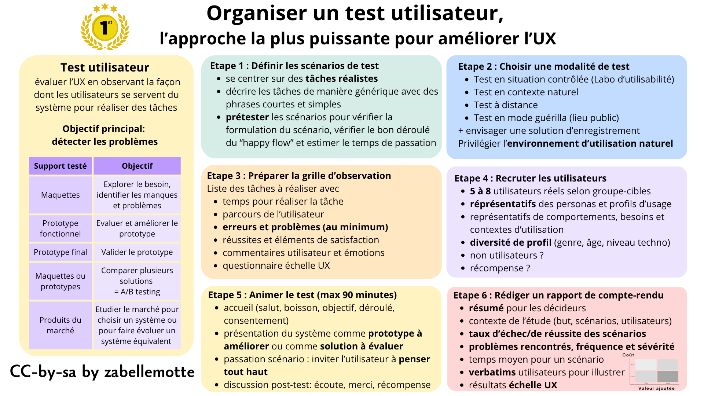
En résumé
Le test utilisateur est la méthode UX qui offre le plus grand rapport bénéfice/coût. Elle consiste à évaluer l'UX en observant la façon dont les utilisateurs de servent du produit pour réaliser des tâches.
La méthode s'applique tout au long du processus de conception, dès les premières maquettes, sur les prototypes et sur des produits du marché concurrents ou pressentis. Elle exige la préparation de scénarios, d'une grille d'observation et l'expérience se clôture souvent par une interview et/ou une évaluation via une échelle UX.
L'objectif essentiel du test utilisateur dans la démarche UX est de détecter les problèmes. Sa mise en oeuvre est simple mais exige de respecter les conditions pour son efficience :
Tester tôt et tester souvent
Le test utilisateur est au coeur de la démarche centrée utilisateur et il est utilisé tout au long de la conception:
| Support testé | Objectif du test | Description |
|---|---|---|
| Maquettes | Explorer le besoin | Tester les options envisagées pour le système pour identifier les éléments manquants, les problèmes et les corriger |
| Prototype fonctionnel | Evaluer et améliorer le prototype | Tester le système pour simuler l'exécution de tâches spécifiques |
| Prototype final | Valider le prototype | Tester le système dans sa version finale pour vérifier qu'il correspond bien aux exigences attendues |
| Maquettes ou prototypes | Comparer plusieurs solutions = A/B Testing | Tester plusieurs alternatives d'un même système pour identifier les forces et faiblesses de chacunes |
| Produits sur le marché | Etudier le marché | Etudier les systèmes sur le marché pour choisir un système ou faire évoluer la conception d'un système équivalent |
La préparation d'un plan de test peut être soutenue par une fiche à compléter comme la fiche "The usability test plan dashboard" proposée par David Travis.
Etape 1 : Définir les scénarios de test
Selon le support testé et l'objectif du test, il faut définir des scénarios de test réalistes qui permettront d'évaluer le produit. Dans une application complexe, il est aussi possible de se focaliser sur les tâches fréquentes, sur les tâches les plus complexes ou sur un processus qui doit être révisé. L'idée est de décrire des tâches de manière générique, sans préciser le cheminement à utiliser pour observer comment l'utilisateur procède. Les scénarios sont rédigés en phrases courtes et facilement compréhensibles, sans mentionner les labels précis des menus ou boutons à utiliser pour réaliser la tâche.
Il est important de veiller à prétester les scénarios, pour plusieurs raisons:
Par exemple, pour tester une application qui permet de gérer les formations internes, un scénario d'usage de base pourrait être le suivant:
Etape 2 : Choisir une modalité de test utilisateur
Les tests utilisateurs peuvent se dérouler selon 4 modalités allant de l’évaluations contrôlées en laboratoire, très structurées et coûteuses, à des tests guérilla, plus rapides, légers et exploratoires.
| Modalité | Lieu et matériel | Objectif |
|---|---|---|
| Test en situation contrôlée | Laboratoire d'utilisabilité avec salle de test isolée et salle d'observation, système d'enregistrement des actions utilisateur, ... | Recherche en ergonomie et utilisabilité |
| Test en contexte naturel | Contexte de travail de l'utilisateur, avec éventuel outil d'enregistrement et d'analyse des actions | Amélioration continue d'un produit en conception ou comparaison de produits du marché |
| Test à distance | Contexte de travail de l'utilisateur, réunion enregistrée, post-traitement soutenu par outil d'analyse ou par IA | Amélioration continue d'un produit en conception ou comparaison de produits du marché |
| Test en mode guérilla | Lieu public | Prétest rapide d'un prototype ou d'un produit du marché pour explorer les besoins et/ou détecter les problèmes |
Si le test doit seulement mettre en évidence des points d'amélioration, sans enjeu stratégique, l'enregistrement n'est pas indispensable. Mais si l'objectif est de définir des orientations pour faire évoluer un projet, les verbatims utilisateur seront précieux et l'enregistrement est alors souhaitable.
Selon la modalité choisie, privilégiez une passation de test qui permettent de placer l'utilisateur dans son environnement d'utilisation habituel. Si le test se déroule en présence, n'hésitez pas à vous déplacer sur le lieu de travail ou à inviter l'utilisateur à emporter son ordinateur personnel pour le test. S'il se déroule à distance, exploitez la solution de réunion virtuelle usuelle pour la personne.
Etape 3 : Préparer la grille d'observation et définir les indicateurs de suivi
Les indicateurs minimalistes pour un test utilisateur sont le nombre d'erreurs rencontrées et leur description.
Si vous envisagez une analyse plus détaillée, vous pouvez prévoir d'enregistrer les tests. Cela permet d'être moins attentif pendant la passation, mais l'analyse des enregistrements exigera un post-traitement. Les outils d'intelligence artificielle peuvent vous aider à retranscrire l'interview, la synthétiser et en extraire des verbatims pour illuster des points d'attention.
Que vous meniez l'analyse en live ou en différé sur base des enregistrements, il est intéressant de disposer d'une grille d'observation qui reprend, selon le besoin, les indicateurs suivants:
Il est toujours intéressant de terminer l'expérience par un questionnaire de satisfaction comme décrit dans l'article Exploiter les échelles d'évaluation de l'UX. Notez que le questionnaire le plus court ne contient que 2 questions et qu'il est donc possible de trouver une échelle adaptée à toutes les situations. Les questionnaires plus long permettent de dégager des indicateurs chiffrés qui permettent de réaliser des graphiques explicites pour présenter les axes d'amélioration importants.
Pour varier la modalité de feedback, des questions ouvertes peuvent aussi être posées sous la forme de phrase à compléter, comme celles-ci:
Si le projet doit induire des changemements majeurs, les verbatims utilisateur seront précieux pour les motiver. Veillez donc à les collecter, soit en enregistrant au minimim l'audio, soit en proposant des questions ouvertes sous forme de phrases à compléter lors de l'entretien de suivi du test.
Etape 4 : Recruter les utilisateurs
Le recrutement des participants est un élément clé de la réussite d'un test utilisateur. Ils ne doivent pas être nombreux (5 à 8 selon les groupes cibles), mais ils doivent être sélectionner pour être représentatifs de l'ensemble des usages. Et le test repose sur des rencontres individuelles pour éviter les jeux d'influence induits pas la dynamique d'un groupe.
Le chiffre de 5 utilisateurs a longtemps été promu comme idéal pour maximiser le rapport bénéfice/coût du test utilisateur, suite à une étude de Jacob Nielsen parue 1993. Via une analyse transversale sur une dizaine de projets, Jakob Nielsen a estimé qu’un test mené avec 5 utilisateurs permettait d’identifier environ 85 % des principaux problèmes d’utilisabilité d’une interface. Mais d'autres auteurs ont montré plus récemment que le nombre idéal pouvait dépendre de la complexité du système et qu'il fallait parfois aller au delà du chiffre de 5 utilisateurs pour atteindre une proportion de problèmes identifiés de 85%. Les praticiens conseillent de commencer par 5 utilisateurs et d'aviser ensuite. Mais si les tests ne soutiennent pas une démarche de recherche, on ne devrait jamais dépasser 10 utilisateurs testeurs.
Pour recruter des utilisateurs représentatifs, les principes suivants sont à prendre en compte :
S'il n'est pas évident de recruter des utilisateurs, des récompenses peuvent être envisagées (comme pour les interviews), par exemple sous la forme de bons cadeau.
Etape 5 : Animer un test utilisateur
Tout comme pour Mener des interviews pour exporer en profondeur les pratiques , l'animation d'un test utilisateur exige un temps d'accueil.
Plus précisément, l'animation du test se déroule comme suit:
S'il y a un enjeu de suivi important, l'idéal est de pouvoir animer le test à 2 pour qu'une personne se concentre sur la passation et l'autre sur la prise de notes. Mais les enregistrements peuvent vous permettre d'animer le test seul.e et de faire l'analyse à postériori. Il peut être pertinent d'inviter un développeur, un chef de projet ou un décideur à participer de manière passive à un test utilisateur pour qu'il soit conscient de la réalité d'utilisation.
Etape 6 : Rédiger un rapport de compte-rendu d'un test utilisateur
Le rapport d'un test utilisateur doit reprendre les éléments suivants :
Les axes de travail peuvent être présentés au travers d'une matrice de décision à 4 quadrants structurée sur base d'un axe lié à la valeur ajoutée et d'un axe lié au coût.
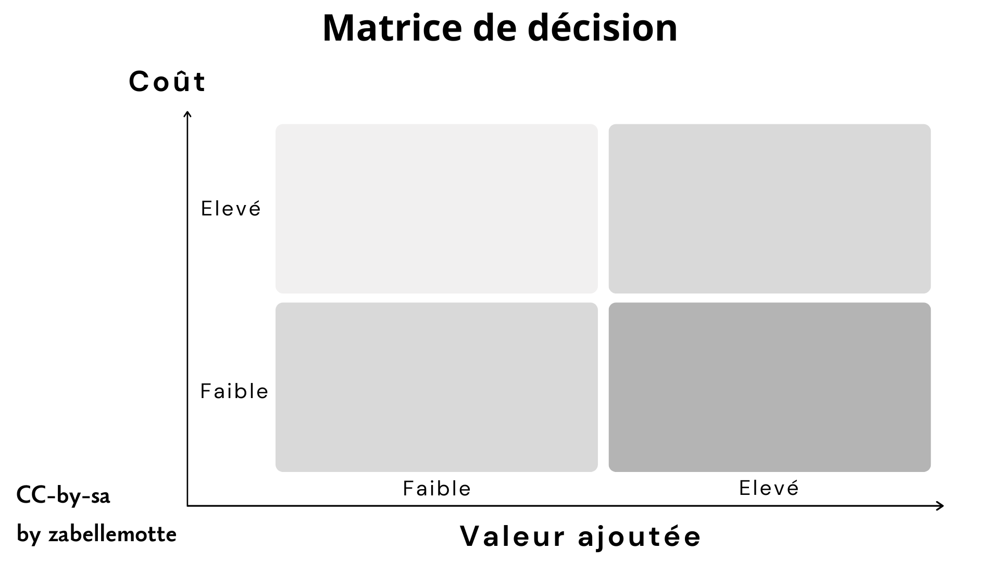
La petite histoire
Le test utilisateur en UX trouve ses origines dans les travaux en ergonomie et en psychologie cognitive menés dès les années 1940-1950, notamment dans les domaines de l’aéronautique et de l’ingénierie. Des chercheurs comme John E. Karlin et Alphonse Chapanis ont montré l’importance d’observer les utilisateurs réels pour concevoir des systèmes plus efficaces et plus sûrs. Dans les années 1980, l’approche est popularisée dans l’informatique grâce à Don Norman et Jakob Nielsen, qui défendent le design centré sur l’utilisateur et les tests d’utilisabilité. Aujourd’hui, le test utilisateur est devenu une pratique centrale de l’UX design dans le développement de sites web, d’applications et de services numériques.
Cet article et ses illustrations sont partagées sous licence Creative Commons-by-sa.
Exploiter les échelles d'évaluation de l'UX
En un coup d'oeil
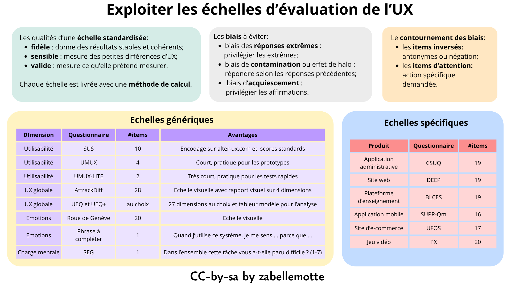
En résumé
Les échelles UX standardisées permettent d'évaluer l'expérience utilisateur à l'issue d'un test de manière précise. Elles peuvent cibler l'évaluation de l'utilisatibilité, des émotions, de l'UX globale ou avoir été conçue pour des produits spécifiques (site web, jeux vidéo, ...). Leur résultat est souvent structuré en différentes dimensions et il prend parfois la forme d'un score global à prendre comme référence pour évaluer l'évolution du produit.
Des échelles standardisées pour mesurer ce qui compte
Pour évaluer l'UX, les échelles standardisées doivent être privilégiées car elles permettent de garantir une évaluation de qualité. Plus précisément, les échelles standardisées rencontrent 3 conditions de qualité:
Les items d'un questionnaire ne peuvent pas être modifiés mais, si l'évaluation porte seulement sur un aspect précis, il est possible de ne retenir que les items liés à une dimension précise du questionnaire. Tous les items de cette dimension doivent alors être proposés. Chaque formulaire est livré avec une méthode de calcul pour déterminer le score pour chaque dimension et cette méthode ne peut pas être adaptée. Certains questionnaires proposent aussi une échelle d'analyse standardisée pour interpréter les scores.
Des biais à éviter
Lors de la réponse à un questionnaire d'évaluation, 3 biais peuvent se présenter:
Ces biais peuvent être contournés en utilisant 2 stratégies:
Les items négatifs exigent un post-traitement car leur score doit être recalculé en inversant l'échelle. Les questions d'attention impliquent un pré-traitement pour éliminer les réponses où ces questions ont un mauvais score. Le temps de réponse peut aussi être pris en compte pour éliminer les réponses de participants qui auraient répondu avec peu de sérieux.
La roue des échelles UX de Guillaume Gronier
Guillaume Gronier est un chercheur qui étudie des échelles UX et qui partage son travail de veille sous la forme d'une roue associée à une série de références et d'échelles prêtes à télécharger. Cette roue est LA référence pour trouver des grilles d'évaluation de l'UX qu'elles soient génériques ou ciblées.
Ma sélection d'échelles
Face à l'éventail des échelles proposées, j'ai choisi d'en retenir quelques-unes pour soutenir mes pratiques UX. Je ne suis pas chercheuse mais praticienne et confrontée chaque jour à des délais très court pour remettre des livrables. J'ai donc décider de placer dans ma boîte à outil de l'UX uniquement des échelles courtes (maximum 20 items et/ou plutôt visuelles) et j'ai aussi veillé à disposer de questionnaires très courts à exploiter pour les tests préliminaires de maquettes basse fidélité ou d'embryons de prototypes.
| Dimension | Questionnaire | #Items | Ressources | Remarques |
|---|---|---|---|---|
| Utilisabilité | SUS (System Usability Scale) | 10 | Article de référence | Le rapport du SUS peut être obtenu facilement en encodant ses données via le site alter-ux.com et le score SUS permet de situer l’utilisabilité d’une interface par rapport à des niveaux de référence standardisés. |
| Utilisabilité | UMUX (Usability Metric fos User Experience) | 4 | Grille à imprimer + Article de référence | |
| Utilisabilité | UMUX-LITE | 2 | Grille à imprimer + Article de référence | |
| UX globale | AttrackDiff | 28 | Grille à imprimer + Article de référence | Le questionnaire consiste à positionner 28 items entre 2 pôles et est encore assez rapide à compléter. Cette échelle permet de présenter les résultats en 4 dimensions avec des présentations très visuelles. |
| UX globale | UEQ et UEQ+ | 27 dimensions au choix avec 4 items chacunes | Site de référence sur UEQ + Site de référence UEQ+ | Les sites de référence proposent les modèles de grilles à imprimer avec des items pour une vingtaine de dimensions au choix. Les modèles de fichiers tableurs pour encoder les données et générer les graphiques sont aussi disponibles au téléchargement. |
| Emotions | Roue des émotions de Genève | 20 | Grille à imprimer + Article de référence | Cette grille est présentée de manière très visuelle sur une seule page. |
| Emotions | Phrase à compléter unique | 1 | Phrase obtenue via une veille dans la littérature avec Elicit sans référence explicite associée | "Quand j'utilise ce système, je me sens ... parce que ..." |
| Charge mentale | SEQ (Single Ease Question) | 1 | Site de référence | Dans l'ensemble, cette tâche vous a-t-elle paru facile ou difficile ? (1 = très difficile, 7 = très facile) |
J'épingle aussi quelques questionnaires adaptés à l'évaluation de produits spécifiques:
| Produit | Questionnaire | #Items | Ressources | Remarques |
|---|---|---|---|---|
| Application administrative | CSUQ (Computer Usability Satisfaction Questionnaire) | 19 | Grille à imprimer + Article de référence | |
| Site web | DEEP (Design-oriented Evaluation of Perceived Usability) | 19 | Article de référence | Les résultats du questionnaire sont souvent présentés sous forme de graphique en radar avec les différentes dimensions du questionnaire. |
| Plateforme d'enseignement | BLCES | 19 | Article de référence | |
| Application mobile | SUPR-Qm | 16 | Article de référence | |
| Site d'e-commerce | UFOS | 17 | Article de référence | |
| Jeu vidéo | PX | 34 | Article de référence |
La petite histoire
Les premières échelles UX sont apparues dans les années 1980 pour mesurer l’utilisabilité des systèmes informatiques. La plus connue est la System Usability Scale (SUS), créée en 1986 par John Brooke. Simple et rapide à utiliser, elle est devenue une référence pour évaluer la facilité d’utilisation et la satisfaction des utilisateurs.
Dans les années 2000, la notion d’expérience utilisateur s’est popularisée grâce aux travaux de Don Norman et de chercheurs comme Marc Hassenzahl. Les échelles UX ont alors évolué pour mesurer aussi les émotions, le plaisir et la qualité globale de l’expérience vécue par les utilisateurs.
Références
Les articles de ce site s'inspirent des références suivantes ...
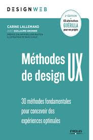
Le livre Méthodes de design UX - 30 méthodes fondamentales pour concevoir des expériences optimales de Carine Lallemand et Guillaume Gronier (2ième édition)" est une référence incontournable pour découvrir le UX design. La structure de ce site et les articles émanant de l'approche UX s'en inspirent largement.
Le livre Pratiques de management de projet - 50 outils et techniques pour réussir vos projets de Vincent Drecq est une belle référence pour décourvrir les méthodes de gestion de projet et les approches proposées me semblent intéressantes pour nourrir la démarche UX, en particulier les phases de début qui visent à analyser et à prioriser les besoins.
Mes articles sont aussi largement inspirés des cours du Certificat inter-universités en user experience and research (UX) auquel j'ai participé de janvier à juin 2026. Les différents enseignants de ce programme m'ont permis d'intégrer l'intérêt des méthodes proposées et les conseils pratiques pour leur mise en application.
Les visuels et infographies des articles de ce site ont été réalisées avec la version gratuite de service en ligne canva.com. Les modèles proposés par Canva sont nombreux et inspirants et je signale que je n'ai pas fait usage d'outil IA internes ou externes au service car j'ai toujours trouvé mon bonheur dans les modèles gratuits. Pour quelques illustrations, j'ai intégré des images externes libres de droit et je l'ai alors explicitement signalé dans l'image et dans le texte.

Tout au long de la rédaction, mes échanges ont été nourris par des interactions avec des outils d'IA comme ChatGPT et Copilot. Ces outils m'ont permis de clarifier certains points et de synthétiser certaines parties comme les sections "La petite histoire ..." ou les paragraphes qui résument la pensée d'un auteur.